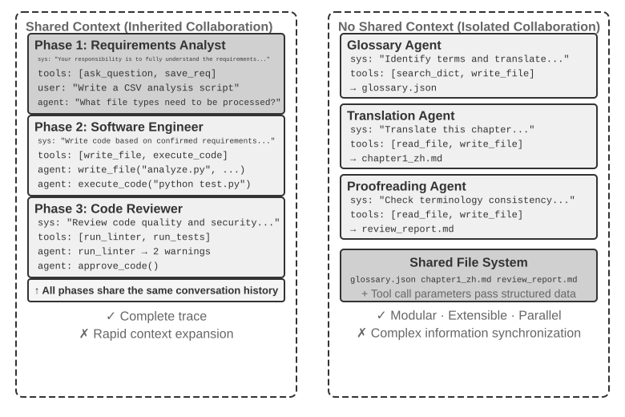
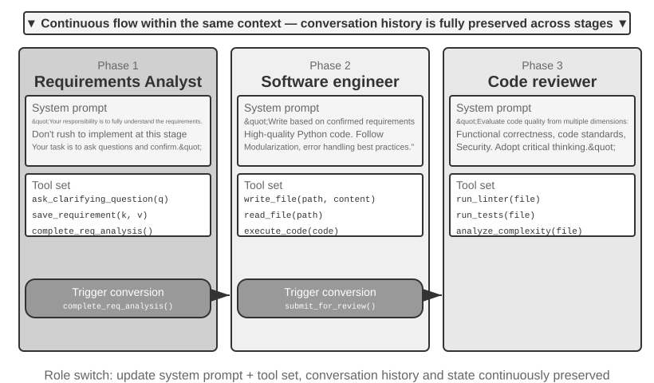
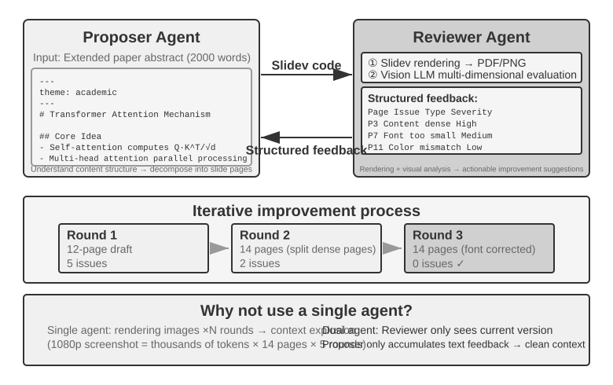
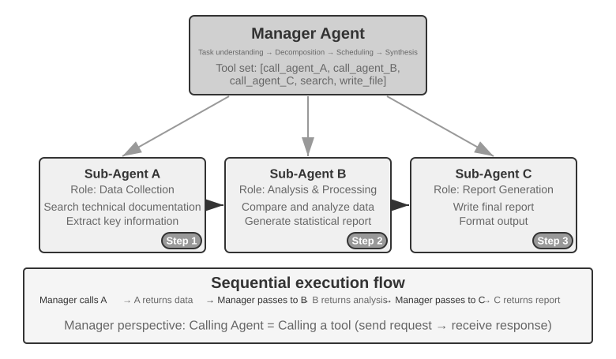
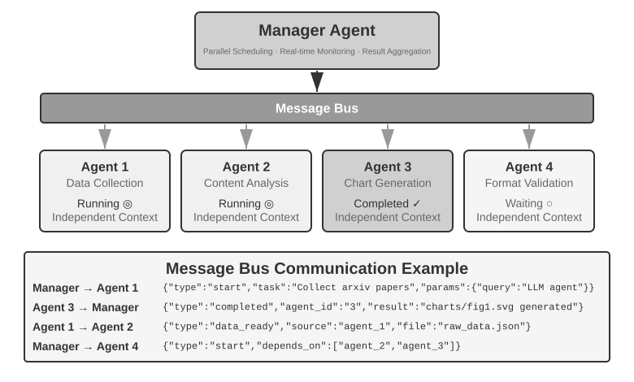
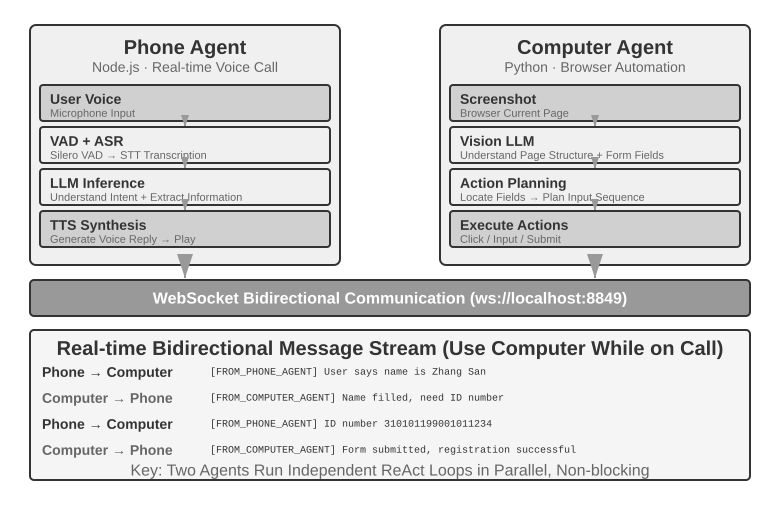
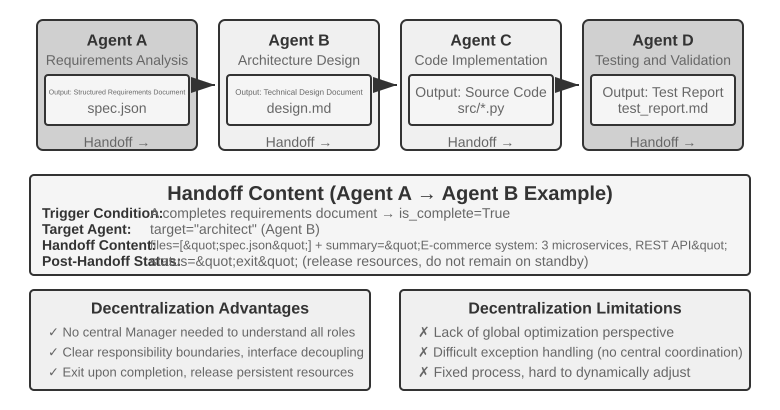
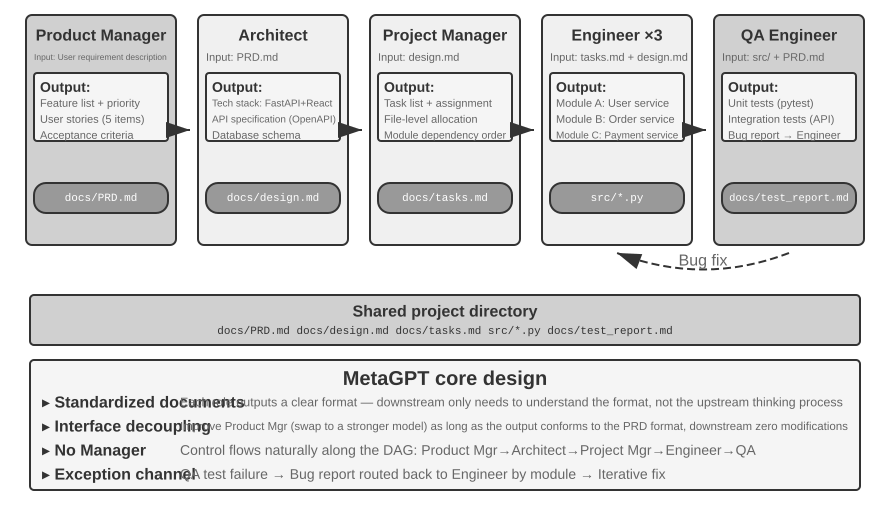
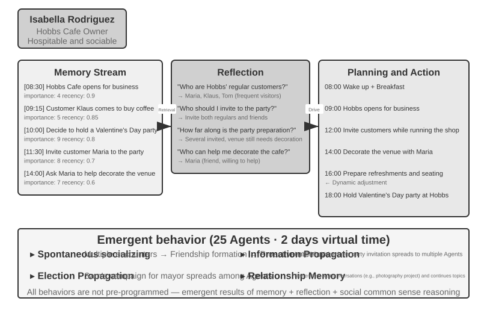
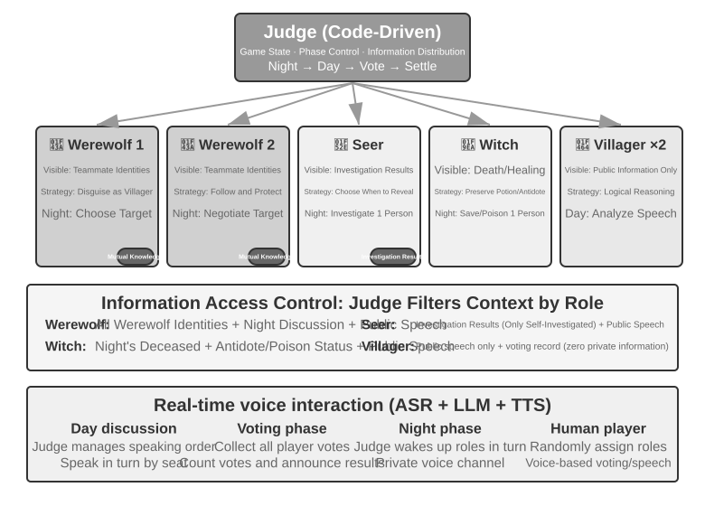

பல-ஏஜெண்ட் கூட்டுச் செயல்பாடு¶
OpenAI முன்மொழிந்த ஐந்து-நிலை AI திறன் அளவுகோலில் (நிலை 1 உரையாடலாளர்கள், நிலை 2 பகுத்தறிவாளர்கள், நிலை 3 ஏஜெண்டுகள், நிலை 4 புதுமையாளர்கள், நிலை 5 நிறுவனங்கள்), பல-ஏஜெண்ட் கூட்டுச் செயல்பாடு பெரும்பாலும் நிலை 5-ஐ அடைவதற்கான வழிகளில் ஒன்றாகக் கருதப்படுகிறது—இங்கு "நிறுவனங்கள்" என்பது "AI ஒரு முழு நிறுவனத்தின் வேலையையும் முடிக்க முடியும்" என்ற திறன் நிலையைக் குறிக்கிறதே தவிர, கட்டமைப்பு ரீதியான தேவை அல்ல; போதுமான சக்திவாய்ந்த ஒற்றை ஏஜெண்ட் கோட்பாட்டளவில் இதை அடைய முடியும். இருப்பினும், இன்றைய பொறியியல் யதார்த்தத்தைக் கருத்தில் கொண்டால், ஒற்றை ஏஜெண்ட் இறுதியில் அதன் சொந்த மாதிரியின் திறன் எல்லைகள் மற்றும் சூழல் சாளரத்தால் (context window) கட்டுப்படுத்தப்படுகிறது.
பல ஏஜெண்டுகளை ஒன்றாகச் செயல்பட வைப்பது என்பது வெவ்வேறு நிபுணத்துவம் கொண்ட ஏஜெண்டுகள் "ஒருவருக்கொருவர் பலத்தை நிறைவு செய்வதை" விட மிக அதிகமானதைக் குறிக்கிறது. மிகவும் அடிப்படையான ஒரு கருத்து: ஒரு குழுவின் நுண்ணறிவு ஒரு தனிநபரின் நுண்ணறிவை விட மேலானதாக இருக்கும். மனித நாகரிகம் இதற்கு ஒரு சான்று—ஒரு தனிநபரின் நுண்ணறிவு வரையறுக்கப்பட்டது, ஆனால் உழைப்புப் பிரிவினை, கூட்டுச் செயல்பாடு, விவாதம் மற்றும் தலைமுறைகளுக்கிடையேயான அறிவுக் குவிப்பு மூலம், மனித சமூகம் ஒட்டுமொத்தமாக எந்த ஒரு மேதையின் நுண்ணறிவையும் விட மிக அதிகமான நுண்ணறிவை வெளிப்படுத்துகிறது. ஏஜெண்ட் குழுக்களும் இதுபோன்ற கூட்டு நுண்ணறிவை உருவாக்கக்கூடும்: ஒவ்வொரு ஏஜெண்டும் ஒரு மனித நிபுணரின் திறனை மட்டுமே கொண்டிருந்தாலும், அவை சரியான முறையில் ஒழுங்கமைக்கப்பட்டால், அவற்றின் ஒட்டுமொத்த திறன் அனைத்து மனித நிபுணர்களின் கூட்டுத்தொகையையும் விட அதிகமாக இருக்கலாம். AGI-லிருந்து ASI வரை என்ற நூலில், Google DeepMind "பெரிய அளவிலான பல-ஏஜெண்ட் கூட்டமைப்புகளை" மீத்திறன் நுண்ணறிவை (ASI) நோக்கிய முக்கிய வழிகளில் ஒன்றாக பட்டியலிடுகிறது—மனித பொது நுண்ணறிவு தனிநபர்களை மீறும் சமூகங்களாகவும் நிறுவன அமைப்புகளாகவும் ஒருங்கிணைய முடிவது போலவே, பல AGI-நிலை ஏஜெண்டுகள் ஒன்றாகச் செயல்படுவதால் உருவாகும் "கூட்டு நுண்ணறிவு" அவற்றின் உறுப்பினர்களின் எளிய கூட்டுத்தொகையை விட மிக அதிகமான அறிவாற்றல் திறன்களை வெளிப்படுத்தக்கூடும்1. எனவே, பல-ஏஜெண்ட் கூட்டுச் செயல்பாடு என்பது ஒற்றை மாதிரியின் சூழல் சாளரம் மற்றும் திறன் எல்லைகளை உடைப்பதற்கான ஒரு பொறியியல் வழிமுறை மட்டுமல்ல, "நிபுணர்-நிலை AI"-லிருந்து "ஒட்டுமொத்த மனிதகுலத்தையும் மிஞ்சுதல்" நோக்கிய ஒரு அடிப்படைப் பாதையாக இருக்கலாம்.
பல-ஏஜெண்ட் கூட்டுச் செயல்பாட்டிற்கான வகைப்பாட்டுக் கட்டமைப்பு¶
ஒரு பல-ஏஜெண்ட் அமைப்பை உருவாக்க, முதலில் இரண்டு மைய வடிவமைப்பு பரிமாணங்களைப் புரிந்துகொள்ள வேண்டும், அவை ஒன்றாக அமைப்பின் அடிப்படை கட்டமைப்பு மற்றும் செயலாக்க அணுகுமுறையை தீர்மானிக்கின்றன.
பரிமாணம் 1: பகிரப்பட்ட vs. பகிரப்படாத சூழல்¶
இதுவே மிகவும் அடிப்படையான கட்டமைப்பு முடிவாகும், இது பல ஏஜெண்டுகளுக்கு இடையே தகவல் எவ்வாறு கடத்தப்படுகிறது என்பதை தீர்மானிக்கிறது.
பகிரப்பட்ட சூழல் (Shared context) என்பது, ஒரு ஏஜெண்டுக்குப் பின் வரும் ஏஜெண்ட், முந்தைய ஏஜெண்டின் முழு உரையாடல் வரலாறு மற்றும் பாதையை (அத்தியாயம் 1 இல் வரையறுக்கப்பட்டுள்ளபடி) பெறுகிறது என்பதாகும். ஒவ்வொரு கட்டத்திலும் சிஸ்டம் ப்ராம்ப்ட் (system prompt) மற்றும் கருவித்தொகுப்பு (tool set) மாற்றப்படும்போது, அது ஒரு புதிய ஏஜெண்டாக மாறுகிறது (ஏனெனில் அதன் அடையாளம், பொறுப்புகள் மற்றும் திறன்கள் மாறிவிட்டன), ஆனால் அது தனது முன்னோடியின் அனைத்து நினைவுகளையும் தக்க வைத்துக் கொள்கிறது. உதாரணமாக, ஒரு குழுவில், தேவைகள் ஆய்வாளர் தேவைகள் ஆவணத்தை எழுதிய பிறகு, டெவலப்பர் அந்த ஆவணத்தை மட்டும் பெறாமல், ஆய்வாளருக்கும் பயனருக்கும் இடையேயான அனைத்து தகவல் தொடர்பு பதிவுகளையும் பார்க்க முடியும்—அவர்கள் ஒரு புதிய பாத்திரம் ஆனால் முழு முந்தைய சூழலையும் தக்க வைத்துக் கொள்கிறார்கள். இதன் நன்மை என்னவென்றால், எந்த தகவலும் இழக்கப்படுவதில்லை; ஒவ்வொரு ஏஜெண்டும் முந்தைய எந்த கட்டத்திலிருந்தும் விவரங்களை மதிப்பாய்வு செய்ய முடியும். சவால் என்னவென்றால், சூழல் விரைவாக விரிவடையும்.
பகிரப்படாத சூழல் (Non-shared context) என்பது, ஒவ்வொரு ஏஜெண்டும் முற்றிலும் சுயாதீனமான சூழல் மற்றும் உரையாடல் வரலாற்றைப் பராமரிக்கிறது, மற்றவர்களின் "சிந்தனை செயல்முறைகளை" நேரடியாக அணுக முடியாது. இது வெவ்வேறு துறைகளுக்கு இடையேயான ஒத்துழைப்பைப் போன்றது: ஒவ்வொருவரும் தங்கள் சொந்த மேசையில் சுயாதீனமாக வேலை செய்கிறார்கள், பகிரப்பட்ட ஆவணங்கள் மற்றும் கூட்ட நிமிடங்கள் மூலம் தகவல்களைப் பரிமாறிக்கொள்கிறார்கள், மற்றவர்களின் திரைகளை தொடர்ந்து பார்ப்பதற்குப் பதிலாக. இந்த மாதிரி சிறந்த தொகுதி அமைப்பு (modularity) மற்றும் தனிமைப்படுத்தலை (isolation) வழங்குகிறது; ஒவ்வொரு ஏஜெண்டும் தனது சொந்த பொறுப்புகளுக்கு தொடர்புடைய தகவல்களில் மட்டுமே கவனம் செலுத்த வேண்டும். கணினியை விரிவுபடுத்துவதும் பராமரிப்பதும் எளிதானது—ஒரு புதிய ஏஜெண்டைச் சேர்ப்பதற்கு ஏற்கனவே உள்ள ஏஜெண்டுகளின் உள் தர்க்கத்தை மாற்ற வேண்டியதில்லை, இடைமுகங்கள் மற்றும் தரவு வடிவங்களை மட்டும் வரையறுத்தால் போதும்.
ஏஜெண்டுகள் சூழலைப் பகிர்ந்து கொள்ளாததால், தகவல்கள் வெளிப்படையான தகவல் தொடர்பு வழிமுறைகள் மூலம் அனுப்பப்பட வேண்டும். இந்தப் பிரச்சினைக்கு பாரம்பரிய பரவலாக்கப்பட்ட அமைப்புகளில் நெடுங்காலமாகவே பதில் உள்ளது: இயங்குதள (operating system) பாடநூல்கள் நமக்குச் சொல்வது என்னவென்றால், செயல்முறைகளுக்கு இடையேயான தொடர்பு (IPC—inter-process communication) இறுதியில் இரண்டு முன்னுதாரணங்களாக மட்டுமே சுருங்குகிறது—பகிரப்பட்ட நினைவகம் (shared memory—ஒருவர் எழுத, மற்றொருவர் அதே சேமிப்பிடத்திலிருந்து படித்தல்) மற்றும் செய்தி அனுப்புதல் (message passing—தரவை மற்றவருக்கு வெளிப்படையாக அனுப்புதல்). ஏஜெண்டுகளுக்கு இடையேயான தொடர்பு வழிமுறைகளும் இதே இரண்டு முன்னுதாரணங்களுக்குள்ளேயே அடங்குகின்றன; மூன்று பொதுவான முறைகள் உள்ளன:
- கருவி அழைப்பு அளவுருக்கள் (Tool call parameters): மேல்நிலை ஏஜெண்ட், கீழ்நிலை ஏஜெண்டின் கருவிக்கு கட்டமைக்கப்பட்ட தரவை அளவுருக்களாக அனுப்புகிறது. நன்கு வரையறுக்கப்பட்ட வகைகள் மற்றும் தெளிவான கட்டமைப்பு தேவைப்படும் சூழ்நிலைகளுக்கு இது பொருத்தமானது.
- பகிரப்பட்ட கோப்பு முறைமை (Shared file system): ஏஜெண்டுகள் ஒரு பகிரப்பட்ட கோப்பகத்தில் இடைநிலை கலைப்பொருட்களை (ஆவணங்கள், குறியீடு போன்றவை) எழுதி படிப்பதன் மூலம் தகவல்களைப் பரிமாறிக்கொள்கின்றன. பெரிய கலைப்பொருட்கள் அல்லது நிலைத்தன்மை தேவைப்படும் சூழ்நிலைகளுக்கு இது பொருத்தமானது.
- செய்தி பேருந்து (Message Bus): ஏஜெண்டுகளுக்கு இடையே செய்திகளை அனுப்பும் ஒரு பிரத்யேக இடைத்தரகர். ஏஜெண்டுகள் நேரடியாக ஒன்றையொன்று அழைப்பதில்லை; மாறாக, பேருந்துக்குச் செய்திகளை அனுப்புகின்றன, அது அவற்றை இலக்கு ஏஜெண்டுக்குச் சேர்ப்பிக்கிறது.
IPC இன் இரண்டு முன்னுதாரணங்களுக்கு இவற்றை பொருத்திப் பார்த்தால்: பகிரப்பட்ட கோப்பு முறைமையே ஏஜெண்ட் உலகின் "பகிரப்பட்ட நினைவகம்"; கருவி அழைப்பு அளவுருக்களும் செய்தி பேருந்தும் "செய்தி அனுப்புதலின்" இரு வடிவங்கள்—முந்தையது அழைப்புடன் ஒத்திசைவாக அனுப்பப்படுகிறது, பிந்தையது ஒரு இடைத்தரகர் வழியாக ஒத்திசைவற்று வழங்கப்படுகிறது. இரண்டு முன்னுதாரணங்களுக்கும் அவற்றின் சமரசங்கள் உண்டு. Go மொழியில் பரவலாக மேற்கோள் காட்டப்படும் ஒரு வாக்கியம் உள்ளது: "பகிரப்பட்ட நினைவகத்தின் மூலம் தொடர்பு கொள்ளாதீர்கள்; மாறாக, தொடர்பு கொள்வதன் மூலம் நினைவகத்தைப் பகிருங்கள்"—பகிரப்பட்ட நினைவகம் வேகமானது, ஆனால் இணைநிலை மோதல்களின் அபாயத்தைப் பயனாளர் மீது விட்டுவிடுகிறது; செய்தி அனுப்புதலுக்கு அதிக ஒழுங்கமைப்புக் குறியீடு எழுத வேண்டியிருக்கிறது, ஆனால் தரவின் உரிமையைத் தெளிவாக்கிக் காட்டுகிறது. இந்தச் சமரசம் பின்வரும் நிலை வினவல் மற்றும் இணைநிலை மோதல்களில் மீண்டும் மீண்டும் தோன்றும்.
செய்தி பேருந்து இயற்கையாகவே ஒத்திசைவற்ற தகவல் தொடர்பை (asynchronous communication) ஆதரிக்கிறது—அனுப்புநரும் பெறுநரும் ஒரே நேரத்தில் இணைந்திருக்க வேண்டியதில்லை. இது ஒரு நிறுவனத்தின் உள் மின்னஞ்சல் அமைப்பைப் போன்றது: நீங்கள் ஒரு சக ஊழியருக்கு மின்னஞ்சல் அனுப்பும்போது, அவர்கள் அந்த நேரத்தில் கணினியில் இருக்க வேண்டிய அவசியமில்லை; மின்னஞ்சல் சேவையகத்தில் சேமிக்கப்பட்டு, சக ஊழியர் இணைந்ததும் செயலாக்கப்படும். பல ஏஜெண்டுகள் இணையாக வேலை செய்து ஒருவருக்கொருவர் ஒருங்கிணைக்க வேண்டிய சூழ்நிலைகளுக்கு இந்த அணுகுமுறை மிகவும் பொருத்தமானது (இந்த அத்தியாயத்தின் பின்னர் உள்ள "இணை ஒருங்கிணைப்பு" பகுதியைப் பார்க்கவும்).

இரண்டு கட்டமைப்புகளும் உண்மையான பல-ஏஜெண்ட் அமைப்புகள் என்பதை தெளிவுபடுத்த வேண்டும் (ஏனெனில் ஒவ்வொரு கட்டத்திலும் சிஸ்டம் ப்ராம்ப்ட் மற்றும் கருவித்தொகுப்பு வேறுபடுகின்றன, அவற்றை வெவ்வேறு ஏஜெண்டுகளாக ஆக்குகின்றன); வேறுபாடு ஒருங்கிணைப்பு முறையில் உள்ளது. பகிரப்பட்ட சூழல் என்பது மறைமுக ஒருங்கிணைப்பை நம்பியுள்ளது—அடுத்தடுத்த ஏஜெண்டுகள் முந்தைய ஏஜெண்டுகளின் முழுமையான சூழல் வரலாற்றைப் பெறுகின்றன, முந்தைய சிந்தனை செயல்முறைகளை "பார்க்க" முடியும், மேலும் தகவல் சூழல் வழியாகவே அனுப்பப்படுகிறது. பகிரப்படாத சூழல் என்பது வெளிப்படையான ஒருங்கிணைப்பை நம்பியுள்ளது—ஏஜெண்டுகள் கோப்புகள், செய்திகள் அல்லது கட்டமைக்கப்பட்ட தரவு இடைமுகங்கள் மூலம் தகவல்களைப் பரிமாறிக் கொள்கின்றன, மேலும் ஒவ்வொரு ஏஜெண்டும் தனக்குத் தொடர்புடைய உள்ளடக்கத்தை மட்டுமே பார்க்கிறது.
ஒப்புமை மூலம்: முந்தையது ஒரு மேசையைச் சுற்றி அமர்ந்து விவாதிக்கும் ஒரு குழுவைப் போன்றது, அனைவரும் எல்லாவற்றையும் கேட்கிறார்கள். பிந்தையது மின்னஞ்சல் மற்றும் ஆவணங்கள் மூலம் ஒத்துழைக்கும் வெவ்வேறு துறைகளைப் போன்றது, ஒவ்வொன்றும் அதன் சொந்த பணியிடத்தைக் கொண்டுள்ளது.
இயங்குதளத்தை அறிந்த வாசகர்கள் இந்த ஜோடித் தேர்வை உடனே அடையாளம் காண்பார்கள்: பகிரப்பட்ட சூழல் என்பது இழை (thread), பகிரப்படாத சூழல் என்பது செயல்முறை (process). இழைகள் முகவரி இடத்தை (address space) பகிர்ந்துகொள்கின்றன, மாறுதல் செலவு குறைவு, தொடர்புக்கு நகலெடுப்பு தேவையில்லை; அதற்குரிய விலை—தனிமைப்படுத்தல் இல்லாமை, ஒரு இழை நினைவகத்தைக் கெடுத்தால் முழு செயல்முறையும் அத்துடன் செயலிழக்கிறது. செயல்முறைகள் ஒவ்வொன்றும் தனித்தனி முகவரி இடத்தைக் கொண்டுள்ளன, தனிமைப்படுத்தல் முழுமையானது, பாதுகாப்பாக இணையாக இயங்கலாம்; அதற்குரிய விலை—தொடர்பு வெளிப்படையான IPC வழியாகவே நடக்க வேண்டும். அட்டவணை 10-1 இன் ஒவ்வொரு தேர்வு அளவுகோலையும் இந்தச் சமரச ஜோடியிலிருந்து பெற்றெடுக்கலாம்.
அட்டவணை 10-1 இரண்டு கட்டமைப்புகளுக்கான தேர்வு அளவுகோல்களை ஐந்து கண்ணோட்டங்களில் இருந்து சுருக்கமாகக் கூறுகிறது: துணைப் பணிகளின் எண்ணிக்கை, சூழல் சாளரம், இணைநிலை, தகவல் தனிமைப்படுத்தல் மற்றும் செலவு வரவு செலவுத் திட்டம். இது ஆரம்ப கட்ட கட்டமைப்புத் தேர்வுக்கான சரிபார்ப்புப் பட்டியலாக செயல்பட முடியும்.
அட்டவணை 10-1 பகிரப்பட்ட மற்றும் பகிரப்படாத சூழலுக்கான தேர்வு அளவுகோல்கள்
| தேர்வு அளவுகோல் | பகிரப்பட்ட சூழல் | பகிரப்படாத சூழல் |
|---|---|---|
| துணைப் பணிகளின் எண்ணிக்கை | குறைவு (2-3 பாத்திரங்கள்) | அதிகம் (இணைநிலை செயலாக்கம் தேவை) |
| சூழல் சாளரம் | அனைத்து பாத்திரங்களுக்குமான தகவல்களை இடமளிக்க முடியும் | ஒற்றை சாளரம் போதுமானதாக இல்லை |
| இணைநிலை | முதன்மையாக தொடர் (பாத்திரங்கள் ஒரே பாதையில் மாறி மாறி வருகின்றன) | இணைநிலையில் பெரிய அளவில் விரிவடைய முடியும் (சூழல்கள் சுயாதீனமானவை, தடுக்காதவை) |
| தகவல் தனிமைப்படுத்தல் | தேவையில்லை (அனைத்து பாத்திரங்களும் தகவலைப் பகிர்ந்து கொள்கின்றன) | தேவை (எ.கா., பாதுகாப்பு மதிப்பாய்வு மூல சிந்தனை செயல்முறைகளைப் பார்க்கக் கூடாது) |
| செலவு வரவு செலவுத் திட்டம் | ஒற்றை பாதை கட்டம் கட்டமாக கைமாற்றப்படுகிறது; டோக்கன்கள் கட்டந்தோறும் குவிகின்றன | பல ஏஜெண்டுகள் சுயாதீனமாக செயல்படுகின்றன; மொத்த டோக்கன்கள் பொதுவாக பல மடங்கு முதல் சுமார் பத்து மடங்கு வரை அதிகம் |
எளிய கட்டைவிரல் விதி: எதிர்பார்க்கப்படும் ஒட்டுமொத்த சூழல் சாளரத்தின் 50% ஐத் தாண்டினால் (இது ஒரு கட்டைவிரல் விதி, துல்லியமான வரம்பு அல்ல), பகிரப்படாத சூழலைப் பயன்படுத்தவும். பணியின் சரியான தன்மைக்கு பூஜ்ஜிய தகவல் இழப்பு இன்றியமையாத் தேவையாக இருந்தால், பகிரப்பட்ட சூழலைப் பயன்படுத்தவும். பெரும்பாலான நிஜ-உலக அமைப்புகள் கட்டத்திற்கு ஏற்ப மாறுகின்றன—முதல் சில ஏஜெண்டுகள் சூழலைப் பகிர்ந்து கொள்கின்றன; பின்னர், தகவல் செறிவுப் புள்ளியை அடைந்தவுடன், வெளிப்படையான கையளிப்புடன் (மேல்நிலை ஏஜெண்ட் எந்தத் தகவலைக் கீழ்நிலை ஏஜெண்டுக்கு அனுப்புவது என்பதைத் தானே முடிவு செய்கிறது) பகிரப்படாத சூழலுக்கு மாறுகின்றன.
பரிமாணம் 2: ஒத்துழைப்பு இடவியல்¶
இரண்டாவது பரிமாணம் கூட்டுச் செயல்பாட்டு அமைப்பு (collaboration topology)—இது ஏஜெண்டுகளுக்கிடையே கட்டுப்பாடு மற்றும் தகவல் பாயும் அமைப்பாகும். கூட்டுச் செயல்பாட்டு அமைப்பும் சூழல் பகிர்வும் கருத்தியல் ரீதியாக சுயாதீனமானவை ஆனால் நடைமுறையில் தொடர்புடையவை: அவை கருத்தியல் ரீதியாக சுயாதீனமானவை, ஏனெனில் பகிரப்பட்ட சூழலைக் கொண்ட அமைப்புகளுக்கும் ஒரு அமைப்பு உள்ளது—எடுத்துக்காட்டாக, இந்த அத்தியாயத்தில் பின்னர் அறிமுகப்படுத்தப்படும் transfer_to_agent முறை (சோதனை 10-2) அடிப்படையில் பகிரப்பட்ட சூழலின் கீழ் ஒரு கைமாற்றுச் சங்கிலியாகும். அவை நடைமுறையில் தொடர்புடையவை, ஏனெனில் சூழல் பகிரப்பட்டவுடன், அமைப்பு பெரும்பாலும் சீர்குலைந்துவிடும் (கீழே பார்க்கவும்); இரண்டு பரிமாணங்களின் மதிப்புகள் சுதந்திரமாக இணைக்கப்பட முடியாது. சூழல் பகிரப்படும்போது, "எதை அனுப்புவது" என்பதை முடிவு செய்ய வேண்டிய அவசியமில்லை—முழு வரலாறும் இயற்கையாகவே பாதுகாக்கப்படுகிறது—எனவே அமைப்பு பொதுவாக பங்கு மாற்றங்களின் வரிசையாக சீர்குலைந்து, கட்டமைப்பு ரீதியாக முடிவெடுக்க அதிகம் எஞ்சியிருக்காது (இரண்டிற்கும் இடையே ஒரு விதிவிலக்கு குழு-அரட்டை-பாணி பல்தரப்பு கூட்டுச் செயல்பாடு ஆகும், இந்த அத்தியாயத்தின் பின்னர் உள்ள பரவலாக்கப் பகுதியைப் பார்க்கவும்). பகிரப்படாத சூழல் தேர்ந்தெடுக்கப்பட்டவுடன், "தகவல் எவ்வாறு பாய்கிறது மற்றும் அதை யார் ஒருங்கிணைக்கிறார்கள்" என்பது வெளிப்படையாக வடிவமைக்கப்பட வேண்டிய ஒரு சிக்கலாக மாறுகிறது.
சொல் விளக்கம்: கிராஃப் பொறியியல். 2026 ஜூலையில் பரவலான "Graph Engineering" என்ற சொல், இன்றைய ஏஜெண்ட் சூழலில் பொதுவாக ஒரு செயலாக்க கிராஃப்பை வெளிப்படையாக வடிவமைப்பதைக் குறிக்கிறது: முனைகள் ஏஜெண்டுகள், சாதாரண நிரல்கள் அல்லது மனித முடிவுகள்; விளிம்புகள் பணி சார்புகள், நிபந்தனை வழிப்படுத்தல் மற்றும் தோல்விக்குப் பிந்தைய பாதைகளை வரையறுக்கின்றன; கட்டமைக்கப்பட்ட நிலை முனைகளுக்கு இடையில் பாய்கிறது2. இவ்வத்தியாயம் விவாதிக்கும் "ஒத்துழைப்பு இடவியல்" இந்தக் கருத்தின் பல-ஏஜெண்ட் உட்கணமாகும்—சக-க்கு-சக ஒத்துழைப்பு, மேலாளர் ஒருங்கிணைப்பு மற்றும் பரவலாக்கப்பட்ட கைமாற்றுகள் வெவ்வேறு கிராஃப் இடவியல்கள். இந்தப் பெயர் இன்னும் புதியதும் அறிவுக் கிராஃப், GraphRAG மற்றும் செயலாக்கத் தடங்களுடன் எளிதில் குழப்பப்படக்கூடியதுமாக இருப்பதால், இந்நூல் நிலையான "ஒத்துழைப்பு இடவியல்" மற்றும் "ஒருங்கிணைப்பு" என்ற சொற்களையே முதன்மையாகப் பயன்படுத்துகிறது.
வேறு வார்த்தைகளில் சொன்னால், இந்த இரண்டு பரிமாணங்களும் கொள்கையளவில் 2×3 கலவை அணியை (பகிரப்பட்ட/பகிரப்படாத × மூன்று அமைப்புகள்) உருவாக்குகின்றன, ஆனால் பகிரப்பட்ட சூழல் வரிசையில், அமைப்பு பெரும்பாலும் சில கட்டமைப்பு முடிவுகளே எஞ்சிய பங்கு மாற்றங்களின் வரிசையாக சீர்குலைந்துவிடும் (இது பின்னர் "பல-நிலை பங்கு மாற்றம்" பகுதியில் விவாதிக்கப்படும் வடிவமாகும்). எனவே, இந்த அத்தியாயம் பகிரப்படாத சூழலுக்கான மூன்று கலங்களை மட்டுமே விரிவாக விளக்குகிறது. பின்வருவன பகிரப்படாத சூழலின் கீழ் கூட்டுச் செயல்பாட்டு அமைப்பின் மூன்று பொதுவான வடிவங்களை, சிக்கலின் அதிகரிப்பு வரிசையில் அறிமுகப்படுத்துகிறது:
- சக-க்கு-சக ஒத்துழைப்பு முறை (Peer Collaboration Pattern): ஒரு சிறிய எண்ணிக்கையிலான ஏஜெண்டுகள் (பொதுவாக 2-3) சமமானவையாகத் தொடர்புகொண்டு, மீள்செயல் மேம்பாட்டு வளையத்தை உருவாக்குகின்றன—ஒரு கட்டுரையை எழுதுவது போல, ஒருவர் வரைவை உருவாக்கி மற்றொருவர் குறிப்புகளைச் சேர்த்து திருத்துகிறார், பல சுற்றுகளுக்குப் பிறகு தரம் ஒருவர் மட்டும் செய்ததை விட மிக அதிகமாக இருக்கும்.
- மேலாளர் முறை (Manager Pattern, ஒருங்கிணைப்பு முறை/Orchestration Pattern என்றும் அழைக்கப்படும்): ஒரு மையப்படுத்தப்பட்ட மேலாளர் ஏஜெண்ட் (Manager Agent) பணி திட்டமிடல் மற்றும் அட்டவணைப்படுத்தலுக்கு பொறுப்பாக உள்ளது, அதே நேரத்தில் பல துணை ஏஜெண்டுகள் ஒவ்வொன்றும் குறிப்பிட்ட துணைப் பணிகளைக் கையாள்கின்றன—ஒரு திட்ட மேலாளர் பல சிறப்பு பொறியாளர்களை ஒரு திட்டத்தில் வழிநடத்துவது போல.
- பரவலாக்கப்பட்ட முறை (Decentralized Pattern): இயக்க நேர மையக் கட்டுப்படுத்தி எதுவும் இல்லை; ஏஜெண்டுகள் மனிதர்களைப் போல ஒன்றுடன் ஒன்று தொடர்புகொண்டு பணிகளில் ஒத்துழைக்கின்றன.
ஒவ்வொரு முறையின் விரிவான வடிவமைப்பு மற்றும் பொருந்தக்கூடிய சூழ்நிலைகள் பின்னர் தனித்தனி துணைப்பிரிவுகளில் விவாதிக்கப்படும்.
எப்போது பல-ஏஜெண்ட் ஒற்றை ஏஜெண்டை விட உண்மையில் சிறந்தது?¶
குறிப்பிட்ட கூட்டு கட்டமைப்புகளில் மூழ்குவதற்கு முன், முதலில் ஒரு அடிப்படை கேள்வியை எதிர்கொள்வோம்: பல ஏஜெண்டுகள் எப்போது உண்மையில் தேவை, ஒற்றை ஏஜெண்ட் எப்போது போதும்? இந்தக் கேள்விக்கான பதில், பின்னர் விவாதிக்கப்படும் ஒவ்வொரு பொறியியல் அணுகுமுறைக்கும் ஒரு அடிப்படை அளவுகோலாகச் செயல்படும். சமீபத்திய ஆய்வுகளின் தொடர் ஒரு தெளிவான தீர்ப்பு கட்டமைப்பை வழங்குகிறது—மைய அளவுகோல் ஒன்று மட்டுமே: கூட்டு செயல்முறை, ஒரு ஒற்றை ஏஜெண்ட் உருவாக்கத்தின் போது பெற முடியாத புதிய தகவலை அறிமுகப்படுத்துகிறதா?
அட்டவணை 10-2 வெவ்வேறு கூட்டு முறைகள் புதிய தகவலை அறிமுகப்படுத்துகின்றனவா என்பதை சுருக்கமாகக் காட்டுகிறது, இது பல ஏஜெண்ட் கூட்டு ஒரு ஒற்றை ஏஜெண்டை விட கணிசமான மதிப்பைக் கொண்டுள்ளதா என்பதை தீர்மானிக்கப் பயன்படுகிறது.
அட்டவணை 10-2 பல ஏஜெண்ட் கூட்டு முறைகளின் தகவல் ஆதாய ஒப்பீடு
| கூட்டு முறை | புதிய தகவலை அறிமுகப்படுத்துகிறதா? | விளைவு |
|---|---|---|
| ஒரே மாதிரியின் சுய-மதிப்பாய்வு (அதன் சொந்த வெளியீட்டை மீண்டும் படித்தல்) | இல்லை | பொதுவாக பயனற்றது அல்லது தீங்கு விளைவிப்பது |
| வெவ்வேறு ஏஜெண்டுகள் ஒரே உரையை விவாதித்தல் | இல்லை | சமமான கணக்கீட்டுடன் ஒரு ஒற்றை ஏஜெண்டுக்கு ஒப்பிடத்தக்கது |
| மதிப்பாய்வாளர் சோதனை இயக்க முடிவுகளைப் பயன்படுத்தி குறியீட்டை மதிப்பாய்வு செய்தல் | ஆம் (இயக்க பின்னூட்டம்) | குறிப்பிடத்தக்க முன்னேற்றம் |
| மதிப்பாய்வாளர் ரெண்டர் செய்யப்பட்ட திரைப்பிடிப்புகளைப் பயன்படுத்தி முன்பக்கம்/PPT குறியீட்டை மதிப்பாய்வு செய்தல் | ஆம் (காட்சி பின்னூட்டம்) | குறிப்பிடத்தக்க முன்னேற்றம் |
| மதிப்பாய்வாளர் வெளிப்புற கருவிகளைப் பயன்படுத்தி உண்மைகளை சரிபார்த்தல் | ஆம் (கருவி பின்னூட்டம்) | குறிப்பிடத்தக்க முன்னேற்றம் |
2025 RLEF (Reinforcement Learning from Execution Feedback)3 இதை உறுதிப்படுத்தியது: குறியீடு இயக்க பின்னூட்டத்தைப் பயன்படுத்தி மீண்டும் மீண்டும் குறியீட்டை மேம்படுத்துவதற்காக வலுவூட்டல் கற்றல் மூலம் ஒரு மாதிரியைப் பயிற்றுவிப்பது, மாதிரி சுயாதீனமாக பல முறை மாதிரி எடுப்பதை விட கணிசமாக சிறப்பாக செயல்படுகிறது. முக்கிய அம்சம் என்னவென்றால், ஒவ்வொரு மறுமுறையும் உண்மையான இயக்க முடிவுகளை (தொகுப்பு பிழைகள், சோதனை தோல்விகள், இயக்க நேர விதிவிலக்குகள்) அறிமுகப்படுத்துகிறது—மாதிரி குறியீட்டை எழுதும் போது இல்லாத தகவல். 2025 WebGen-Agent4 இணையப் பக்கம் உருவாக்கும் பணிகளுக்கு, பல-நிலை காட்சி பின்னூட்ட அமைப்பை (திரைப்பிடிப்புகள் + காட்சி மொழி மாதிரி விளக்கங்கள்) பயன்படுத்தி, Claude 3.5 Sonnet இன் அந்த அளவுகோலில் செயல்திறனை 26.4% இலிருந்து 51.9% ஆக உயர்த்தியதாக தெரிவிக்கப்பட்டுள்ளது—கிட்டத்தட்ட இரட்டிப்பாகும்.
இந்த "புதிய தகவல்" கட்டமைப்பு ஒரு முரண்பாடான நிகழ்வை விளக்குகிறது: கல்வி ஆராய்ச்சி "ஒரு ஒற்றை ஏஜெண்ட் போதுமானது" என்று கூறுகிறது, ஆனால் பொறியியல் நடைமுறையில், பல-ஏஜெண்ட் அமைப்புகள் உண்மையில் சிறப்பாக செயல்படுகின்றன. இந்த முரண்பாட்டின் அடிப்படை காரணம் விவாதிக்கப்படும் வெவ்வேறு வகையான "பல-ஏஜெண்ட்" அமைப்புகளில் உள்ளது—கல்வி ஆய்வுகள் பெரும்பாலும் "பல ஏஜெண்டுகள் ஒரே உரையைப் பார்த்து ஒருவருடன் ஒருவர் விவாதிக்கும்" முறைகளை ஒப்பிடுகின்றன (எ.கா., விவாதம்), அதேசமயம் பொறியியல் நடைமுறையில் பயனுள்ள பல-ஏஜெண்ட் அமைப்புகள் பெரும்பாலும் வெளிப்புற பின்னூட்ட சுழல்களை (குறியீடு செயலாக்கம், காட்சி வழங்கல், கருவி அழைப்புகள்) உள்ளடக்குகின்றன. முந்தையது புதிய தகவலை அறிமுகப்படுத்தாது; பிந்தையது அறிமுகப்படுத்துகிறது. இந்த அத்தியாயத்தில் பின்னர் அறிமுகப்படுத்தப்படும் மூன்று கட்டமைப்புகளிலும்—சக-க்கு-சக ஒத்துழைப்பு, மேலாளர் ஒருங்கிணைப்பு, பரவலாக்கம்—உண்மையில் பயனுள்ள கிட்டத்தட்ட ஒவ்வொரு பயன்பாட்டையும் இந்த அளவுகோலுக்கே கொண்டு வந்து சேர்க்க முடியும்.
படி பட்ஜெட் மற்றும் ஏஜெண்ட் செயல்திறன். தொடர்புடைய மற்றொரு ஆராய்ச்சி திசை: ஒரு ஏஜெண்டுக்கு வெவ்வேறு படி பட்ஜெட்டுகளை (அதாவது, அனுமதிக்கப்பட்ட கருவி அழைப்புகள் அல்லது மறுசெயல் சுற்றுகளின் எண்ணிக்கை) ஒதுக்குவது அதன் செயல்திறனை எவ்வாறு பாதிக்கிறது? உள்ளுணர்வாக, அதிக படிகள் சிறந்த முடிவுகளுக்கு வழிவகுக்க வேண்டும்—30-படி பட்ஜெட்டில், ஒரு ஏஜெண்ட் விரைவாக முக்கிய செயல்பாட்டை மட்டுமே செயல்படுத்த முடியும்; 300-படி பட்ஜெட்டில், அது முதலில் திட்டமிடலாம், பின்னர் செயல்படுத்தலாம், பின்னர் சோதிக்கலாம், பின்னர் மேம்படுத்தலாம். இருப்பினும், 2025 ஆம் ஆண்டின் கூகுள் ஆய்வறிக்கை, Budget-Aware Tool-Use Enables Effective Agent Scaling, ஒரு எதிர்பாராத முடிவைக் கண்டறிந்தது: ஒரு ஏஜெண்டுக்குக் கிடைக்கும் படிகளின் எண்ணிக்கையை வெறுமனே அதிகரிப்பது செயல்திறன் முன்னேற்றத்திற்கு உத்தரவாதம் அளிக்காது. நிலையான ஏஜெண்டுகளுக்கு "பட்ஜெட் விழிப்புணர்வு" இல்லை—300-படி பட்ஜெட் இருந்தாலும், அவை ஆழமற்ற தேடல்களைச் செய்து விரைவாக "நிறைவடையும்" (saturate) போக்கைக் கொண்டுள்ளன. அதிக படிகளை உண்மையிலேயே சிறந்த முடிவுகளாக மாற்ற, ஏஜெண்டுகளுக்கு ஒரு வெளிப்படையான பட்ஜெட்-விழிப்புணர்வு பொறிமுறை தேவைப்படுகிறது, இது மீதமுள்ள வளங்களின் அடிப்படையில் மூலோபாயங்களை மாறும் வகையில் சரிசெய்கிறது: ஆரம்பத்தில் பரந்த ஆய்வு, பின்னர் மிகவும் நம்பிக்கைக்குரிய திசைகளில் கவனம் செலுத்துதல். 2026 ஆம் ஆண்டின் BAVT (Budget-Aware Value Tree Search) மேலும் படி-நிலை மதிப்பு மதிப்பீட்டை முன்மொழிந்தது, மீதமுள்ள பட்ஜெட் விகிதத்தின் அடிப்படையில் ஆய்வு மற்றும் சுரண்டலின் எடையை சரிசெய்கிறது—பட்ஜெட் குறையும்போது, ஏஜெண்ட் "பரந்த வலையை வீசுதல்" என்பதிலிருந்து "ஆழமான தோண்டுதல்" என்பதற்கு மாறுகிறது.
இந்த கண்டுபிடிப்புகள் பல-ஏஜெண்ட் அமைப்பு வடிவமைப்பில் நேரடி தாக்கங்களைக் கொண்டுள்ளன. எடுத்துக்காட்டாக, ஒருங்கிணைப்பு முறையில், மேலாளர் ஏஜெண்ட் (Manager Agent) வெறுமனே துணை ஏஜெண்டுகளுக்கு பணிகளை விநியோகித்து முடிவுகளுக்காக காத்திருக்கக்கூடாது. அதற்கு பதிலாக, அது பணி சிக்கலான தன்மையின் அடிப்படையில் படி பட்ஜெட்டுகளை மாறும் வகையில் ஒதுக்க வேண்டும்—எளிய துணைப் பணிகளுக்கு குறைவான படிகள், சிக்கலான துணைப் பணிகளுக்கு போதுமான படிகள். மேலும், துணை ஏஜெண்டுகள் இந்த பட்ஜெட்டுகளை புத்திசாலித்தனமாகப் பயன்படுத்த வழிகாட்ட வேண்டும் (முதலில் திட்டமிடு, பின்னர் செயல்படுத்து, பின்னர் சோதி, பின்னர் மேம்படுத்து), நேரடியாகச் செயல்படுவதைத் தவிர்க்க வேண்டும்.
எல்லா வடிவமைப்பு முடிவுகளுக்கும் முன்னால் வைக்கப்பட வேண்டிய இன்னொரு விஷயம்: செலவு. பல-ஏஜெண்ட் அமைப்புகளின் இணையான ஆய்வு மற்றும் மீள்செயல் மேம்பாடு பணம் செலவாகும்—Anthropic நிறுவனம் தனது பல-ஏஜெண்ட் ஆராய்ச்சி அமைப்பின் டோக்கன் நுகர்வு சாதாரண உரையாடலை விட சுமார் 15 மடங்கு அதிகம் என்றும், டோக்கன் பயன்பாடு மட்டுமே செயல்திறன் வேறுபாட்டில் சுமார் 80% விளக்க முடியும் என்றும் வெளிப்படுத்தியுள்ளது. அதாவது, பல-ஏஜெண்ட் அமைப்பின் ஆதாயங்கள், பல மடங்கு முதல் சுமார் பத்து மடங்கு வரையிலான இந்தக் கூடுதல் செலவை ஈடுகட்டும் அளவுக்குப் பெரியதாக இருக்க வேண்டும்; இல்லையெனில், நன்கு சீரமைக்கப்பட்ட ஒற்றை ஏஜெண்டே பெரும்பாலும் சிக்கனமான தேர்வாகும்.
பகிரப்பட்ட சூழலுடன் கூடிய பல-ஏஜெண்ட் ஒத்துழைப்பு¶
பகிரப்பட்ட சூழலுடன் கூடிய பல-ஏஜெண்ட் ஒத்துழைப்பில், ஒவ்வொரு நிலையும் ஒரு சுயாதீன ஏஜெண்டாகும் (அதன் சொந்த சிஸ்டம் ப்ராம்ப்ட் மற்றும் கருவித்தொகுப்புடன்), ஆனால் அது முந்தைய ஏஜெண்டின் முழுமையான பாதையைப் பெறுகிறது—ஒரு சக ஊழியர் ஷிப்டை ஏற்றுக்கொண்டு முந்தையவர் விட்டுச்சென்ற அனைத்து பணிப் பதிவுகளையும் மதிப்பாய்வு செய்வதைப் போல. இந்த "மரபு அடிப்படையிலான ஒத்துழைப்பின்" முக்கிய நன்மை பூஜ்ஜிய தகவல் இழப்பு ஆகும்: ஒவ்வொரு ஏஜெண்டும் முந்தைய எந்த நிலையிலிருந்தும் விவரங்களை மதிப்பாய்வு செய்ய முடியும். சவால் என்னவென்றால், பெரிய அளவிலான மரபு தகவல்களால் திசைதிருப்பப்படாமல், தற்போதைய ஏஜெண்டை அதன் முக்கிய பொறுப்புகளில் கவனம் செலுத்த வைப்பதில் உள்ளது.
பல-நிலை பங்கு மாற்றம்¶
முதலில் ஒரு வரையறை புள்ளியை தெளிவுபடுத்துவோம்: அத்தியாயம் 1 இன் மொழியில், பல-நிலை பங்கு மாற்றம் ஒரு பணிப்பாய்வு-பாணி ஒருங்கிணைப்பு ஆகும்—செயல்படுத்தும் பாதை (எ.கா., தேவைகள் தெளிவுபடுத்தல் → செயலாக்கம் → மதிப்பாய்வு) முன்கூட்டியே வரையறுக்கப்பட்டுள்ளது. செயல்முறையின் (process) கண்ணோட்டத்தில் பார்த்தால் இது இன்னும் தெளிவாகிறது: இது ஒரே ஒரு செயல்முறை வெவ்வேறு நிலைகளின் குறியீட்டைத் தொடர்ந்து செயல்படுத்துவதே—மாறுவது குறியீட்டுத் துண்டு (code segment), நினைவகம் ஆரம்பம் முதல் இறுதி வரை ஒரே ஒன்றுதான், பல-செயல்முறை அல்ல. எனவே, இதை "உண்மையான பல-ஏஜெண்ட்" எனக் கருதாத பார்வைக்கும் நியாயம் உண்டு. இருப்பினும் இந்த அத்தியாயம் அதை பல-ஏஜெண்ட் கட்டமைப்பிற்குள் சேர்ப்பதற்குக் காரணம், அவ்வாறு செய்வதில் உள்ள உண்மையான வடிவமைப்பு நன்மையே: சிஸ்டம் ப்ராம்ப்ட்கள், கருவித்தொகுப்புகள் மற்றும் கவனப் பகுதிகள் நிலைகளில் வேறுபடும்போது, ஒவ்வொரு நிலையையும் ஒரே பாதையைப் பகிர்ந்து கொள்ளும் பல ஏஜெண்டுகளாகக் கருதினால், ஒவ்வொரு "அடையாளத்தின்" ப்ராம்ப்ட்டையும் கருவித்தொகுப்பையும் சுயாதீனமாக செம்மைப்படுத்த முடியும், மேலும் நிலை எல்லைகள் இயற்கையாகவே தரக் கட்டுப்பாட்டு வாயில்களாக மாறும்.
சிக்கலான பணிகளில், ஒரு ஏஜெண்டின் பங்கு மற்றும் பொறுப்புகள் வெவ்வேறு நிலைகளில் கணிசமாக மாறலாம். முழுவதும் ஒரு நிலையான சிஸ்டம் ப்ராம்ப்ட் பயன்படுத்தப்பட்டால், அது மிகவும் பொதுவானதாக இருந்து குறிப்பிட்டதாக இருக்காது, அல்லது அனைத்து நிலைகளுக்குமான வழிமுறைகளை ஒன்றாகத் திணிப்பதால் மிக நீளமாகிவிடும். பல-நிலை பங்கு மாற்றத்தின் அணுகுமுறை, தற்போதைய நிலையின் அடிப்படையில் சிஸ்டம் ப்ராம்ப்ட்கள் மற்றும் கருவித்தொகுப்புகளை மாறும் வகையில் மாற்றுவதாகும், இது ஏஜெண்ட் ஒவ்வொரு நிலையிலும் மிகவும் பொருத்தமான "அடையாளத்தில்" வேலை செய்ய அனுமதிக்கிறது. இந்த மாற்றம் புதிய நிகழ்வுகளை உருவாக்கவோ அல்லது புதிய செயல்முறைகளைத் தொடங்கவோ தேவையில்லை; இது அதே செயலாக்க அமர்வுக்குள் சூழலைப் புதுப்பிக்கிறது. முக்கிய விஷயம் என்னவென்றால், பங்கு மாறினாலும், உரையாடல் வரலாறு மற்றும் பணி நிலை தொடர்ச்சியாகப் பகிரப்பட்டே இருக்கும்—புதிய பாத்திரத்தில் உள்ள ஏஜெண்ட், முந்தைய நிலைகளில் திரட்டப்பட்ட அனைத்து தகவல்களையும் இன்னும் அணுக முடியும்.

சோதனை 10-1 ★★: செயலாக்க நிலையின் அடிப்படையில் சிஸ்டம் ப்ராம்ப்ட்களைத் தீர்மானித்தல்
இந்தச் சோதனை, ஒரு கோடிங் ஏஜெண்டின் முழுமையான பணிப்பாய்வு மூலம், நிலை-குறிப்பிட்ட சிஸ்டம் ப்ராம்ப்ட்கள் ஏஜெண்டின் செயல்திறனை எவ்வாறு மேம்படுத்துகின்றன என்பதை நிரூபிக்கிறது.
பணி காட்சி: ஒரு பயனர் மென்பொருள் மேம்பாட்டுத் தேவையை முன்மொழிகிறார், மேலும் ஏஜெண்ட் மூன்று நிலைகளை வரிசையாக கடந்து செல்கிறது: தேவைகள் தெளிவுபடுத்தல், குறியீடு செயலாக்கம், மற்றும் தர மதிப்பாய்வு.
நிலை 1: தேவைகள் தெளிவுபடுத்தல் (பங்கு: தேவைகள் ஆய்வாளர்)
சிஸ்டம் ப்ராம்ப்ட் வலியுறுத்துகிறது: - "பயனரின் தேவைகளை முழுமையாக புரிந்துகொள்வது உங்கள் பொறுப்பு. தெளிவின்மைகளை நீக்க கேள்விகள் கேளுங்கள், எதிர்பார்க்கப்படும் செயல்பாடு, பயன்பாட்டு காட்சிகள் மற்றும் செயல்திறன் தேவைகளை நீங்கள் முழுமையாக புரிந்துகொள்வதை உறுதிசெய்யவும்." - "செயலாக்கத்திற்கு அவசரப்பட வேண்டாம். இந்த கட்டத்தில், உங்கள் பணி கேள்விகள் கேட்பதும் உறுதிப்படுத்துவதும் மட்டுமே, குறியீடு எழுதுவது அல்ல." - "அனைத்து முக்கிய தேவைகளும் தெளிவாக இருப்பதை உறுதிசெய்தவுடன், இந்த நிலையை முடிக்க
complete_requirements_analysis()டூலை அழைக்கவும்."டூல் செட் குறைவாக உள்ளது: பயனரிடம் தெளிவுபடுத்தும் கேள்விகளைக் கேட்க
ask_clarifying_question(question), உறுதிப்படுத்தப்பட்ட தேவைகளைப் பதிவு செய்யsave_requirement(key, value), மற்றும் நிலை முடிந்ததைக் குறிக்கcomplete_requirements_analysis().ஏஜெண்ட் பயனருடன் பல சுற்று உரையாடல்களில் ஈடுபடுகிறது: "இந்த ஸ்கிரிப்ட் எந்த வகையான கோப்புகளை செயலாக்க வேண்டும்?", "இது துணை கோப்புறைகளை மீண்டும் மீண்டும் செயலாக்க வேண்டுமா?", "கோப்புகளை நகர்த்திய பிறகு அசல் கோப்புப் பெயர்களை பாதுகாக்க வேண்டுமா?" இந்த கேள்விகள் மூலம், ஏஜெண்ட் படிப்படியாக தேவைகளைப் பற்றிய முழுமையான புரிதலை உருவாக்கி, அவற்றை கட்டமைக்கப்பட்ட முறையில் சேமிக்கிறது. தேவைகள் போதுமான அளவு தெளிவாக இருப்பதாக ஏஜெண்ட் முடிவு செய்யும் போது, அது
complete_requirements_analysis()ஐ அழைத்து பங்கு மாற்றத்தைத் தூண்டுகிறது—அமைப்பு நிலை-நிறைவு சிக்னலைக் கண்டறிந்து தானாகவே அடுத்த நிலையின் உள்ளமைவுக்கு மாறுகிறது.நிலை 2: குறியீடு செயலாக்கம் (பங்கு: மென்பொருள் பொறியாளர்)
புதிய சிஸ்டம் ப்ராம்ப்ட் வலியுறுத்துகிறது: - "உறுதிப்படுத்தப்பட்ட தேவைகளின் அடிப்படையில் உயர்தர பைதான் குறியீட்டை எழுதுவது உங்கள் பொறுப்பு." - "சிறந்த நடைமுறைகளைப் பின்பற்றவும்: குறியீடு மாடுலராக இருக்க வேண்டும், சரியான பிழை கையாளுதலை உள்ளடக்கியிருக்க வேண்டும், மற்றும் தேவையான கமெண்ட்களைக் கொண்டிருக்க வேண்டும்." - "குறியீட்டை முடித்து அடிப்படை சோதனைகளில் தேர்ச்சி பெற்ற பிறகு, மதிப்பாய்வு நிலைக்கு நுழைய
submit_for_review()ஐ அழைக்கவும்."டூல் செட் கணிசமாக மாறுகிறது: முந்தைய தேவைகள் தெளிவுபடுத்தல் கருவிகள் அகற்றப்பட்டு,
write_file(path, content),read_file(path), மற்றும்execute_code(code)போன்ற மேம்பாட்டு கருவிகள் மாற்றாக வைக்கப்படுகின்றன. ஏஜெண்ட் முதல் நிலையில் சேமிக்கப்பட்ட தேவைகளின் அடிப்படையில் குறியீட்டை எழுதத் தொடங்குகிறது—முதலில் முக்கிய லாஜிக், பின்னர் பிழை கையாளுதல், இறுதியாக சரிபார்ப்புக்கான சோதனைகளை எழுதுகிறது. முழு செயல்முறையிலும், ஏஜெண்ட் தேவை விவரங்களை மதிப்பாய்வு செய்ய முதல் நிலையிலிருந்து உரையாடல் வரலாற்றை இன்னும் அணுக முடியும், ஆனால் அதன் நடத்தை முறை முற்றிலும் வேறுபட்டது: இனி கேள்விகள் இல்லை, செயலாக்கத்தில் மட்டுமே கவனம் செலுத்துகிறது. முடிந்ததும், அதுsubmit_for_review()ஐ அழைக்கிறது.நிலை 3: குறியீடு மதிப்பாய்வு (பங்கு: குறியீடு மதிப்பாய்வாளர்)
புதிய சிஸ்டம் ப்ராம்ப்ட் வலியுறுத்துகிறது: - "உங்கள் பொறுப்பு, எழுதப்பட்ட குறியீட்டை மதிப்பாய்வு செய்து, அதன் தரத்தை பல பரிமாணங்களில் மதிப்பிடுவதாகும்: செயல்பாட்டு சரியான தன்மை, குறியீட்டு தரநிலைகள், பிழை கையாளுதல், செயல்திறன் மேம்படுத்தல் மற்றும் பாதுகாப்பு." - "விமர்சன மனநிலையைக் கடைப்பிடித்து, குறியீட்டில் உள்ள சாத்தியமான சிக்கல்கள் மற்றும் மேம்பாட்டிற்கான பகுதிகளை அடையாளம் காண முயற்சிக்கவும்." - "கடுமையான சிக்கல்கள் கண்டறியப்பட்டால், மாற்றத்திற்காக
request_revision(issues)ஐ அழைத்து செயலாக்க நிலைக்குத் திரும்பவும்; தரம் ஏற்றுக்கொள்ளத்தக்கதாக இருந்தால், பணியை முடிக்கapprove_code()ஐ அழைக்கவும்."கருவித்தொகுப்பு மீண்டும் மாறுகிறது: இது
run_linter(file),run_tests(file), மற்றும்analyze_complexity(file)போன்ற குறியீட்டு தர பகுப்பாய்வு கருவிகளால் மாற்றப்படுகிறது. ஏஜெண்ட், மதிப்பாய்வாளரின் கண்ணோட்டத்தில் குறியீட்டை மீண்டும் ஆய்வு செய்து, நிலையான பகுப்பாய்வை இயக்கி, சாத்தியமான பிழைகள், செயல்திறன் சிக்கல்கள் அல்லது பாதுகாப்பு அபாயங்களைச் சரிபார்க்கிறது.இந்த மூன்று-நிலை வடிவமைப்பு, ஒவ்வொரு நிலையிலும் முக்கிய பணியில் கவனம் செலுத்த ஏஜெண்டை அனுமதிக்கிறது. மிக முக்கியமாக, தெளிவான நிலை மாற்ற வழிமுறை பணி நிறைவேற்றத்தின் ஒருமைப்பாட்டை உறுதி செய்கிறது—ஏஜெண்ட் தேவைகள் பகுப்பாய்வைத் தவிர்த்து நேரடியாக குறியீடு எழுத மாட்டாது, மேலும் மதிப்பாய்வு இல்லாமல் முடிவுகளை வழங்க மாட்டாது.
சோதனை தேவைகள்: 1. மூன்று-நிலை சிஸ்டம் ப்ராம்ப்ட்களை செயல்படுத்தவும், ஒவ்வொன்றும் தெளிவான பங்கு வரையறை மற்றும் நடத்தை வழிகாட்டுதலைக் கொண்டிருக்க வேண்டும் 2. ஒவ்வொரு நிலைக்கும் பொருந்தக்கூடிய கருவித்தொகுப்புகளை உள்ளமைக்கவும் 3. நிலை மாற்ற தூண்டுதல் பொறிமுறையை (specific tool calls மூலம்) செயல்படுத்தவும் 4. நிலைகளுக்கு இடையே சூழல் தொடர்ச்சியை உறுதி செய்யவும் 5. மீள்நிலை (rollback) காட்சிகளைக் கையாளவும்—குறியீடு மதிப்பாய்வு சிக்கல்களைக் கண்டறியும் போது, செயலாக்க நிலைக்குத் திரும்பவும் 6. ஒவ்வொரு நிலைக்கும் செயலாக்கப் பதிவுகளை (execution logs) பதிவு செய்து, வெவ்வேறு ப்ராம்ப்ட்கள் எவ்வாறு வெவ்வேறு நடத்தை முறைகளை உருவாக்குகின்றன என்பதை நிரூபிக்கவும்
களம்-கடந்த பங்கு மாற்றம் (Cross-Domain Role Switching)¶
முந்தைய பல-நிலை பங்கு மாற்றம், ஒரு ஒற்றை பணி வகைக்குள் (மென்பொருள் மேம்பாடு) நிலை அடிப்படையிலான செயலாக்கத்தை நிரூபித்தது. களம்-கடந்த பங்கு மாற்றம், பல பணி வகைகளுக்கு இடையே ஏஜெண்டின் தன்னாட்சி மாற்றத்தை மேலும் ஆராய்கிறது—இது முன்திட்டமிடப்பட்ட நேரியல் செயல்முறை அல்ல, மாறாக பயனர் தேவைகளில் ஏற்படும் மாற்றங்களின் அடிப்படையில் எந்த தொழில்முறை பாத்திரத்திற்கு மாற வேண்டும் என்பதை ஏஜெண்ட் தானாகவே முடிவு செய்கிறது.
சோதனை 10-2 ★★: பல-பங்கு மாற்றம் (Multi-Role Switching)
முன்நிபந்தனைகள்: அத்தியாயம் 2 இலிருந்து ஏஜெண்ட் திறன்கள் (Agent Skills) பொறிமுறையை முதலில் புரிந்துகொள்ள பரிந்துரைக்கப்படுகிறது.
கணினி கட்டமைப்பு: ஐந்து பாத்திரங்கள்—
- triage (முன் அலுவலக வரிசைப்படுத்தல், இயல்புநிலை நுழைவுப் புள்ளி): பயனரின் ஒட்டுமொத்த தேவைகளைப் புரிந்துகொண்டு, அவற்றை வரிசைமுறை துணைப்பணிகளாகப் பிரித்து, படிப்படியாக பொருத்தமான தொழில்முறை பாத்திரங்களிடம் ஒப்படைத்து, அனைத்து துணைப்பணிகளும் முடிந்த பிறகு இறுதி உறுதிப்படுத்தலைச் செய்கிறது. இதற்கு சொந்தமாக சிறப்பு கருவிகள் எதுவும் இல்லை,
transferமட்டுமே உள்ளது.- research (தகவல் தேடல் நிபுணர்): தரவு, உண்மைகள் மற்றும் பொருட்களைக் கண்டறிய
web_searchஐப் பயன்படுத்துகிறது.- coding (நிரலாக்க நிபுணர்): நிரல் தர்க்கம்/ஸ்கிரிப்ட் சிக்கல்களைத் தீர்க்க, குறியீட்டை எழுதி இயக்க
execute_pythonஐப் பயன்படுத்துகிறது.- data_analysis (தரவு பகுப்பாய்வு நிபுணர்):
calculate/descriptive_statsகருவிகளைப் பயன்படுத்தி அளவு கணக்கீடுகள் மற்றும் புள்ளிவிவரங்களைச் செய்கிறது (எ.கா., ஆண்டுக்கு ஆண்டு வளர்ச்சி விகிதம், கூட்டு வருடாந்திர வளர்ச்சி விகிதம் CAGR, சராசரி).- writing (எழுத்து நிபுணர்): மீட்டெடுக்கப்பட்ட தரவு மற்றும் கணக்கீட்டு முடிவுகளை மெருகேற்றி, பார்வையாளர்களை மையமாகக் கொண்ட மென்மையான இறுதி வரைவாக மாற்றுகிறது (தோராயமான நீளச் சரிபார்ப்புக்கு
count_charactersஐப் பயன்படுத்தலாம்).மைய வழிமுறை: transfer_to_agent கருவி
அனைத்து பாத்திரங்களும்
transfer_to_agent(target_role, reason)கருவியுடன் பொருத்தப்பட்டுள்ளன. இது அழைக்கப்படும்போது, அமைப்பு: 1) தற்போதைய உரையாடல் வரலாற்றைச் சேமிக்கும்; 2) இலக்குப் பாத்திரத்தின் ப்ராம்ப்ட் மற்றும் கருவித் தொகுப்பை ஏற்றும்; 3) புதிய பாத்திரத்திற்கு உரையாடல் வரலாற்றை அனுப்பி, அது சூழலைப் புரிந்துகொள்ள உதவும்; 4) புதிய பாத்திரத்தில் செயல்பாட்டைத் தொடரும்.சோதனைக் காட்சி: அமைப்பு இயல்பாக triage (முன் அலுவலக வரிசைப்படுத்தல்) பாத்திரத்தில் தொடங்குகிறது. பயனர் ஒரு களம்-கடந்த கூட்டுப் பணியை முன்வைக்கிறார்: "நான் முதலீட்டாளர்களுக்கான பொருட்களைத் தயாரிக்கிறேன். சீனாவின் புதிய ஆற்றல் வாகன விற்பனைத் தரவை 2021, 2022 மற்றும் 2023 ஆம் ஆண்டுகளுக்குத் தேடி, இந்த மூன்று ஆண்டுகளுக்கான கூட்டு வருடாந்திர வளர்ச்சி விகிதத்தைக் கணக்கிட்டு, பின்னர் முதலீட்டாளர்களுக்காக 120 எழுத்துகளுக்கு மிகாமல் ஒரு சீன மொழி சுருக்கத்தை எழுதுங்கள்." Triage அதை "தரவைத் தேடு → அளவீடுகளைக் கணக்கிடு → வரைவை எழுது" என உடைத்து, முதலில் research க்கு மாற்றுகிறது:
transfer_to_agent(target_role="research", reason="முதலில் மூன்று ஆண்டுகளின் புதிய ஆற்றல் வாகன விற்பனைத் தரவைத் தேட வேண்டும்")Research
web_searchஐப் பயன்படுத்தி விற்பனைத் தரவைக் கண்டுபிடித்து, முக்கியத் தரவை உரையாடலில் எழுதி, பின்னர் data_analysis க்கு மாற்றுகிறது:transfer_to_agent(target_role="data_analysis", reason="தரவு தயாராக உள்ளது, மூன்று ஆண்டு CAGR ஐக் கணக்கிட வேண்டும்")Data_analysis
calculateஐப் பயன்படுத்தி வளர்ச்சி விகிதத்தைக் கணக்கிட்டு, பின்னர் வரைவுக்காக writing க்கு மாற்றுகிறது; writing வரைவை முடித்த பிறகு, இறுதி உறுதிப்படுத்தலுக்காக triage க்கு மாற்றுகிறது. முழுச் சங்கிலி triage → research → data_analysis → writing → triage ஆகும். ஒவ்வொரு பாத்திரமும் முழுமையான உரையாடல் வரலாற்றைப் பார்க்க முடியும், எனவே அடுத்த பாத்திரம் முன்பு என்ன செய்யப்பட்டது என்பதை இயற்கையாகவே அறியும்.பாத்திரங்களை மாற்றுவதற்கான முடிவு சிஸ்டம் ப்ராம்ப்ட்களில் உள்ள வழிகாட்டலைச் சார்ந்துள்ளது. Triage ப்ராம்ப்ட் வழிமாற்று விதிகளை வெளிப்படையாகப் பட்டியலிடுகிறது: தரவு/பொருட்களைத் தேடு → research, குறியீட்டை எழுதி இயக்கு → coding, அளவு கணக்கீடுகள் மற்றும் புள்ளிவிவரங்கள் → data_analysis, வரைவாக மெருகேற்று → writing. அளவுகோல் எளிதானது: பணிக்கு கள-குறிப்பிட்ட ஆழமான அறிவு அல்லது சிறப்புக் கருவிகள் தேவைப்பட்டால், அதை தொடர்புடைய தொழில்முறை பாத்திரத்திற்கு மாற்றவும். தொழில்முறை பாத்திரங்களின் ப்ராம்ப்ட்களும், தங்கள் பகுதியை முடித்த பிறகு யாரிடம் கையளிப்பது அல்லது triage க்குத் திரும்புவதா என்பதை வழிகாட்டுகின்றன.
சோதனைத் தேவைகள்: 1. குறைந்தது மூன்று தொழில்முறை பாத்திரங்களுக்கான சிஸ்டம் ப்ராம்ப்ட்களையும் சிறப்புக் கருவித் தொகுப்புகளையும் செயல்படுத்தவும் 2.
transfer_to_agentகருவியைச் செயல்படுத்தவும், இது மாறும் மாற்றத்தை ஆதரிக்கிறது 3. பாத்திர மாற்றத்திற்குப் பிறகு சூழல் தொடர்ச்சியை உறுதி செய்யவும் 4. சுழற்சி மாற்றச் சிக்கல்களைக் கையாளவும்—ஏஜெண்ட் பாத்திரங்களுக்கு இடையே முன்னும் பின்னுமாக மாறிக்கொண்டே இருப்பதைத் தடுக்கவும் 5. பல களங்களை உள்ளடக்கிய சிக்கலான பணி ஓட்டங்களை வடிவமைத்து, பங்கு மாற்றத்தின் மதிப்பை நிரூபிக்கவும்
பகிரப்பட்ட சூழல் இல்லாத பல-ஏஜெண்ட் ஒத்துழைப்பு¶
சூழலைப் பகிர்ந்து கொள்ளாமல் இருப்பதே உண்மையான பல-ஏஜெண்ட் ஒத்துழைப்பைக் குறிக்கிறது. இந்தக் கட்டமைப்பில், ஒவ்வொரு ஏஜெண்டும் தனது சொந்த சூழல் (context), பாதை (trajectory) மற்றும் நிலை (state) கொண்ட ஒரு சுயாதீனமான தனி அலகாகும். ஏஜெண்டுகள் ஒருவருக்கொருவரின் "உள் சிந்தனைகளை" நேரடியாக அணுக முடியாது; ஒத்துழைப்பு முழுக்க முழுக்க வெளிப்படையான, கட்டமைக்கப்பட்ட தரவு பரிமாற்ற வழிமுறைகளைச் சார்ந்துள்ளது—இந்த அத்தியாயத்தின் தொடக்கத்தில் அறிமுகப்படுத்தப்பட்ட மூன்று தகவல் தொடர்பு வழிமுறைகள் (கருவி அழைப்பு அளவுருக்கள், பகிரப்பட்ட கோப்பு முறைமை, செய்தி பேருந்து).
இந்த அத்தியாயத்தின் தொடக்கத்தில் தொடர்பு வழிமுறைகளை செயல்முறைகளுக்கு இடையேயான தொடர்பின் இரண்டு முன்னுதாரணங்களுக்கும், பகிரப்பட்ட மற்றும் பகிரப்படாத சூழலை இழை மற்றும் செயல்முறைக்கும் பொருத்தினோம். இந்த ஒப்புமையை இன்னும் தூரம் கொண்டுசெல்ல முடியும் (அட்டவணை 10-3):
அட்டவணை 10-3 பல-ஏஜெண்ட் அமைப்புக்கும் இயங்குதளத்திற்கும் இடையேயான தொடர்பு
| இயங்குதளம் | பல-ஏஜெண்ட் அமைப்பு |
|---|---|
| நிரல் (இயங்கத்தக்க கோப்பு) | நிலையான முன்னொட்டு (சிஸ்டம் ப்ராம்ப்ட் + கருவி வரையறைகள்) |
| செயல்முறையின் நினைவகம் | பாதை (trajectory) |
| CPU | LLM |
| கர்னல் (kernel) | ஏஜெண்ட் இயக்க நேரம் (runtime) |
| கணினி அழைப்பு (system call) | கருவி அழைப்பு |
| fork (துணை-செயல்முறை உருவாக்கம்) | spawn_subagent |
| kill (சிக்னல் அனுப்புதல்) | cancel_subagent |
| ps (செயல்முறைகளைப் பட்டியலிடுதல்) | list_agents |
| வெளியேறல் குறியீடு மற்றும் wait() | துணை ஏஜெண்ட் திருப்பும் கட்டமைக்கப்பட்ட சுருக்கம் |
| பகிரப்பட்ட நினைவகம் / செய்தி அனுப்புதல் | பகிரப்பட்ட கோப்பு முறைமை / செய்தி |
நிரல் என்பது நிலையான குறியீடு, செயல்முறை என்பது நிரலின் ஒருமுறை இயக்கம். அதேபோல், நிலையான முன்னொட்டு ஏஜெண்ட் யார் என்பதைத் தீர்மானிக்கிறது, பாதை அது எந்தப் படிக்கு வந்திருக்கிறது என்பதைப் பதிவு செய்கிறது. LLM ஆற்றுவது CPU இன் பங்கே: அது தானே நிலையைச் சேமிக்காது, வெவ்வேறு சூழல்களை ஏற்றி பல ஏஜெண்டுகளுக்கு நேரப்பகிர்வாகச் (time-shared) சேவை செய்கிறது—"சூழல் மாற்றம்" (context switch) என்ற சொல்லே இயங்குதளத்திலிருந்து கடன் வாங்கப்பட்டதுதான். இதனாலேயே, வேகமான ஒரு CPU ஆக மாற்றினாலும் நிரல் வழக்கம்போல் இயங்கும்; வலிமையான ஒரு மாதிரிக்கு மாற்றினாலும் ஏஜெண்ட் அதே ஏஜெண்டாகவே இருக்கும்—அதன் அடையாளமும் நினைவும் முன்னொட்டிலும் பாதையிலும் உள்ளன, மாதிரியின் எடைகளில் (weights) அல்ல.
இந்த சுருக்கம் புதிதல்ல: தனியார் நிலை, ஒத்திசைவற்ற செய்திகள், புதிய உறுப்பினர்களை உருவாக்கும் திறன்—இவையே 1970களின் Actor மாதிரியின் அடிப்படை அமைப்பு5, பல-ஏஜெண்ட் அமைப்பை அதன் LLM பதிப்பாகக் கருதலாம். எனவே இயங்குதளங்கள் மற்றும் பரவலாக்கப்பட்ட அமைப்புகளின் முதிர்ந்த அனுபவத்தை பெரும்பாலும் நேரடியாகக் கடன் வாங்கலாம். தோல்வியுறும் ஒரே இடம் இதுதான்: செயல்முறைகள் பைட்டுகளை இடையே அனுப்புகின்றன, ஒவ்வொரு பிட்டும் துல்லியமாக; ஏஜெண்டுகள் பொருளை (semantics) அனுப்புகின்றன, ஒவ்வொரு மறுவிவரிப்பிலும் அது சிதைவடையக்கூடும்—இதுவே இந்த அத்தியாயத்தின் "தோல்வி முறைகள்" பகுதியில் தனியாக விவாதிக்கப்பட வேண்டிய புதிய பிரச்சினை.
செயல்முறை-பாணி தனிமைப்படுத்தல் பல நடைமுறை பொறியியல் நன்மைகளைத் தருகிறது: ஒவ்வொரு ஏஜெண்டையும் சுயாதீனமாக உருவாக்கி சோதிக்க முடியும், புதிய திறன்களைச் சேர்ப்பதற்கு இருக்கும் குறியீட்டை மாற்றியமைக்க வேண்டியதில்லை, குறைபாடுள்ள ஏஜெண்ட் மற்ற ஏஜெண்டுகளுக்கு பிழை நிலைகளைப் பரப்பாது, மேலும் பல ஏஜெண்டுகள் உண்மையிலேயே ஒரே நேரத்தில் செயல்பட முடியும்—சூழல்கள் முற்றிலும் சுயாதீனமானவை, எந்த வளப் போட்டியும் இல்லை.
இருப்பினும், சூழலைப் பகிர்ந்து கொள்ளாமல் இருப்பதற்கும் செலவுகள் உண்டு. மிகவும் வெளிப்படையானது தகவல் ஒத்திசைவு சிக்கலாகும்: ஏஜெண்டுகள் பணி நிலை குறித்த ஒத்த புரிதலை எவ்வாறு பராமரிக்க முடியும்? பரிமாற்றத்தின் போது தகவல் இழக்கப்படுமா அல்லது நகலெடுக்கப்படுமா? பிழைத்திருத்தமும் மிகவும் கடினமாகிறது—சிக்கல்கள் எழும்போது, முழுமையான செயலாக்க செயல்முறையை ஒன்றிணைக்க பல ஏஜெண்டுகளின் பதிவுகளை மதிப்பாய்வு செய்ய வேண்டும். இந்த சிக்கல்கள் இடைமுக விவரக்குறிப்புகள், தரவு வடிவங்கள் மற்றும் தகவல் தொடர்பு நெறிமுறைகளின் வடிவமைப்பை மிகவும் முக்கியமானதாக ஆக்குகின்றன.
பகிரப்பட்ட சூழல் இல்லாத வெளிப்படையான ஒத்துழைப்பு, இரு இடவியல்-சார்பற்ற உள்கட்டமைப்புகளைச் சார்ந்துள்ளது. முதலாவது பகிரப்பட்ட கோப்பு முறைமை (shared file system) ஆகும், இது ஏஜெண்டுகளுக்கிடையேயான கலைப்பொருட்கள் மற்றும் பயனர்களுடனான கோப்புகளைப் பரிமாற்றுவதற்கான நிலையான ஊடகமாகச் செயல்பட்டு, ஒத்துழைப்பின் தரவுத் தளத்தை (data plane) உருவாக்குகிறது. இரண்டாவது தகவல் தொடர்பு மற்றும் கட்டுப்பாட்டு வழிமுறை (communication and control mechanism) ஆகும், இது ஏஜெண்டுகளுக்கிடையே செய்தி அனுப்புதல், நிலை வினவல்கள், செயலாக்க முடிப்பு மற்றும் வள திட்டமிடல் ஆகியவற்றை ஆதரித்து, ஒத்துழைப்பின் கட்டுப்பாட்டுத் தளத்தை (control plane) உருவாக்குகிறது. கீழே உள்ள மூன்று இடவியல்களும் இந்த இரண்டு அடித்தளங்களின் மீது கட்டமைக்கப்பட்டுள்ளன.
ஒரு ஏஜெண்டின் கண்ணோட்டத்தில் கோப்பு முறைமை¶
இந்த அத்தியாயத்தின் தொடக்கத்தில், "பகிரப்பட்ட கோப்பு முறைமை" என்பது பகிரப்பட்ட சூழல் இல்லாத கட்டமைப்புகளுக்கான மூன்று தகவல்தொடர்பு வழிமுறைகளில் ஒன்றாக பட்டியலிடப்பட்டது. ஒரு உண்மையான அமைப்பில், ஒரு ஏஜெண்ட் அணுகும் கோப்பு முறைமை ஒரு ஒற்றை சேமிப்பகம் அல்ல, மாறாக ஒரு மெய்நிகர் கோப்பு முறைமை: வெவ்வேறு மூலங்கள், வாழ்க்கைச் சுழற்சிகள் மற்றும் அனுமதிகள் கொண்ட சேமிப்பகங்கள் ஒரே கோப்பக மரத்தின் கீழ் பொருத்தப்படுகின்றன. ஏஜெண்ட் அவற்றை ஒருங்கிணைந்த read_file/write_file/list_dir இடைமுகங்கள் மூலம் அணுகுகிறது, அதே நேரத்தில் அடிப்படை அடுக்குகள் உள்ளூர் தற்காலிக வட்டுகள், நிரந்தர பொருள் சேமிப்பகம், மூன்றாம் தரப்பு கிளவுட் டிரைவ் APIகள் அல்லது படிக்க-மட்டும் கணினி வள தொகுப்புகளாக இருக்கலாம். இந்த கோப்பக மரத்தின் கலவையை—ஒவ்வொரு பகுதியின் தெரிவுநிலை மற்றும் வாழ்க்கைச் சுழற்சியை—தெளிவாக வரையறுப்பது பல-ஏஜெண்ட் ஒத்துழைப்பை வடிவமைப்பதற்கான ஒரு முன்நிபந்தனையாகும்: இணைநிலை முரண்பாடுகள் மற்றும் தகவல் கசிவுகளில் குறிப்பிடத்தக்க பகுதி தனிமைப்படுத்தப்பட வேண்டிய பகுதிகளை கலப்பதால் ஏற்படுகிறது. இந்தக் கோப்பக மரம் ஏஜெண்டின் முகவரி இடத்திற்குச் (address space) சமமானது, நான்கு வகைப் பகுதிகளும் வெவ்வேறு அனுமதிகள் கொண்ட நினைவகப் பிரிவுகளே (memory segments): சில தனியார் மற்றும் எழுதக்கூடியவை, சில பல தரப்பினரால் பகிரப்பட்டவை, சில படிப்பதற்கு மட்டும். இயங்குதளத்தின் பாதுகாப்புத் தத்துவம் இங்கும் பொருந்துகிறது—இயல்பாக தனிமைப்படுத்தல், பகிர்வு வெளிப்படையாக அறிவிக்கப்பட வேண்டும். ஒரு முதிர்ந்த பல-ஏஜெண்ட் அமைப்பில், கோப்பு முறைமை பொதுவாக பின்வரும் நான்கு வகையான பகுதிகளைக் கொண்டுள்ளது:
I. ஏஜெண்ட்-குறிப்பிட்ட பணியிடம் (ஸ்கிராட்ச்பேட்). ஒவ்வொரு ஏஜெண்ட் நிகழ்வுக்கும் தனிப்பட்ட ஒரு தனியார் கோப்பகம், இடைநிலை கலைப்பொருட்கள், தற்காலிக கோப்புகள், வரைவுகள் மற்றும் பிழைத்திருத்த பதிவுகளை சேமிக்கிறது. இதன் வாழ்க்கைச் சுழற்சி நிகழ்வுடன் பிணைக்கப்பட்டுள்ளது மற்றும் மற்ற ஏஜெண்டுகள் மற்றும் பயனர்களுக்கு தெரியாது. ஸ்கிராட்ச்பேட்டை தனிமைப்படுத்துவது இரண்டு நோக்கங்களுக்கு உதவுகிறது: பல ஏஜெண்டுகளின் தற்காலிக கோப்புகள் ஒன்றையொன்று மேலெழுதுவதைத் தடுப்பது, மற்றும் முதன்மை ஏஜெண்டின் சூழலை சுருக்கமாக வைத்திருப்பது—துணை ஏஜெண்டுகளின் சோதனை-மற்றும்-பிழை செயல்முறை அவற்றின் சொந்த பணியிடத்தில் இருக்கும், இறுதி கலைப்பொருள் மட்டுமே பகிரப்பட்ட இடத்தில் சமர்ப்பிக்கப்படும். இது அத்தியாயம் 4 இலிருந்து "துணை ஏஜெண்டுகள் முழு பாதைகளுக்குப் பதிலாக கட்டமைக்கப்பட்ட சுருக்கங்களைத் திருப்பி அனுப்புகின்றன" என்பதன் சேமிப்பக-நிலை வெளிப்பாட்டிற்கு ஒத்திருக்கிறது.
II. பல-ஏஜெண்ட் பகிரப்பட்ட பணியிடம் (Multi-Agent Shared Workspace). பல ஏஜெண்டுகள் படிக்கவும் எழுதவும் கூடிய, மேலும் பயனருக்குத் தெரியக்கூடிய ஒரு கூட்டுப்பணி பகுதி. பகிரப்பட்ட சூழல் இல்லாத கட்டமைப்புகளில் ஏஜெண்டுகளுக்கு இடையே கலைப்பொருட்களைப் பரிமாறிக்கொள்வதற்கான முதன்மை ஊடகம் இதுவாகும்: சொற்களஞ்சிய ஏஜெண்ட் (Glossary Agent) சொல் பட்டியலை எழுதுகிறது, மற்றும் மொழிபெயர்ப்பு ஏஜெண்ட் (Translation Agent) அதிலிருந்து படிக்கிறது; பயனர்கள் மூலக் கோப்புகளைப் பதிவேற்றவும், இறுதி வெளியீடுகளை இங்கிருந்து பதிவிறக்கவும் முடியும். இதன் வாழ்க்கைச் சுழற்சி முழுப் பணியுடனும் பிணைக்கப்பட்டு, நிலைத்தன்மை தேவைப்படுகிறது. பல தரப்பினரால் ஒரே நேரத்தில் படிக்கவும் எழுதவும் கூடிய பகுதி என்பதால், இது இணைநிலை முரண்பாடுகளுக்கு (concurrency conflicts) ஒரு மையப்புள்ளியாகும்—நம்பிக்கைமிக்க பூட்டுதல் (optimistic locking) மற்றும் பணியிட தனிமைப்படுத்தல் (worktree isolation) போன்ற வழிமுறைகள் இங்கு செயல்படுகின்றன, இவை இந்த அத்தியாயத்தின் பின்னர் வரும் "தோல்வி முறை 1" பகுதியில் விரிவாக விளக்கப்பட்டுள்ளன. அத்தியாயம் 4 இல் /workspace/shared ஐ மவுண்ட் செய்து முதன்மை ஏஜெண்ட், மெய்நிகர் கணினி மற்றும் மெய்நிகர் தொலைபேசியை இணைப்பது, இந்த அடுக்கின் ஒரு பொதுவான செயலாக்கமாகும்.
III. மவுண்ட் செய்யப்பட்ட வெளிப்புற வளங்கள் (Mounted External Resources). பயனரால் அங்கீகரிக்கப்பட்ட மூன்றாம் தரப்பு தகவல் மூலங்கள்—Google Drive, Notion, Dropbox, நிறுவன விக்கிகள் போன்றவை—அடாப்டர்கள் மூலம் கோப்பு முறைமையில் உள்ள மவுண்ட் புள்ளிகளுக்கு (எ.கா., /mnt/gdrive) மேப்பிங் செய்யப்படுகின்றன. ஒரு ஏஜெண்ட் ஒரு கோப்பைப் படிப்பதன் மூலம் Notion ஆவணத்தை அணுகுகிறது; அடிப்படை அடாப்டர் தொடர்புடைய API ஐ அழைக்கிறது. மூன்று பண்புகள் இந்த அடுக்கை உள்ளூர் சேமிப்பிலிருந்து வேறுபடுத்துகின்றன, மேலும் வடிவமைப்பின் போது வெளிப்படையாகக் கையாளப்பட வேண்டும்: அணுகல் வெளிப்புற அனுமதிகளால் கட்டுப்படுத்தப்படுகிறது (மூல அமைப்பில் பயனரின் அனுமதிகள் ஏஜெண்டின் பார்வைத்திறனைத் தீர்மானிக்கின்றன), தாமதம் அதிகமாகவும், நிலைத்தன்மை பலவீனமாகவும் உள்ளது (ஒவ்வொரு வாசிப்பும் ஒரு நெட்வொர்க் சுற்றுப் பயணத்தை உள்ளடக்கியது, தரவு வெளிப்புறமாக மாற்றப்பட்டிருக்கலாம், எனவே இறுதி நிலைத்தன்மையாக (eventual consistency) மட்டுமே கருதப்பட வேண்டும்), மற்றும் அணுகல் முதன்மையாக தேவைக்கேற்ப மற்றும் படிப்பதற்கு மட்டுமே (வெளிப்புற மூலங்களுக்குத் திரும்ப எழுதுவது எச்சரிக்கையுடன் செய்யப்பட வேண்டும், ஏனெனில் தவறான எழுத்துக்கள் பயனரின் உண்மையான தரவை மாசுபடுத்தக்கூடும்). ஒருங்கிணைந்த கோப்பு இடைமுகம் என்பது, ஏஜெண்டுக்கு ஒவ்வொரு தரவு மூலத்திற்கும் தனிப்பயன் கருவி தேவையில்லை என்பதாகும், ஆனால் இது மேற்கூறிய செயல்திறன் மற்றும் பாதுகாப்பு வேறுபாடுகளை மறைக்கிறது. எனவே, படிப்பதற்கு மட்டும்/எழுதக்கூடிய நிலை, நேர முடிவுகள் மற்றும் நற்சான்றிதழ் எல்லைகள் ஆகியவை மவுண்ட் மட்டத்தில் வெளிப்படையாக நிர்வகிக்கப்பட வேண்டும்.
IV. உள்ளமைக்கப்பட்ட கணினி வளங்கள் (Built-in System Resources). கணினியால் முன்பே நிறுவப்பட்டு, அனைத்து ஏஜெண்டுகளுடனும் படிப்பதற்கு மட்டும் பகிரப்பட்ட ஒரு வள தொகுப்பு. பொதுவான எடுத்துக்காட்டுகள் அத்தியாயங்கள் 2 மற்றும் 4 இல் அறிமுகப்படுத்தப்பட்ட திறன்கள் (Skills) ஆகும்—கோப்புகளாக ஒழுங்கமைக்கப்பட்ட அறிவு ஆவணங்கள் மற்றும் ஸ்கிரிப்ட்கள், /skills போன்ற பாதைகளில் மவுண்ட் செய்யப்பட்டு, படிப்படியான வெளிப்பாட்டின் மூலம் அணுகப்படுகின்றன (முதலில் அட்டவணை, பின்னர் தேவைக்கேற்ப விரிவாக்கம்). பிற எடுத்துக்காட்டுகளில் குறிப்பு கையேடுகள், வார்ப்புரு நூலகங்கள் மற்றும் பகிரப்பட்ட கருவி வரையறைகள் அடங்கும். இந்த அடுக்கு உலகளவில் பகிரப்பட்டது, படிப்பதற்கு மட்டுமே, அமர்வுகள் முழுவதும் நிலையானது, மேலும் இணைநிலைக் கட்டுப்பாடு இல்லாமல் அனைத்து ஏஜெண்டுகளாலும் ஒரே நேரத்தில் படிக்க முடியும்.
படம் 10-3, இந்த நான்கு வகையான பகுதிகளும் ஒரு ஒற்றை அடைவு மரத்தின் கீழ் ஒரே மாதிரியாக மவுண்ட் செய்யப்பட்டுள்ள கட்டமைப்பை விளக்குகிறது: ஏஜெண்ட் ஒருங்கிணைந்த இடைமுகம் மூலம் முழு மரத்தையும் அணுகுகிறது, பயனர்கள் பகிரப்பட்ட இடத்திலிருந்து கோப்புகளைப் பதிவேற்றி பதிவிறக்குகிறார்கள், வெளிப்புற தரவு மூலங்கள் அடாப்டர்கள் மூலம் மவுண்ட் செய்யப்படுகின்றன, மற்றும் உள்ளமைக்கப்பட்ட கணினி வளங்கள் படிப்பதற்கு மட்டும் வழங்கப்படுகின்றன.

அட்டவணை 10-4 இந்த நான்கு பகுதி வகைகளை நான்கு பரிமாணங்களில்—தெரிவுநிலை, வாழ்க்கைச் சுழற்சி, படிப்பு/எழுது அனுமதிகள், மற்றும் இணைநிலைக் கட்டுப்பாடு—ஒப்பிட்டு, கோப்பு முறைமை அமைப்பு வடிவமைப்பிற்கான சரிபார்ப்புப் பட்டியலாகச் செயல்படுகிறது.
அட்டவணை 10-4 ஏஜெண்ட் மெய்நிகர் கோப்பு முறைமையின் நான்கு பகுதி வகைகள்
| பகுதி | தெரிவுநிலை | வாழ்க்கைச் சுழற்சி | படிப்பு/எழுது | இணைநிலைக் கட்டுப்பாடு |
|---|---|---|---|---|
| ஏஜெண்ட் தனிப்பட்ட பணியிடம் | அந்த ஏஜெண்ட் மட்டுமே | ஏஜெண்ட் நிகழ்வுடன் அழிக்கப்படும் | படிப்பு/எழுது | தேவையில்லை (தனிப்பட்டது) |
| பல-ஏஜெண்ட் பகிரப்பட்ட இடம் | அனைத்து ஒத்துழைக்கும் ஏஜெண்டுகள் + பயனர் | பணி காலத்திற்கு நீடிக்கும், நிலைத்தன்மை தேவை | படிப்பு/எழுது | தேவை (நம்பிக்கைமிக்க பூட்டு / worktree) |
| பொருத்தப்பட்ட வெளிப்புற வளங்கள் | வெளிப்புற அங்கீகாரத்தைப் பொறுத்தது | வெளிப்புற மூலத்தால் தீர்மானிக்கப்படுகிறது | பெரும்பாலும் படிப்பு மட்டும், எழுத எச்சரிக்கை தேவை | வெளிப்புற மூலத்தால் நிர்வகிக்கப்படுகிறது |
| உள்ளமைக்கப்பட்ட கணினி வளங்கள் | அனைத்து ஏஜெண்டுகள் | அமர்வுகள் முழுவதும் நிலையானது | படிப்பு மட்டும் | தேவையில்லை (படிப்பு மட்டும்) |
இந்த நான்கு பகுதி வகைகளையும் ஒரு ஒற்றை அடைவு மரத்தின் கீழ் ஒருங்கிணைப்பதில்தான் "கோப்புப் பாதையே உலகளாவிய இடைமுகம்" என்ற வடிவமைப்பின் மதிப்பு உள்ளது. ஏஜெண்டுகள் ஒன்றுக்கொன்று கலைப்பொருட்களை அனுப்பும்போது, ஒரு முதன்மை ஏஜெண்ட் உள்ளீட்டை துணை-ஏஜெண்டிடம் ஒப்படைக்கும்போது, அல்லது குறுக்கு-நிறுவன A2A ஒத்துழைப்பின் போது கலைப்பொருட்களைப் பரிமாறிக் கொள்ளும்போது கூட, பரிமாற்றம் என்பது சூழல் சாளரத்தில் (அத்தியாயம் 4) ஏற்றப்பட்ட உள்ளடக்கம் அல்ல, மாறாக ஒரு இலகுவான பாதை சரமாகும். இது அத்தியாயம் 5 இன் "ஏஜெண்டின் மையமாக கோப்பு முறைமை" என்ற கருத்துடன் ஒத்துப்போகிறது—இது ஒரு ஒற்றை ஏஜெண்ட் நினைவகம் மற்றும் திறன்களை வழங்க கோப்பு முறைமையை எவ்வாறு பயன்படுத்துகிறது என்பதை விவாதிக்கிறது—மேலும் அதே சுருக்கத்தை பல ஏஜெண்டுகளுக்கும் நீட்டிக்கிறது: தனிப்பட்ட, பகிரப்பட்ட, வெளிப்புற மற்றும் உள்ளமைக்கப்பட்ட சேமிப்பகத்தை பொருத்தும் ஒரு மெய்நிகர் அடைவு மரம், பல-ஏஜெண்ட் ஒத்துழைப்புக்கான சேமிப்பக அடித்தளமாக செயல்படுகிறது.
ஏஜெண்டுகளுக்கு இடையேயான தொடர்பு மற்றும் கட்டுப்பாடு¶
கோப்பு முறைமை ஏஜெண்டுகளுக்கு இடையேயான கலைப்பொருள் பரிமாற்ற சிக்கலைத் தீர்க்கிறது; ஒத்துழைப்புக்கு ஒரு கட்டுப்பாட்டுத் தளமும் தேவைப்படுகிறது. இங்குதான் அட்டவணை 10-3 இன் வாழ்க்கைச் சுழற்சி வரிசைகள் பயனுக்கு வருகின்றன: உருவாக்குதல் (spawn_subagent), செய்தி அனுப்புதல் (send_message_to_subagent), ரத்து செய்தல் (cancel_subagent), கண்டுபிடிப்பு (list_agents) என அத்தியாயம் 4 வழங்கிய இந்தக் கருவி அடிப்படைகள், செயல்முறை உலகின் fork, செய்தி, kill மற்றும் ps ஆகியவற்றுக்கு ஒத்திருக்கின்றன. இந்தப் பகுதி இடைமுக வரையறைகளை மீண்டும் கூறவில்லை; மாறாக, பல-ஏஜெண்ட் ஒத்துழைப்புக்கு இன்றியமையாத, ஆனால் பெரும்பாலும் கவனிக்கப்படாத நான்கு திறன்களில் கவனம் செலுத்துகிறது.
I. செய்தி அனுப்புதல் (Message Passing). எளிமையான வடிவம் புள்ளி-க்கு-புள்ளி (point-to-point) ஆகும்: ஏஜெண்ட் A நேரடியாக send_message_to_agent_b(content) என அழைக்கிறது. இது நிலையான இடவியல் (fixed topology) மற்றும் குறைந்த எண்ணிக்கையிலான ஏஜெண்டுகள் உள்ள சூழ்நிலைகளுக்கு ஏற்றது (எ.கா., இந்த அத்தியாயத்தின் சோதனை 10-4 இல் உள்ள தொலைபேசி + கணினி இரட்டை-ஏஜெண்ட் அமைப்பு). ஏஜெண்டுகளின் எண்ணிக்கை அதிகரித்து, ஒத்திசைவற்ற இணைநிலை (asynchronous parallelism) தேவைப்படும்போது, புள்ளி-க்கு-புள்ளி இணைப்புகளின் எண்ணிக்கை ஏஜெண்டுகளின் எண்ணிக்கையுடன் இருபடியாக (quadratically) அதிகரிக்கிறது, மேலும் அனுப்புநர் மற்றும் பெறுநர் இருவரும் ஒரே நேரத்தில் இணையத்தில் இருக்க வேண்டும். இதுபோன்ற சந்தர்ப்பங்களில், செய்தி பேருந்து (message bus) பயன்படுத்தப்பட வேண்டும் (இந்த அத்தியாயத்தில் பின்னர் "இணை ஒருங்கிணைப்பு முறை" பகுதியில் விரிவாக விளக்கப்பட்டுள்ளது): ஏஜெண்டுகள் பேருந்தில் செய்திகளை வெளியிடுகின்றன, அவை சந்தாக்களின் (subscriptions) அடிப்படையில் அனுப்பப்படுகின்றன, எனவே அனுப்புநர் நுகர்வோரை (consumers) அறிந்திருக்க வேண்டியதில்லை. புள்ளி-க்கு-புள்ளி அல்லது பேருந்து வழியாக இருந்தாலும், செய்திகள் பொதுவாக ஒரு கட்டமைக்கப்பட்ட உறை (envelope) ஐக் கொண்டிருக்க வேண்டும்: அனுப்புநர் அடையாளம், இலக்கு (குறிப்பிட்ட ஏஜெண்ட் அல்லது ஒளிபரப்பு (broadcast)), செய்தி வகை (எ.கா., task_assigned/status_update/result/terminate), மற்றும் JSON பேலோடு (payload). ஒருங்கிணைந்த உறை வடிவம், பெறுநரால் நம்பகமான வழிசெலுத்தல் (routing) மற்றும் பாகுபடுத்தலை (parsing) உறுதி செய்கிறது, மேலும் ஒத்துழைப்புச் சங்கிலியைக் கண்டறியக்கூடியதாக (traceable) ஆக்குகிறது—இது பல-ஏஜெண்ட் அமைப்புகளைப் பிழைத்திருத்தம் (debugging) செய்வதில் ஒரு முக்கிய அம்சமாகும்.
II. நிலை வினவல் (Status Query). இது கட்டுப்பாட்டுத் தளத்தின் (control plane) மிகவும் குறைத்து மதிப்பிடப்பட்ட அம்சமாகும். ஒரு முதன்மை ஏஜெண்ட் (main Agent) ஒரு துணை-ஏஜெண்ட்டை (sub-agent) அனுப்பிய பிறகு, அதன் முன்னேற்றத்தை அறியாமல், அது தொடர்ந்து காத்திருக்கலாமா அல்லது துணை-ஏஜெண்ட் தடைபட்டால் (blocked) தலையிடலாமா என்பதை முடிவு செய்ய முடியாது. உள்ளுணர்வான அணுகுமுறை RPC ஐ அப்படியே எடுத்து, ஒரு get_subagent_status(agent_id) வினவல் இடைமுகத்தை வரையறுத்து, "இயங்குகிறது/நிறைவடைந்தது/தோல்வியடைந்தது" உடன் ஒரு முன்னேற்ற சதவீதத்தைத் திருப்பி அனுப்புவதே. ஆனால் இந்த இழுத்தல்-பாணி இடைமுகத்தின் உண்மையான பயன் எதிர்பார்த்ததை விட மிகவும் குறைவு: ஒரு துணை-ஏஜெண்ட் உருவாக்கப்பட்டவுடன் உடனே செயல்படத் தொடங்கி, நிறைவடையும் அல்லது தோல்வியடையும் வரை இயங்குகிறது; பாரம்பரிய தொகுதி-செயலாக்க (batch) அமைப்புகளின் வேலைகள் போல ஒரு வரிசைப் பட்டியல் நிலைகளுக்கு இடையே சுழல்வதில்லை—Unix நிரலாக்கத்தில் ஒரு PID ஐ வினவி மற்றொரு செயல்முறையின் இயங்கு நிலையை அரிதாகவே சரிபார்க்க வேண்டியிருப்பதைப் போலவே. வினவுதலுக்கு (polling) ஒரு உள்ளார்ந்த இருதலைக்கொள்ளியும் உண்டு: அடிக்கடி வினவுவது டோக்கன்களை வீணாக்குகிறது, மிகவும் குறைவாக வினவுவது தாமதங்களுக்கு வழிவகுக்கிறது. நிலையைப் பெறுவதற்கான இயற்கையான வழி, இந்த அத்தியாயத்தின் தொடக்கத்தில் உள்ள இரண்டு தொடர்பு முன்னுதாரணங்களுக்குத் திரும்புவதே.
செய்தி அனுப்புதலின் மூலம் நிலையைப் பெறுதல். முதன்மை ஏஜெண்ட் நேரடியாக துணை-ஏஜெண்டுக்கு ஒரு செய்தி அனுப்புகிறது: "முன்னேற்றம் எப்படி இருக்கிறது?" துணை-ஏஜெண்ட் பொருத்தமான தருணத்தில் பதிலளிக்கிறது. அனைத்தும் ஒத்திசைவற்றது: செய்தி அனுப்புவது தன் சொந்தச் செயலாக்கத்தைத் தடுக்காது, மற்றவர் எப்போது பதிலளிப்பார், பதிலளிப்பாரா என்பது வேறு விஷயம்—ஒரு மேலாளர் உடனடிச் செய்தி மூலம் துணை ஊழியரின் முன்னேற்றத்தை விசாரிப்பதைப் போல, அவர் கையிலிருக்கும் வேலையை உடனே நிறுத்துமாறு கோராமல். மாறாக, துணை-ஏஜெண்டும் ஒரு முக்கியக் கட்டத்தை அடைந்ததும் முனைப்புடன் செய்தி அனுப்பி அறிக்கையிடலாம்; அமைப்பில் ஏற்கனவே ஒரு செய்தி பேருந்து அமைக்கப்பட்டிருந்தால், இது பேருந்தில் ஒரு status_update ஐ வெளியிடுவதே (சோதனை 10-6 இல் உள்ள "நிகழ்நேர கண்காணிப்பு" இந்த வடிவமே). கேள்வி-பதிலாயினும் முனைப்பான அறிக்கையாயினும், செய்தியில் உள்ள நிலை ஒரு ஒருங்கிணைந்த நிலை இயந்திர (state machine) சொல்லகராதியைப் பயன்படுத்துவது நல்லது (செயல்படுத்துகிறது, உள்ளீடு தேவை, நிறைவடைந்தது, தோல்வியடைந்தது)—இந்த அத்தியாயத்தில் பின்னர் உள்ள A2A நெறிமுறையே பணி வாழ்க்கைச் சுழற்சியை இத்தகைய நிலைகளின் தொகுப்பாகத் தரப்படுத்துகிறது.
பகிரப்பட்ட கோப்பு முறைமையின் மூலம் நிலையைப் பெறுதல். மிகவும் முழுமையான வடிவம் பாதை நிலைத்தன்மை (trajectory persistence): துணை-ஏஜெண்ட் செயல்பாட்டின் போது, தன் பாதையை (அத்தியாயம் 1 இல் வரையறுக்கப்பட்ட trajectory—பயனர் செய்திகள், மாதிரி பதில்கள், கருவி அழைப்புகள் மற்றும் முடிவுகளின் முழுமையான வரிசை) நிகழ்நேரத்தில் JSON ஆக வரிசைப்படுத்தி, கோப்பு முறைமையில் உள்ள ஒரு பதிவுக் கோப்பில் சேர்த்து எழுதுகிறது (பொதுவாக ஒவ்வொரு அமர்வுக்கும் ஒரு கோப்பு, ஒவ்வொரு வரியிலும் ஒரு நிகழ்வு—அதாவது JSONL வடிவம்). முதன்மை ஏஜெண்டுக்கு எந்த நிலை அறிக்கை நெறிமுறையும் தேவையில்லை; இந்தக் கோப்பை நேரடியாகப் படித்தாலே துணை-ஏஜெண்ட்டின் முழுச் செயலாக்கச் செயல்முறையையும் காணலாம்: அது எந்தக் கருவியை அழைக்கிறது, கடைசிப் படியில் எதைச் சிந்திக்கிறது, மீண்டும் மீண்டும் தோல்வியடையும் மறுமுயற்சியில் சிக்கியுள்ளதா என்பதையெல்லாம். செயல்முறையின் மொழியில் சொன்னால், இது நேரடியாக மற்றொரு செயல்முறையின் நினைவகத்தைப் படிப்பதற்குச் சமம்—துணை-ஏஜெண்ட்டின் சூழலைப் பயன்படுத்தாது, அதன் ஒத்துழைப்பைச் சாராது, மிக நுணுக்கமான அவதானிப்புத் துகள் அளவைத் தருகிறது. ஆனால் எல்லா விவரங்களும் ஒரு சுமையும் கூட: பாதை பெரும்பாலும் பல்லாயிரம் டோக்கன்கள் ஆகும், முதன்மை ஏஜெண்ட் படித்து முடித்த பிறகும் தானே அதைப் பிழிந்தெடுக்க வேண்டும், நேரமும் டோக்கனும் இரண்டையும் செலவழிக்கிறது. எனவே பெரும்பாலான சூழ்நிலைகளில் மிகவும் நியாயமானது முன்னேற்றக் கோப்பை ஒப்புக்கொள்வது (progress file): முதன்மை ஏஜெண்ட் துணை-ஏஜெண்ட்டைத் தொடங்கும்போது "முன்னேற்றத்தை progress.md இல் எழுது" எனச் சம்மதிக்கிறது, துணை-ஏஜெண்ட் ஒவ்வொரு பணியை முடிக்கும்போதும் இந்தச் செய்யவேண்டியப் பட்டியலைப் புதுப்பிக்கிறது, முதன்மை ஏஜெண்ட் எப்போது வேண்டுமானாலும் இந்த இலகுவான கோப்பைப் படித்து முன்னேற்றத்தை அறியலாம். இது இரண்டு செயல்முறைகள் பகிரப்பட்ட நினைவகத்தில் ஒப்புக்கொள்ளப்பட்ட வடிவம் கொண்ட ஒரு சிறு நிலைப் பகுதியை ஒதுக்குவதற்குச் சமம்; வெளிப்படுத்துவது பிழிந்தெடுக்கப்பட்ட முன்னேற்றமே, முழு "நினைவகமும்" அல்ல. முன்னேற்றக் கோப்பு சிக்கல் கண்டறிதலையும் (stuck detection) உடன் வழங்குகிறது: progress.md (அல்லது பாதைக் கோப்பு) இன் கடைசி மாற்ற நேரம் N நிமிடங்களுக்கு மேல் மாறாமல் இருந்தால், துணை-ஏஜெண்ட்டுக்கு எந்த செயல்பாடும் இல்லை எனத் தீர்மானித்து நேர முடிவுப் பாதுகாப்பை (timeout) தூண்டலாம் (அத்தியாயம் 4 இலிருந்து Heartbeat மற்றும் monitor_shell ஐ எதிரொலிப்பது), இது நிறுத்தப்பட்ட துணை-ஏஜெண்ட்டால் அமைப்பு தடைபடுவதைத் தடுக்கிறது.
பாதை நிலைத்தன்மையின் மதிப்பு கண்காணிப்புடன் நின்றுவிடாது. அத்தியாயம் 1 இன் முடிவை நினைவுகூருங்கள்: "ஏஜெண்டின் சூழல் = நிலையான முன்னொட்டு + பாதை". நிலையான முன்னொட்டு (சிஸ்டம் ப்ராம்ப்ட், கருவி வரையறைகள்) குறியீட்டால் தீர்மானிக்கப்படுகிறது, ஏஜெண்டுக்கு பாதைக்கு அப்பால் தனி இயக்க-நேர நிலை எதுவும் இல்லை (வேலைக் கலைப்பொருட்கள் அப்படியே கோப்பு முறைமையில் இருக்கின்றன)—பாதையே ஏஜெண்டின் முழு நிலை. பாதையை நிகழ்நேரத்தில் ஒரு கோப்பில் நிலைத்திருக்க வைப்பது, எந்நேரமும் ஒரு முழுமையான சோதனைச் சாவடியை (checkpoint) கையில் வைத்திருப்பதற்குச் சமம்: ஏஜெண்ட் செயல்முறை செயலிழந்தாலும், இயந்திரம் மின்சாரம் இழந்தாலும், பயனர் அமர்வை முனைப்புடன் மூடினாலும், பாதைக் கோப்பை மீண்டும் ஏற்றி, நிலையான முன்னொட்டைச் சேர்த்தால், நிறுத்திய இடத்திலிருந்து செயலாக்கத்தைத் தொடரலாம்; Claude Code, Codex CLI போன்ற குறியீட்டு ஏஜெண்டுகளின் அமர்வு மீட்பு (session resume) செயல்பாடு இப்படித்தான் அமைந்துள்ளது. இது தரவுத்தளத்தின் முன்னெழுது பதிவு (write-ahead log) உடன் ஒரே சிந்தனையே: ஒவ்வொரு நிகழ்வும் முதலில் சேர்க்கை-மட்டும் பதிவில் எழுதப்படுகிறது, நிலையை எப்போதும் பதிவிலிருந்து மீண்டும் இயக்கி (replay) பெறலாம் (அத்தியாயம் 3 இன் "உண்மைப் பதிவு + கால அளவிலான சோதனைச் சாவடி" நினைவக வடிவமைப்பு இதே சிந்தனையை நினைவக அமைப்பில் பயன்படுத்துவதே). பல-ஏஜெண்ட் அமைப்பைப் பொறுத்தவரை, இதன் பொருள் துணை-ஏஜெண்டுகள் இயற்கையாகவே மீட்கக்கூடிய, தணிக்கை செய்யக்கூடிய, ஒப்படைக்கக்கூடியவை: மேலாளர் துணை-ஏஜெண்ட் செயலிழந்த பிறகு கடைசி செல்லுபடியாகும் நிலையிலிருந்து அதை மறுதொடக்கம் செய்யலாம், பின்னர் நிகழ்வு-நிகழ்வாகப் பாதையை மீண்டும் இயக்கி தோல்விக்கான காரணத்தைக் கண்டறியலாம், மேலும் பாதையையும் பணியையும் சேர்த்து மற்றொரு ஏஜெண்டிடம் ஒப்படைத்துத் தொடரச் செய்யவும் கூட முடியும்.
III. செயலாக்க நிறுத்தம் (Execution Termination). இணையான ஒத்துழைப்பில், ஒரு பொதுவான சூழ்நிலை "ஒருவர் வெற்றி பெற்றால், மற்றவர்கள் பொருத்தமற்றவர்களாக மாறுகிறார்கள்"—பல ஏஜெண்டுகள் தனித்தனியாக தேடுகின்றன, ஒருவர் இலக்கைக் கண்டறிந்ததும், மற்றவர்கள் உடனடியாக நிறுத்தப்பட வேண்டும் (இந்த அத்தியாயத்தின் சோதனை 10-6 இல் உள்ள அடுக்கு நிறுத்தம்). நிறுத்தத்தில் இரண்டு நிலைகள் உள்ளன, Unix பயனர்கள் இதை SIGTERM மற்றும் SIGKILL இன் வேறுபாடாக அடையாளம் காண்பார்கள். மென்மையான நிறுத்தம் விரும்பப்படுகிறது: முதன்மை ஏஜெண்ட் ஒரு terminate சிக்னலை அனுப்புகிறது, துணை-ஏஜெண்ட் அதன் தற்போதைய படியில் பாதுகாப்பான இடத்தில் பதிலளித்து, வளங்களை சுத்தம் செய்கிறது (உலாவி அமர்வுகளை மூடுதல், நிலுவையில் உள்ள கோப்புகளை எழுதுதல், பூட்டுகளை விடுவித்தல்), ஒரு ஒப்புதல் (ack) அனுப்புகிறது, பின்னர் வெளியேறுகிறது. கட்டாய நிறுத்தம் ஒரு மாற்று வழி: செயல்முறையை நேரடியாக நிறுத்துதல், மென்மையான சிக்னலுக்கு துணை-ஏஜெண்ட் பதிலளிக்காதபோது மட்டுமே பயன்படுத்தப்படும், இது தொங்கும் வளங்கள் மற்றும் முழுமையடையாத எழுத்துக்களை விட்டுச்செல்லும் அபாயத்தைக் கொண்டுள்ளது. இரண்டு பொறியியல் புள்ளிகளுக்கு கவனம் தேவை: முதலில், மென்மையான நிறுத்தத்திற்கு துணை-ஏஜெண்ட் அதன் சுழற்சியில் நிறுத்த சிக்னலை அவ்வப்போது சரிபார்க்க வேண்டும் (அத்தியாயம் 4 இல் உள்ள குறுக்கீடு பொறிமுறையைப் போல); இல்லையெனில், சிக்னலைப் பெற முடியாது. இரண்டாவதாக, அடுக்கு நிறுத்தத்தில் ஒரு போட்டி நிலை (race condition) உள்ளது—பல துணை-ஏஜெண்டுகள் கிட்டத்தட்ட ஒரே நேரத்தில் வெற்றியைப் புகாரளிக்கலாம். முதன்மை ஏஜெண்ட் ஒரு பூட்டு அல்லது மாறாத வடிவமைப்பைப் (idempotent design) பயன்படுத்தி, தீர்வு ஒருமுறை மட்டுமே நிகழ்வதையும், நிறுத்தம் ஒரு சுற்று மட்டுமே ஒளிபரப்பப்படுவதையும் உறுதி செய்ய வேண்டும். இந்த அத்தியாயத்தின் சோதனை 10-6 இல் உள்ள போட்டி நிலைகள் பற்றிய விவாதத்தைப் பார்க்கவும்.
இன்னும் ஒரு எஞ்சிய பிரச்சினை உள்ளது: முதன்மை ஏஜெண்ட் நிறுத்தப்பட்ட பிறகு, இன்னும் இயங்கிக்கொண்டிருக்கும் துணை-ஏஜெண்டுகளை என்ன செய்வது? பொறியியல் ரீதியாக மிகச் சுருக்கமான அணுகுமுறை Go-வின் context ஐக் கடன் வாங்குகிறது—நிறுத்தம் உருவாக்க உறவின் வழியே கீழ்நோக்கி அடுக்காகப் பரவுகிறது: ஒரு ஏஜெண்டை ரத்து செய்தால், அது பிறப்பித்த அனைத்து துணை-ஏஜெண்டுகளும் அதனுடன் ரத்தாகின்றன, வேரிலிருந்தே யாருக்கும் சொந்தமில்லாத அனாதை (orphan) ஏஜெண்டுகளைத் தடுக்கிறது. மேலே சொன்ன "துணை-ஏஜெண்ட் பாதுகாப்புப் புள்ளியில் நிறுத்த சிக்னலைச் சரிபார்க்கிறது" என்பதற்கு ஒத்ததே Go-வில் ctx.Done() ஐ வினவுவது. மாறாக, முதன்மை ஏஜெண்டிலிருந்து துண்டிக்கப்பட்டு நீண்டகாலம் இயங்கும் ஒரு பின்னணி ஏஜெண்ட் உண்மையிலேயே தேவைப்பட்டால் (Unix இன் nohup போன்று), அதை ஒரு புதிய வாழ்க்கைச்சுழற்சி மரத்திலிருந்து தொடங்கச் செய்யுங்கள் (context.Background() க்கு ஒத்தது), தன்னைப் பெற்றவருடன் நிறுத்தப்படாது எனத் தெளிவாக அறிவிக்கிறது.
IV. வளம் மற்றும் திட்டமிடல் (Resource & Scheduling). இயங்குதளத்தின் மற்றொரு பாதிப் பணி அரிதான வளங்களை ஒதுக்குவதே. செயல்முறை உலகில் அரிதானது CPU நேரமும் நினைவகமும்; ஏஜெண்ட் உலகில் அரிதானது டோக்கன், பணம் மற்றும் இணைநிலை ஒதுக்கீடு—துணை-ஏஜெண்ட்டின் ஒவ்வொரு படியும் இந்த மூன்றையும் நுகர்கிறது. இந்தப் பணி பொதுவாக மேலாளர் அல்லது இயக்க நேரத்தின் மேல் விழுகிறது: துணை-ஏஜெண்டைத் தொடங்கும்போது படி அல்லது டோக்கன் வரவுசெலவுத் திட்டத்தை அமைத்தல், வரம்பு மீறியவுடன் நிறுத்துதல்; கடினமான பணிகளை வலிமையான மாதிரிக்கு, இயந்திரத்தனமான பணிகளை குறைந்த-செலவு மாதிரிக்கு ஒப்படைத்தல்; இணைநிலை எண்ணிக்கைக்கு ஒரு உச்சவரம்பை அமைத்து, டஜன் கணக்கான ஏஜெண்டுகள் ஒரே நேரத்தில் API ஒதுக்கீட்டை வற்றச் செய்வதைத் தவிர்த்தல்; மிகவும் அவசரமான பணி வரும்போது, இயங்கிக்கொண்டிருக்கும் துணை-ஏஜெண்டைக் குறுக்கிடுதல்—இதுவே முன்னெடுப்பு (preemption). இந்தத் துறையின் நடைமுறை CPU திட்டமிடலை விட இன்னும் முதிர்ச்சியடையவில்லை, ஆனால் அது பல-ஏஜெண்ட் அமைப்பின் செலவு உச்சவரம்பைத் தீர்மானிக்கிறது, எனவே கட்டமைப்பு வடிவமைப்பு கட்டத்திலேயே கருத்தில் கொள்ளப்பட வேண்டும்.
கலைப்பொருள் பரிமாற்றம் (தரவுத் தளம்) மற்றும் செய்தி அனுப்புதல், நிலை வினவல், செயலாக்க நிறுத்தம், வள திட்டமிடல் (கட்டுப்பாட்டுத் தளம்) ஆகியவை சூழலைப் பகிர்ந்து கொள்ளாத பல-ஏஜெண்ட் அமைப்புகளை ஆதரிக்கின்றன. கீழே விவரிக்கப்பட்டுள்ள மூன்று ஒத்துழைப்பு இடவியல்களும் அடிப்படையில் இந்த இரண்டு தளங்களின் மீது கட்டமைக்கப்பட்டு, கட்டுப்பாடு யாரிடம் இருக்கிறது, தகவல் எப்படிப் பாய்கிறது என்பன குறித்த வெவ்வேறு தேர்வுகளே ஆகும்.
ஏஜெண்டுகளுக்கு இடையிலான ஒத்துழைப்பு உறவுகள் மற்றும் கட்டுப்பாட்டு ஓட்ட பண்புகளின் அடிப்படையில், பகிரப்பட்ட சூழல் இல்லாத ஒத்துழைப்பை மூன்று முக்கிய கட்டமைப்புகளாகப் பிரிக்கலாம்: சக-க்கு-சக ஒத்துழைப்பு, மேலாளர் முறை மற்றும் பரவலாக்கப்பட்ட முறை, ஒவ்வொன்றும் வெவ்வேறு வகையான பணிகளுக்கு ஏற்றது.
சக-க்கு-சக ஒத்துழைப்பு முறை: பரஸ்பர சரிபார்ப்பு மற்றும் மீள்செயல் மேம்பாடு¶
சக-க்கு-சக ஒத்துழைப்பு பொதுவாக 2-3 சம நிலையிலான ஏஜெண்டுகளை உள்ளடக்கியது, அவை பல சுற்று மீள்செயல்கள் மூலம் ஒருவருக்கொருவர் கருத்துக்களை வழங்குகின்றன. முக்கிய மதிப்பு அறிவாற்றல் பன்முகத்தன்மையை அறிமுகப்படுத்துவதில் உள்ளது—வெவ்வேறு ஏஜெண்டுகள் ஒரே சிக்கலை வெவ்வேறு கண்ணோட்டங்களில் ஆராய்கின்றன, புதுமை மற்றும் உறுதித்தன்மையை சமநிலைப்படுத்தி, எந்த ஒரு ஏஜெண்டையும் விட சிறந்த முடிவுகளை உருவாக்குகின்றன.
மேலாளர் மற்றும் பரவலாக்கப்பட்ட முறைகளுடன் ஒப்பிடும்போது, சக-க்கு-சக ஒத்துழைப்பின் செயலாக்க சிக்கலானது மிகவும் குறைவு—இரண்டு ஏஜெண்டுகளின் பாத்திரங்கள், தகவல் தொடர்பு பொறிமுறை மற்றும் மீள்செயல் நிறுத்த நிபந்தனையை வரையறுத்தால் போதும், அது இயங்கும். இது யோசனைகளை விரைவாக சரிபார்த்து முன்மாதிரிகளை உருவாக்குவதற்கான ஒரு சிறந்த தேர்வாகும்.
சக-க்கு-சக ஒத்துழைப்பின் மிகவும் செவ்வியலான பயன்பாடு, ஏஜெண்ட் நடைமுறையில் மிகவும் பொதுவான ஒரு வகை தோல்வியைத் தீர்ப்பதே: முன்கூட்டிய நிறுத்தம் (premature termination)—வேலை பாதியிலேயே நின்றுவிடுவது. இதற்கு மூன்று பொதுவான வடிவங்கள் உள்ளன; கீழே Coding Agent மற்றும் ஆசிரியரின் குழு உருவாக்கிய Pine AI (அறிமுகத்தில் விவரிக்கப்பட்ட, பயனர்களுக்காக வணிகர்கள் மற்றும் சேவை வழங்குநர்களுடன் தொலைபேசியில் பேசிக் காரியங்களைச் சாதிக்கும் ஏஜெண்ட்) ஆகியவற்றிலிருந்து எடுத்துக்காட்டுகள் தரப்படுகின்றன. முதலாவது, சோம்பேறித்தனமான போலி நிறைவு (lazy fake-done): ஒரு பகுதியை மட்டும் செய்துவிட்டு எல்லாம் முடிந்ததாக அறிவிப்பது—Coding Agent குறியீட்டை எழுதி முடித்ததும், சோதனையை இயக்காமல், வரிசைப்படுத்தலை முயற்சிக்காமல், "பணி முடிந்தது" என்று அறிக்கை தருகிறது; பயனர் Pine AI யிடம் இரண்டு காரியங்களை ஒப்படைக்கிறார், அது முதலாவதை முடித்ததும் இரண்டாவதை மறந்துவிட்டு, "எல்லாம் முடிந்தது" என்று நேரடியாகத் தெரிவிக்கிறது. இரண்டாவது, முன்கூட்டிய கைவிடல் (premature give-up): ஒரு வழி தோல்வியடைந்தவுடன் முழு விஷயமும் நடக்காது என்று அறிவிப்பது—வணிகரைத் தொடர்பு கொள்ள Pine AI க்கு தொலைபேசி அழைப்பு, படிவம் நிரப்புதல், மின்னஞ்சல் அனுப்புதல் என்று பல வழிகள் இருந்தும், ஒரு அழைப்பில் மறுக்கப்பட்டவுடன், பயனரிடம் "இதைச் செய்ய முடியாது" என்று நேரடியாகக் கூறுகிறது; உண்மையில் வேறொரு வழியில் மீண்டும் முயன்றால் பெரும்பாலும் வெற்றி கிடைத்திருக்கும். மூன்றாவது, போலி வெற்றி (false success): ஏஜெண்ட் காரியம் முடிந்ததாக நினைக்கிறது, ஆனால் உண்மையில் மூடிய சுழற்சி முழுமையடையவில்லை—தொலைபேசியில் மறுமுனையில் இருப்பவர் வாய்மொழியாகப் பணத்தைத் திருப்பித் தர ஒப்புக்கொள்கிறார், ஆனால் பயனர் மொபைல் App இல் ஒரு படியை உறுதிப்படுத்த வேண்டியிருக்கிறது; ஏஜெண்ட் "முடிந்துவிட்டது" என்று அறிக்கை தருகிறது, பயனருக்கு அடுத்த நடவடிக்கை இருப்பதே தெரியாது, பணத் திருப்பம் உண்மையில் நிறைவேறவில்லை. மூன்று வடிவங்களும் ஒரே மூல காரணத்தையே சுட்டுகின்றன: சரிபார்ப்புக்கு முன், "முடிந்தது" என்பது மாதிரியின் ஒரு அறிவிப்பே தவிர, ஒரு நிரூபணம் அல்ல.
அறிவிப்பை நிரூபணமாக மாற்றுவதே, அத்தியாயம் 1 இன் பரிணாம வளைவின் இறுதியில் உள்ள லூப் பொறியியலின் (Loop Engineering) பாடமாகும்: ஏஜெண்டைத் தொடர்ந்து இயங்க வைக்கும் ஒரு லூப்பை வடிவமைப்பது—அடுத்து செய்ய வேண்டியதைக் கண்டறிதல், செயல்படுத்துதல், சரிபார்த்தல், முன்னேற்றத்தைப் பதிவு செய்தல்—"உண்மையிலேயே நிறுத்தலாமா" என்பதை மாதிரி அல்ல, சரிபார்ப்பானே (verifier) தீர்மானிக்கிறது; மனிதரின் பங்கு "ஏஜெண்டுக்கு ப்ராம்ப்ட் எழுதும் இயக்குபவர்" என்பதிலிருந்து "லூப்பை வடிவமைக்கும் பொறியாளர்" என்பதாக மாறுகிறது. இந்தச் சொல்லை 2026 ஜூன் மாதம் Addy Osmani தொகுத்து முன்வைத்தார்6; Anthropic Claude Code பொறுப்பாளர் Boris Cherny இன் கூற்று இன்னும் நேரடியானது: "நான் இப்போது Claude ஐ நேரடியாக prompt செய்வதில்லை; என் வேலை loop எழுதுவதே." இந்த விவாதத்தில் தொழில்துறை எட்டிய மைய ஒருமித்த கருத்து: லூப்பின் தடைப்புள்ளி சரிபார்ப்பானில் உள்ளது, மாதிரியில் அல்ல—சரிபார்ப்பு நம்பகமற்றதாக இருந்தால், லூப் எவ்வளவு வேகமாகச் சுழன்றாலும், தரம் குறைந்த வெளியீட்டை இன்னும் வேகமாக "முடிந்தது" எனக் குறிப்பது மட்டுமே நடக்கும். அறிமுகத்தில் சொன்னது போலவே, நடைமுறை முதலில், பெயரிடுதல் பின்னர்தான்: இந்தச் சொல் பிரபலமாவதற்கு முன்பே, Pine AI உட்பட முன்னணி ஏஜெண்ட் குழுக்கள் "லூப் + சரிபார்ப்பு" மூலம் முன்கூட்டிய நிறுத்தப் பிரச்சினையைத் தீர்த்து வந்தன. மேலும் சரிபார்ப்பை மிகவும் திறம்பட ஒழுங்கமைக்கும் வழி, கீழே விவரிக்கப்படும் முன்மொழிபவர்-மதிப்பாய்வாளர் முன்னுதாரணமே.
முன்மொழிபவர்-மதிப்பாய்வாளர் முன்னுதாரணம்.

முன்மொழிபவர்-மதிப்பாய்வாளர் (Proposer-Reviewer) என்பது மிகவும் செவ்வியலான சக-க்கு-சக ஒத்துழைப்பு முன்னுதாரணமாகும். அத்தியாயம் 5 ஏற்கனவே இந்த முன்னுதாரணத்தின் வடிவமைப்புக் கொள்கைகளையும் நடைமுறைப் பயன்பாடுகளையும் மூன்று சோதனைகளில் விரிவாக விளக்கியுள்ளது: PPT உருவாக்கம், வீடியோ எடிட்டிங் மற்றும் பதிவு காட்சிப்படுத்தல் (log visualization). முன்மொழிபவர் ஏஜெண்ட் (Proposer Agent) குறியீட்டை உருவாக்குகிறது; மதிப்பாய்வாளர் ஏஜெண்ட் (Reviewer Agent) செயலாக்க முடிவுகளை ரெண்டர் செய்து, ஒரு Vision LLM ஐப் பயன்படுத்தி தரத்தை மதிப்பீடு செய்து, கட்டமைக்கப்பட்ட மேம்பாட்டுப் பரிந்துரைகளை வழங்குகிறது. முடிவு தரநிலையைப் பூர்த்தி செய்யும் வரை இரண்டும் மீண்டும் மீண்டும் செயல்படுகின்றன.
இந்த முன்னுதாரணம், பாதுகாப்பு மதிப்பாய்வு (Proposer ஒரு செயல் திட்டத்தை உருவாக்குகிறது, Reviewer இணக்கம் மற்றும் சாத்தியமான அபாயங்களைச் சரிபார்க்கிறது), உள்ளடக்க மட்டுறுத்தல் (content moderation—Proposer ஒரு பதிலை வரைவு செய்கிறது, Reviewer வணிக விதிகளையும் மொழி விதிமுறைகளையும் சரிபார்க்கிறது), மற்றும் குறியீடு மதிப்பாய்வு (Proposer குறியீட்டை எழுதுகிறது, Reviewer பாதுகாப்பு மற்றும் சிறந்த நடைமுறைகளைச் சரிபார்க்கிறது) போன்ற காட்சிகளுக்கும் பொருந்தும்.
ஒரு ஒற்றை ஏஜெண்ட் ஏன் தனது சொந்த வேலையை உருவாக்கி, பின்னர் மதிப்பாய்வு செய்ய முடியாது? இங்குதான் முந்தைய "எப்போது பல-ஏஜெண்ட் ஒற்றை ஏஜெண்டை விட உண்மையில் சிறந்தது?" பகுதியின் அளவுகோல் நேரடியாகப் பொருந்துகிறது—மதிப்பாய்வு புதிய தகவலை அறிமுகப்படுத்தவில்லை என்றால், அது "மாதிரியை மீண்டும் சிந்திக்கச் சொல்வது" மட்டுமே. தொடர்புடைய ஆராய்ச்சி ஒரு தெளிவான பதிலை வழங்குகிறது. Huang மற்றும் பலர் தங்கள் ICLR 2024 ஆய்வுக் கட்டுரையான "Large Language Models Cannot Self-Correct Reasoning Yet" இல், GPT-4 ஐ வெளிப்புற கருத்து இல்லாமல் அதன் சொந்த பதில்களை மதிப்பாய்வு செய்து சரிசெய்யச் சொன்னபோது, துல்லியம் குறைந்ததைக் கண்டறிந்தனர்—மாதிரி தவறான பதில்களை சரியானவையாக மாற்றியதை விட, சரியான பதில்களை தவறானவையாக மாற்றியது அதிகமாக இருந்தது.
TACL இல் வெளியிடப்பட்ட 2024 ஆம் ஆண்டின் ஒரு கணக்கெடுப்புக் கட்டுரையான "When Can LLMs Actually Correct Their Own Mistakes?" (arXiv:2406.01297), இந்த முடிவை மேலும் உறுதிப்படுத்தியது: நம்பகமான வெளிப்புற கருத்து வழங்கப்படாவிட்டால் (எ.கா., சோதனை வழக்கு செயலாக்க முடிவுகள், வெளிப்புற கருவிகளின் சரிபார்ப்பு வெளியீடு), மாதிரியின் சொந்த "சுய-திருத்தத்தை" மட்டுமே நம்பியிருப்பது பெரும்பாலும் பயனற்றது.
ICLR 2024 இல் உள்ள CRITIC கட்டுரை ஒரு உள்ளுணர்வு ஒப்பீட்டு சோதனையை வழங்குகிறது. CRITIC மாதிரி தனது சொந்த பதில்களை சரிபார்க்க வெளிப்புற கருவிகளை (தேடுபொறி, Python இன்டர்பிரிட்டர்) பயன்படுத்த வைத்தது, இது குறிப்பிடத்தக்க செயல்திறன் மேம்பாடுகளுக்கு வழிவகுத்தது. இருப்பினும், சோதனையாளர்கள் கருவி சரிபார்ப்பு படியை அகற்றி, மாதிரியின் சுய-மதிப்பீட்டை மட்டும் வைத்திருந்தபோது, பெரும்பாலான முன்னேற்றம் மறைந்துவிட்டது. மதிப்பாய்வின் மதிப்பு "மாதிரியை மீண்டும் சிந்திக்கச் சொல்வதில்" இல்லை, மாறாக மாதிரியின் உருவாக்கத்தின் போது கிடைக்காத புதிய தகவலை அறிமுகப்படுத்துவதில் உள்ளது என்பதை இது குறிக்கிறது—சோதனை முடிவுகள், ரெண்டர் செய்யப்பட்ட ஸ்கிரீன்ஷாட்கள், தொகுப்பு (compilation) பிழைகள், வெளிப்புற தேடல் முடிவுகள். இது முன்மொழிபவர்-மதிப்பாய்வாளர் முன்னுதாரணத்தின் மைய வடிவமைப்புக் கொள்கையாகும். அத்தியாயம் 5 இன் PPT உருவாக்கச் சோதனையில், மதிப்பாய்வாளர் ஏஜெண்டின் மதிப்பு "அதே மாதிரியைப் பயன்படுத்தி குறியீட்டை மீண்டும் பார்ப்பது" அல்ல, மாறாக PPT-ஐ வழங்கி ஒரு ஸ்கிரீன்ஷாட்டை எடுப்பது — முன்மொழிபவர் ஏஜெண்டால் குறியீட்டை உருவாக்கும் போது பெற முடியாத காட்சித் தகவலைக் கொண்ட ஒரு ஸ்கிரீன்ஷாட். இதேபோல், குறியீடு உருவாக்கக் காட்சிகளில், சோதனை வழக்குகளை இயக்குவதில் இருந்து கிடைக்கும் தேர்ச்சி/தோல்வி முடிவுகள், குறியீடு எழுதப்பட்ட போது இல்லாத புதிய சமிக்ஞைகளாகும் — மதிப்பாய்வாளரின் சுயாதீன மதிப்பு, முன்மொழிபவருக்குக் கிடைக்காத இந்த வெளிப்புற பின்னூட்டத்தை அணுகும் அதன் திறனிலிருந்தே வருகிறது.
லூப் பொறியியலின் கண்ணோட்டத்தில் பார்த்தால், தொழில்துறை தொகுத்துள்ள பல லூப் பாணிகளுக்கும் இந்தப் புத்தகத்தில் இணைகளைக் காணலாம்: மூடிய லூப் + மனித ஒப்புதல், அத்தியாயம் 4 இன் முன்-அனுமதிக்கு (மனிதரே இறுதி மதிப்பாய்வாளர்) ஒத்திருக்கிறது; திறந்த லூப் + பட்ஜெட் அல்லது சுற்று உச்சவரம்பு, அத்தியாயம் 5 இன் PPT உருவாக்கத்தின் பல-சுற்று மீள்செயலுக்கு (அதிகபட்சம் 5 சுற்றுகள்) ஒத்திருக்கிறது; ஒருங்கிணைப்பு-வகை துணை ஏஜெண்டுகள், அடுத்த பிரிவின் மேலாளர் முறைக்கு ஒத்திருக்கின்றன. வேறு வார்த்தைகளில் சொன்னால், லூப் பொறியியல் விவரிப்பது ஒரு புதிய கட்டமைப்பை அல்ல; இந்த ஒத்துழைப்பு முறைகளை எல்லாம் "லூப் + சரிபார்ப்பு + நிறுத்த நிபந்தனை" என்ற ஒரே சட்டகத்தின் கீழ் ஒருங்கிணைப்பதே—அதில் சரிபார்ப்புப் பொறுப்பை ஏற்பது, இங்கு விவரிக்கப்படும் முன்மொழிபவர்-மதிப்பாய்வாளர் முன்னுதாரணமே.
நீட்டிப்புகள்: பிற சக-க்கு-சக ஒத்துழைப்பு முறைகள்.
விவாதம்: பல ஏஜெண்டுகள் வெவ்வேறு நிலைப்பாடுகளைக் கொண்டு, எதிரெதிர் உரையாடல் மூலம் சிக்கல் இடத்தை ஆழமாக ஆராய்கின்றன. உதாரணமாக, ஒரு தொழில்நுட்ப தீர்வை மதிப்பிடும் போது, ஏஜெண்ட் A "ஆதரவாளராக" செயல்பட்டு, தீர்வின் நன்மைகள் மற்றும் வாய்ப்புகளைப் பட்டியலிடுகிறது, அதே நேரத்தில் ஏஜெண்ட் B "எதிராளியாக" செயல்பட்டு, அபாயங்கள் மற்றும் வரம்புகளைச் சுட்டிக்காட்டுகிறது. ஒவ்வொரு சுற்று விவாதமும் மற்றவரின் வாதங்களை மறுப்பது அல்லது நிரப்புவதை உள்ளடக்கியது. ஒரு ஒற்றை ஏஜெண்ட் பகுப்பாய்வு செய்யும் போது, மாதிரி பெரும்பாலும் ஒரு கண்ணோட்டத்தை நோக்கிச் சாய்ந்து, எதிர் ஆதாரங்களைப் புறக்கணிக்கிறது. விவாத முறை, நிறுவனமயமாக்கப்பட்ட மோதல் மூலம், இரு பக்கங்களும் முழுமையாக வாதிடப்படுவதை உறுதிசெய்து, முடிவெடுப்பவர்கள் மிகவும் சமநிலையான தீர்ப்புகளை வழங்க உதவுகிறது.
இருப்பினும், விவாத முறையின் நடைமுறை செயல்திறன் கல்வி உலகில் இன்னும் விவாதத்திற்குரியதாகவே உள்ளது. 2026 ஆம் ஆண்டில் Tran மற்றும் Kiela 7 ஆகியோரின் ஆய்வு, பல-தாவல் பகுத்தறிவுப் பணிகளில் ஒரு ஒற்றை ஏஜெண்டை ஐந்து பல-ஏஜெண்ட் கட்டமைப்புகளுடன் (வரிசைமுறை, விவாதம், கூட்டு, இணை பாத்திரங்கள், துணை-பணி இணை) ஒப்பிட்டது. சிந்தனை டோக்கன் பட்ஜெட் கண்டிப்பாகக் கட்டுப்படுத்தப்பட்டு ஒரே மாதிரியாக இருந்தபோது, ஒற்றை ஏஜெண்ட் பல-ஏஜெண்ட் அமைப்புகளுக்கு இணையாக அல்லது அவற்றை விட சிறப்பாக செயல்பட்டது (சூழல் பயன்பாடு ஒரு குறிப்பிட்ட அளவிற்கு குறைக்கப்படாவிட்டால்) என்று அவர்கள் கண்டறிந்தனர். தகவல் கோட்பாட்டில் உள்ள தரவு செயலாக்க சமத்துவமின்மையின் அடிப்படையில் ஆராய்ச்சியாளர்கள் ஒரு விளக்கத்தை வழங்கினர்: விவாதத்தில் உள்ள பல ஏஜெண்டுகள் ஒரே மாதிரியான உரைத் தகவலைச் செயலாக்குகின்றன, மேலும் ஏஜெண்டுகளுக்கு இடையேயான இடைநிலை முடிவுகளின் ஒவ்வொரு தொடர் பரிமாற்றமும் தகவலை இழக்க மட்டுமே செய்யும், அதை உருவாக்காது. சில கல்விக் கட்டுரைகளில் விவாத முறையின் நன்மைகள், பல ஏஜெண்டுகள் அதிக மொத்த கணக்கீட்டைப் பயன்படுத்துவதால் ஏற்படக்கூடும். இந்த வாதத்தின் எல்லையை தெளிவுபடுத்துவது முக்கியம்: இது "பல ஏஜெண்டுகள் இடைநிலை முடிவுகளைத் தொடராகக் கைமாற்றுவதால்" ஏற்படும் தகவல் தடைப்புள்ளியை (information bottleneck) இலக்காகக் கொண்டது; மற்ற அணுகுமுறைகளை இது மறுக்கவில்லை. எடுத்துக்காட்டாக, ஒரே பிரச்சினையின் பல சுயாதீன மாதிரி எடுப்புகளைத் தொடர்ந்து ஒருங்கிணைத்தல் (எ.கா., சுய-நிலைத்தன்மை, பெரும்பான்மை வாக்களிப்பு), அல்லது உருவாக்கத்திற்கும் சரிபார்ப்பிற்கும் இடையிலான சிரம சமச்சீரற்ற தன்மையை (பதில் எழுதுவது கடினம், அதைச் சரிபார்ப்பது எளிது) பயன்படுத்தி உருவாக்கம்-சரிபார்ப்பு பணிப் பிரிவினை போன்றவை இதில் அடங்கும். இந்த சூழ்நிலைகள் கூடுதல் சுயாதீன மாதிரி எடுப்புகளை அறிமுகப்படுத்துகின்றன அல்லது பணியின் சமச்சீரற்ற கட்டமைப்பைப் பயன்படுத்துகின்றன, மேலும் அவை தரவு செயலாக்க சமத்துவமின்மையின் எல்லைக்குள் வராது.
மூளைப்புயல் (Brainstorm): பல ஏஜெண்டுகள் சுயாதீனமாக யோசனைகளை உருவாக்கி, பின்னர் அவற்றை ஒருவருக்கொருவர் பகிர்ந்துகொண்டு, ஒருவரையொருவர் ஊக்குவிக்கின்றன. உதாரணமாக, ஒரு தயாரிப்பு புதுமைப்படுத்தல் பணியில், ஏஜெண்ட் 1 "சமூகப் பகிர்வு அம்சங்களைச் சேர்ப்பது" என்று முன்மொழிகிறது, ஏஜெண்ட் 2 "சமூக வலைப்பின்னல்களுக்குப் பகிர்வது மட்டுமல்லாமல், தனிப்பயனாக்கப்பட்ட பகிர்வு சுவரொட்டிகளை உருவாக்குவதும்" என்று பரிந்துரைக்க ஊக்கமடைகிறது, மேலும் ஏஜெண்ட் 3 முதல் இரண்டையும் ஒருங்கிணைத்து "பயனர் தனிப்பயனாக்கக்கூடிய சுவரொட்டி வார்ப்புருக்கள் ஒரு வார்ப்புரு சந்தையை உருவாக்குகின்றன" என்று முன்மொழிகிறது. வெவ்வேறு ஏஜெண்டுகள் வெவ்வேறு "சிந்தனை விருப்பங்களை" (வெவ்வேறு ப்ராம்ட்கள் அல்லது மாதிரிகள் மூலம் அடையப்படுகிறது) கொண்டுள்ளன, மேலும் ஒருவரையொருவர் தூண்டுவதன் மூலம், ஒரு ஒற்றை ஏஜெண்ட் கற்பனை செய்வதற்கு கடினமான படைப்பு சேர்க்கைகளைக் கண்டறிய, அவை பரந்த தீர்வு இடத்தை ஆராய்கின்றன.
குழுக் கலந்துரையாடல் (Panel Discussion): பல ஏஜெண்டுகள் ஒவ்வொன்றும் ஒரு குறிப்பிட்ட தொழில்முறைத் துறையின் கண்ணோட்டத்தைப் பிரதிநிதித்துவப்படுத்தி, துறைகள்-கடந்த ஒரு பிரச்சனையைக் கூட்டாக விவாதிக்கின்றன. உதாரணமாக, ஒரு புதிய தயாரிப்பின் சாத்தியக்கூறுகளை மதிப்பிடும்போது, ஒரு இன்ஜினியர் ஏஜெண்ட் (Engineer Agent) தொழில்நுட்பக் கண்ணோட்டத்தில் செயல்படுத்துவதற்கான சிரமத்தை பகுப்பாய்வு செய்கிறது, ஒரு தயாரிப்பு ஏஜெண்ட் (Product Agent) பயனர் அனுபவக் கண்ணோட்டத்தில் சந்தை ஈர்ப்பை மதிப்பிடுகிறது, மேலும் ஒரு செயல்பாட்டு ஏஜெண்ட் (Operations Agent) செலவு மற்றும் வளக் கண்ணோட்டத்தில் வணிக சாத்தியத்தை பகுப்பாய்வு செய்கிறது. இந்த ஏஜெண்டுகள் எதிரெதிரானவை அல்ல, மாறாக நிரப்பு இயல்புடையவை, ஒன்றாகச் சேர்ந்து பிரச்சனையின் முழுப் படத்தையும் உருவாக்கி, களங்களுக்கு இடையேயான தடைகள் மற்றும் வாய்ப்புகளை அடையாளம் காணுகின்றன.
மேலாளர் முறை: மையப்படுத்தப்பட்ட ஒருங்கிணைப்பு¶
ஒரு பணியில் ஐந்துக்கும் மேற்பட்ட துணைப் பணிகள் இருந்தால், மாறும் வகையில் திட்டமிடல் தேவைப்பட்டால், அல்லது துணைப் பணிகளுக்கு இடையே சிக்கலான சார்புகள் இருந்தால், சக-க்கு-சக ஒத்துழைப்பு போதுமானதாக இல்லாமல் போகிறது, மேலும் ஒரு மேலாளர் முறை தேவைப்படுகிறது. மேலாளர் ஏஜெண்ட்டின் (Manager Agent) பொறுப்புகள் ஒரு திட்ட மேலாளரைப் போன்றவை: முதலில் ஒட்டுமொத்த பணியைப் புரிந்துகொள்வது, பின்னர் அதை ஒதுக்கக்கூடிய துணைப் பணிகளாகப் பிரிப்பது, பொருத்தமான ஏஜெண்டைச் செயல்படுத்தத் தேர்ந்தெடுப்பது, முன்னேற்றத்தைக் கண்காணித்து விதிவிலக்குகளைக் கையாள்வது (மீண்டும் முயற்சி செய், ஏஜெண்டை மாற்று, திட்டத்தைச் சரிசெய்), இறுதியாக ஒவ்வொரு ஏஜெண்ட்டின் வெளியீடுகளையும் இறுதி முடிவில் ஒருங்கிணைப்பது.
கணினி வடிவமைப்புக் கண்ணோட்டத்தில், மேலாளர் முறை ஒவ்வொரு சிறப்பு ஏஜெண்டையும் மேலாளர் அழைக்கக்கூடிய ஒரு கருவியாக (tool) மாதிரியாக்குகிறது. மேலாளரின் கருவித்தொகுப்பில் பாரம்பரிய வெளிப்புற கருவிகள் (தேடல், கோப்பு செயல்பாடுகள் போன்றவை) மட்டுமல்லாமல், மற்ற ஏஜெண்டுகளின் அழைப்பு இடைமுகங்களும் அடங்கும். மேலாளர், கருவி அழைப்பு வழிமுறை மூலம் தொடர்புடைய ஏஜெண்டைத் தொடங்கி, பணி அளவுருக்களையும் தேவையான சூழலையும் அனுப்பி, முடிவடையும் வரை காத்திருந்து, திரும்பப் பெறப்பட்ட முடிவைப் பெறுகிறது. மேலாளரின் கண்ணோட்டத்தில், ஒரு ஏஜெண்டை அழைப்பதற்கும் ஒரு வழக்கமான கருவியை அழைப்பதற்கும் அடிப்படையில் எந்த வித்தியாசமும் இல்லை—இரண்டும் ஒரு கோரிக்கையை அனுப்பி ஒரு பதிலைப் பெறுவதை உள்ளடக்கியது. இந்த ஒருங்கிணைந்த சுருக்கம் மேலாளர் முறைக்கு நல்ல விரிவாக்கத் திறனை அளிக்கிறது—புதிய திறன்களைச் சேர்ப்பதற்கு தொடர்புடைய ஏஜெண்டை உருவாக்கி அதை ஒரு கருவியாகப் பதிவு செய்வது மட்டுமே தேவை, மேலாளரின் மைய தர்க்கத்தை மாற்றாமல். அதே நேரத்தில், இது இயற்கையாகவே பன்முகத்தன்மையை ஆதரிக்கிறது—வெவ்வேறு ஏஜெண்டுகள் வெவ்வேறு மாதிரிகள், prompts, கருவித்தொகுப்புகளைப் பயன்படுத்தலாம், மேலும் வெவ்வேறு வன்பொருள் சூழல்களில் கூட இயங்கலாம்.
"ஏஜெண்டுகள் ஒன்றுக்கொன்று கருவிகள்" என்ற இந்தச் சுருக்கக் கருத்து அத்தியாயம் 4 இன் "ஒத்துழைப்புக் கருவிகள்" பகுதியில் நிறுவப்பட்டது: spawn_subagent / send_message / cancel_subagent / list_agents இன் இடைமுக வடிவமைப்பு, இங்கு மேலாளர் துணை-ஏஜெண்டுகளை அழைப்பதில் நேரடியாகப் பொருந்தும். "மேலாளர் → துணை-ஏஜெண்ட்" திசையில் என்ன அனுப்பப்படுகிறது என்பதற்கு, இந்த அத்தியாயத்தில் பின்னர் வரும் ஒப்படைப்புத் தொகுப்பின் (handoff package) வடிவமைப்பைப் பார்க்கலாம் (பணி விளக்கம், உறுதிப்படுத்தப்பட்ட உண்மைகள் மற்றும் கட்டுப்பாடுகள், கட்டமைக்கப்பட்ட கலைப்பொருட்களின் குறிப்புகள்); அதன் சமச்சீர் கேள்வி, "துணை-ஏஜெண்ட் → மேலாளர்" திசையில் என்ன திரும்ப அனுப்பப்படுகிறது என்பதாகும். அதற்கான பதில் முழுமையான பாதைகளுக்குப் பதிலாக கட்டமைக்கப்பட்ட சுருக்கங்கள்: துணை-ஏஜெண்ட் பணி முடிவு, முக்கிய கண்டுபிடிப்புகள், கலைப்பொருட்களின் கோப்பு பாதைகள் மற்றும் எதிர்கொண்ட சிக்கல்களைத் திருப்பி அனுப்ப வேண்டும், முழுமையான செயல்பாட்டுப் பாதையை அதன் சொந்த பதிவுகளில் விட்டுவிட வேண்டும். இந்த வழியில் மட்டுமே மேலாளரின் சூழல் துணை-பணிகளின் எண்ணிக்கையுடன் மெதுவாகவும் நேர்கோட்டுடனும் வளர முடியும், வெடித்துச் சிதறாமல்—இதுவே கீழே உள்ள சோதனை 10-3 இல் மேலாளர் "மொழிபெயர்ப்பு உள்ளடக்கத்தைச் சேமிக்காமல், கோப்பு குறியீடுகளை மட்டும் பராமரிப்பதற்கான" முறையியல் அடிப்படையாகும்.
இருப்பினும், மேலாளர் முறைக்கு உள்ளார்ந்த சவால்களும் உண்டு. மேலாளர் அமைப்பின் ஒற்றைத் தடைப்புள்ளியாக (bottleneck) மாறுகிறது—அது ஒவ்வொரு துணைப் பணியின் தன்மையையும் புரிந்து கொள்ள வேண்டும், சரியான ஏஜெண்டைத் தேர்ந்தெடுக்க வேண்டும், சூழலைத் துல்லியமாக அனுப்ப வேண்டும்; எந்தவொரு தவறான தீர்ப்பும் ஒட்டுமொத்த ஓட்டத்தையும் பாதிக்கும். கூடுதலாக, மேலாளர் முழுப் பணியின் ஒட்டுமொத்த சூழலையும் பராமரிக்க வேண்டும்; பணி ஆழமாகி ஏஜெண்ட் அழைப்புகள் குவியும்போது, இந்தச் சூழல் விரைவாக விரிவடையலாம். எனவே, மேலாளரின் ப்ராம்ப்ட்டின் தரம், அதன் சூழல் மேலாண்மை உத்தி, பொருத்தமான பணிப் பிரிப்பு நுணுக்கம் ஆகியவற்றில் சிறப்புக் கவனம் தேவை.
2025 Plan-and-Act கட்டுரை 8 இதற்கான அனுபவ பகுப்பாய்வை வழங்குகிறது: Planner-Executor இரட்டை-ஏஜெண்ட் கட்டமைப்பில், பலவீனமான திட்டமிடுபவரே (Planner) முழு அமைப்பின் மிக முக்கியமான தடைப்புள்ளி. திட்டமிடுபவரின் திட்டமிடல் தரம் போதுமான அளவு உயர்ந்தால், ஒப்பீட்டளவில் எளிமையான Executor உடன் கூட நல்ல முடிவுகளை அடைய முடியும். மாறாக, திட்டமிடுபவரின் பணிப் பிரிப்பு தவறாக இருந்தால், அடுத்தடுத்த Executor பணிகள் அனைத்தும் தவறான அடிப்படையின் மீது கட்டமைக்கப்படுகின்றன. இந்த ஆய்வு WebArena-Lite அளவுகோலில் 54% வெற்றி விகிதத்தை அடைந்தது, முக்கிய பங்களிப்பு Executor இன் செயல்படுத்தும் திறனை மேம்படுத்துவது அல்ல, மாறாக திட்டமிடுபவரின் திட்டமிடல் திறனை மேம்படுத்துவதாகும். இதன் பாடம்: வலிமையான மாதிரியையும் மிகக் கவனமாக வடிவமைக்கப்பட்ட ப்ராம்ப்ட்டையும் அனைத்து ஏஜெண்டுகளுக்கும் சமமாகப் பரப்புவதற்குப் பதிலாக, மேலாளருக்கு (திட்டமிடுபவருக்கு) வழங்க வேண்டும்.
இது அத்தியாயம் 4 இல் உள்ள ஒரு வாதத்துடன் முரண்படவில்லை. முன்மொழிவு மாதிரி மற்றும் மறுஆய்வு மாதிரியைப் பற்றி விவாதிக்கும்போது, அத்தியாயம் 4 அவற்றின் திறன்கள் ஒத்ததாக இருக்க வேண்டும் என்பதைச் சுட்டிக்காட்டியது—ஆனால் அது மறுஆய்வு காட்சியைக் குறிக்கிறது: மதிப்பாய்வாளர் குறைபாடுகளைக் கண்டறிய மதிப்பாய்வு செய்யப்படும் தரப்பின் பகுத்தறிவுடன் வேகத்தைத் தொடர முடிய வேண்டும்; திறன் இடைவெளி மிகப் பெரியதாக இருந்தால், மறுஆய்வு சாத்தியமற்றதாகிவிடும். மேலாளர் முறை வேறு ஒரு விஷயத்தைப் பற்றி விவாதிக்கிறது—திட்டமிடலுக்கும் செயலாக்கத்திற்கும் இடையிலான பணிப் பிரிவு: திட்டமிடுபவர் பணிப் பிரிப்பில் தவறு செய்துவிட்டால், செயலாக்குபவர் எவ்வளவு வலிமையானதாக இருந்தாலும், அந்த நிலைமையைச் சரிசெய்ய முடியாது. எனவே, வலிமையான மாதிரியும் மிகக் கவனமாக வடிவமைக்கப்பட்ட ப்ராம்ப்ட்டும் முதலில் திட்டமிடுபவருக்கே செல்ல வேண்டும். செயலாக்குபவர்களிடையே திறன்களின் சமநிலை தேவையா என்பது துணைப் பணிகளின் இணைப்பு அளவைப் பொறுத்தது—பல செயலாக்குபவர்களின் வெளியீடுகள் இறுதியில் ஒரு முழுமையாக இணைக்கப்பட வேண்டியிருக்கும் போது, பலவீனமான இணைப்பு பெரும்பாலும் ஒட்டுமொத்த தரத்தை இழுக்கிறது.
வரிசைமுறை ஒருங்கிணைப்பு முறை.

மேலாளர் சிறப்பு ஏஜெண்டுகளை வரிசையாக அழைக்கிறது. ஒவ்வொரு ஏஜெண்டும் முடிந்ததும் முடிவுகளைத் திருப்பித் தருகிறது; மேலாளர் அடுத்த படியை முடிவு செய்கிறது. கட்டுப்பாட்டு ஓட்டம் நேரியல், எளிய மற்றும் தெளிவானது, துணைப் பணிகள் தெளிவான வரிசைமுறை சார்புகளைக் கொண்ட காட்சிகளுக்கு ஏற்றது.
சோதனை 10-3 ★★: புத்தக மொழிபெயர்ப்பு ஏஜெண்ட்
புத்தக மொழிபெயர்ப்பு என்பது பல ஏஜெண்ட் ஒத்துழைப்பு தேவைப்படும் ஒரு பொதுவான சிக்கலான பணியாகும். ஒரு தொழில்நுட்ப புத்தகத்தை மொழிபெயர்ப்பது என்பது உரையை ஒரு மொழியிலிருந்து மற்றொரு மொழிக்கு மாற்றுவது மட்டுமல்ல, புத்தகம் முழுவதும் சிறப்புச் சொற்களின் நிலைத்தன்மை, சூழல் துல்லியம் மற்றும் ஒட்டுமொத்த வாசிப்பு சரளத்தை உறுதி செய்வதும் ஆகும். எடுத்துக்காட்டாக, பெரிய மொழி மாதிரிகள் பற்றிய ஆங்கில புத்தகத்தை மொழிபெயர்க்கும்போது, பல சொற்கள் மீண்டும் மீண்டும் தோன்றும், பல வழக்கமான மொழிபெயர்ப்புகளைக் கொண்டிருக்கலாம். புத்தகம் முழுவதும் நிலைத்தன்மை பராமரிக்கப்பட வேண்டும்—
agentஎன்பது அத்தியாயம் 1 இல் "智能体" ("அறிவுள்ள உருவம்" எனப் பொருள்படும், சீன மொழியில் agent-க்கான நிலையான சொல்) என மொழிபெயர்க்கப்பட்டால், பின்னர் புத்தகம் "代理" ("பதிலாள்/proxy" எனப் பொருள்படும் மாற்று மொழிபெயர்ப்பு) என்பதற்கு மாற முடியாது.இந்தப் பணிக்கு ஒற்றை ஏஜெண்டைப் பயன்படுத்துவது கடுமையான சூழல் சிக்கல்களுக்கு வழிவகுக்கிறது. ஏஜெண்ட் அத்தியாயம் அத்தியாயமாக உள்ளடக்கத்தைச் செயலாக்கும்போது, சூழல் குவிகிறது: முழு புத்தக சொற்களஞ்சியம், மொழிபெயர்க்கப்பட்ட அத்தியாயங்கள், தற்போதைய பத்தி, மொழிபெயர்ப்பு சிந்தனை செயல்முறைகள் மற்றும் கருவி அழைப்பு முடிவுகள். பல நூறு பக்கங்கள் கொண்ட ஒரு தொழில்நுட்ப புத்தகம், மொழிபெயர்ப்பு இடைநிலைகளுடன் சேர்ந்து, சூழல் சாளரத்தை எளிதில் மீறலாம். மிக முக்கியமாக, மிக நீண்ட சூழலுக்குள், ஏஜெண்ட் "தொலைந்து போகும்" வாய்ப்பு உள்ளது—முந்தைய சொல் மரபுகளை மறந்து, அத்தியாயம் 2 இல் பயன்படுத்தியதற்கு முரணான மொழிபெயர்ப்பை அத்தியாயம் 8 இல் பயன்படுத்துதல்; சரிபார்ப்பு கட்டத்தில் தேவையற்ற சரிபார்ப்புகளில் வளங்களை வீணடித்தல்; அல்லது கவனச் சிதறல் காரணமாக மாயத்தோற்றம் ஏற்படுதல், உண்மையில் இல்லாத சொல் விதிகளை "நினைவில் வைத்திருத்தல்".
மேலாளர் முறை, பணியைப் பிரித்தல் மற்றும் பொறுப்புகளைத் தனிமைப்படுத்தல் மூலம் இந்தச் சிக்கல்களைத் தீர்க்கிறது:
- சொற்களஞ்சிய ஏஜெண்ட் (Glossary Agent): முழு புத்தக உள்ளடக்கத்தையும் பெற்று, மீண்டும் மீண்டும் வரும் சிறப்புச் சொற்களை அடையாளம் கண்டு, சிறப்பு அகராதிகள் மற்றும் மொழிபெயர்ப்பு விதிமுறைகளைத் தேடி, கட்டமைக்கப்பட்ட சொற்களஞ்சியத்தை (JSON/CSV வடிவம், ஆங்கிலச் சொல், சீன மொழிபெயர்ப்பு, சொல் வகை, பயன்பாட்டுச் சூழல் உட்பட) உருவாக்குகிறது. முடிந்ததும், பகிரப்பட்ட கோப்பு முறைமையில் எழுதுகிறது, மேலும் வளங்களை விடுவிக்க ஏஜெண்டை அழிக்க முடியும்.
- மொழிபெயர்ப்பு ஏஜெண்ட் (Translation Agent): தற்போதைய அத்தியாயம், சொற்களஞ்சியம் மற்றும் மொழிபெயர்ப்பு வழிகாட்டுதல்களை (இலக்கு வாசகர் நிலை, மொழி பாணி) பெற்று, அதை சரளமான சீன மொழியில் மொழிபெயர்க்கிறது. சொற்களஞ்சியத்தில் உள்ள சொற்களுக்கு குறிப்பிடப்பட்ட மொழிபெயர்ப்புகளை கண்டிப்பாகப் பயன்படுத்துகிறது, மேலும் புதிய சொற்களுக்கு, ஒரு மொழிபெயர்ப்பை ஊகித்து மதிப்பாய்வுக்காகக் குறிக்கிறது. ஒவ்வொரு நிகழ்வும் குறுக்கீடு இல்லாமல் சுயாதீன சூழலில் வேலை செய்கிறது. மொழிபெயர்க்கப்பட்ட உரை கோப்பு முறைமையில் எழுதப்படுகிறது (எ.கா.,
chapter1_zh.md). மேலாளர் பல நிகழ்வுகளை இணையாக அல்லது வரிசையாகத் தொடங்கலாம்.- சரிபார்ப்பு ஏஜெண்ட் (Proofreading Agent): அனைத்து மொழிபெயர்க்கப்பட்ட உரைகள் மற்றும் சொற்களஞ்சியத்தைப் பெற்று, நிலைத்தன்மை சரிபார்ப்புகளைச் செய்கிறது—சொல் மொழிபெயர்ப்புகள் சீராக உள்ளனவா என்பதைச் சரிபார்த்தல், முரண்பாடுகளை அடையாளம் காணுதல் மற்றும் ஒட்டுமொத்த சரளம் மற்றும் வாசிப்புத் திறனைச் சரிபார்த்தல். இது கோப்பு முறைமையில் எழுதப்பட்ட ஒரு சரிபார்ப்பு அறிக்கையை உருவாக்குகிறது.
- மேலாளர் ஏஜெண்ட் (Manager Agent): அதன் சூழல் முக்கியமாக பணி விளக்கம், செயல்படுத்தல் திட்டம், ஒவ்வொரு ஏஜெண்டின் அழைப்புப் பதிவுகள் மற்றும் முன்னேற்ற நிலையைச் சேமிக்கிறது. இது முழுமையான மொழிபெயர்ப்பு உள்ளடக்கத்தைச் சேமிக்காது (இது கோப்பு முறைமையில் உள்ளது), கோப்பு குறியீடுகளை மட்டுமே பராமரிக்கிறது. சரிபார்ப்பு அறிக்கையின் அடிப்படையில், மேலாளர் குறிப்பிட்ட அத்தியாயங்களை மறுபரிசீலனைக்காக மொழிபெயர்ப்பு ஏஜெண்டுக்கு அனுப்ப முடியும்.
இந்த கட்டமைப்பில், மேலாளர் ஏஜெண்டின் சூழல் நிர்வகிக்கக்கூடிய வரம்பிற்குள் இருக்கும்: அது ஒட்டுமொத்த பணி விளக்கம் மற்றும் இலக்குகள், ஒவ்வொரு கட்டத்திற்கான செயல்படுத்தல் திட்டம், ஒவ்வொரு ஏஜெண்டிடமிருந்தும் அழைப்புப் பதிவுகள் மற்றும் முடிவுகள், மற்றும் தற்போதைய முன்னேற்ற நிலை ஆகியவற்றை மட்டுமே அறிந்திருக்க வேண்டும், ஒவ்வொரு அத்தியாயத்தின் முழுமையான மொழிபெயர்ப்பையும் வைத்திருக்க வேண்டியதில்லை.
முக்கிய நன்மை சூழல் தனிமைப்படுத்தல் (context isolation) ஆகும்: சொற்களஞ்சிய ஏஜெண்ட் சொல் பிரித்தெடுப்பதற்குத் தேவையான உள்ளடக்கத்தை மட்டுமே பார்க்கிறது, மொழிபெயர்ப்பு ஏஜெண்ட் தற்போதைய அத்தியாயம் மற்றும் சொற்களஞ்சியத்தை மட்டுமே பார்க்கிறது, மேலும் சரிபார்ப்பு ஏஜெண்ட், முழு உரைக்கும் அணுகல் தேவைப்பட்டாலும், நிலைத்தன்மை சரிபார்ப்புகளில் மட்டுமே கவனம் செலுத்துகிறது. ஒவ்வொரு ஏஜெண்டும் ஒரு மெலிந்த, கவனம் செலுத்தப்பட்ட சூழலில் வேலை செய்கிறது, இது அதிக செயல்திறன் மற்றும் பிழைகள் ஏற்படுவதற்கான வாய்ப்பைக் குறைக்கிறது—ஏஜெண்ட் தகவல் சுமையால் திசைதிருப்பப்படாது.
சோதனைத் தேவைகள்: 1. விளக்கப்படங்கள் மற்றும் குறியீடு நிறைந்த ஒரு தொழில்நுட்ப புத்தகத்தை மொழிபெயர்ப்புப் பொருளாகத் தேர்ந்தெடுக்கவும் 2. நான்கு வகையான ஏஜெண்டுகளைச் செயல்படுத்தவும்: மேலாளர், சொற்களஞ்சியம், மொழிபெயர்ப்பு, சரிபார்ப்பு 3. ஒவ்வொரு ஏஜெண்டின் சூழல் நுகர்வைப் பதிவு செய்து, சூழல் விரிவாக்கத்தைக் கட்டுப்படுத்துவதில் மேலாளர் முறையின் செயல்திறனைச் சரிபார்க்கவும் 4. ஒற்றை ஏஜெண்ட் vs. மேலாளர் முறைக்கு இடையே மொழிபெயர்ப்புத் தரம், செயல்படுத்தல் திறன் மற்றும் வள நுகர்வு ஆகியவற்றில் உள்ள வேறுபாடுகளை ஒப்பிடவும்

இணை ஒருங்கிணைப்பு முறை (Parallel Coordination Pattern).

பல துணைப் பணிகளை இணையாக இயக்க முடியும் போது, வரிசைமுறை முறை திறனற்றதாகிறது. இணை ஒருங்கிணைப்பு பல ஏஜெண்டுகளை ஒரே நேரத்தில் செயல்பட அனுமதித்து, செயலாக்க அளவை (throughput) கணிசமாக உயர்த்துகிறது. மேலாளர் ஏஜெண்ட் இணை பணிகளைத் திட்டமிடுவது மட்டுமல்லாமல், இயங்கும் அனைத்து ஏஜெண்டுகளையும் நிகழ்நேரத்தில் கண்காணிக்க வேண்டும், தகவல் தொடர்பு ஒருங்கிணைப்பைக் கையாள வேண்டும், மேலும் ஏஜெண்டுகள் வெற்றிபெறும்போது அல்லது தோல்வியடையும்போது உலகளாவிய முடிவுகளை எடுக்க வேண்டும். இதற்கு பொதுவாக ஒரு செய்தி பேருந்து (Message Bus) உள்கட்டமைப்பு தேவைப்படுகிறது—இதை ஒரு "பொது அறிவிப்பு பலகை" போல் நினைத்துக்கொள்ளுங்கள், அங்கு ஏஜெண்டுகள் செய்திகளை இடுகையிடலாம் (வெளியிடுதல்) மற்றும் அவர்களுக்கு ஆர்வமுள்ள செய்தி வகைகளுக்கு குழுசேரலாம், இது ஒத்திசைவற்ற, தடையற்ற தகவல்தொடர்பை செயல்படுத்துகிறது. பொதுவான செயலாக்க தீர்வுகள், சிக்கலின் அதிகரிக்கும் வரிசையில்: Redis Pub/Sub—இலகுரக, செய்திகள் உடனடியாக அனுப்பப்பட்டு பெறப்படுகின்றன, பயன்படுத்த எளிதானது, ஆனால் நிரந்தரமானது அல்ல—பெறுநர் ஆஃப்லைனில் இருந்தால், செய்தி இழக்கப்படுகிறது; RabbitMQ மற்றும் ஒத்த செய்தி வரிசைகள் செய்திகளை வட்டில் நிரந்தரமாக சேமிக்கின்றன, எனவே பெறுநர் தற்காலிகமாக ஆஃப்லைனில் இருந்தாலும் அவை இழக்கப்படாது. செய்தி வடிவமைப்பில் பொதுவாக அனுப்புநர் ஐடி, இலக்கு ஏஜெண்ட் (அல்லது அனைவருக்கும் ஒளிபரப்பு), செய்தி வகை மற்றும் JSON வடிவத்தில் தரவு உள்ளடக்கம் ஆகியவை அடங்கும்.
Lingtai（灵台）: மேலாளர் முறையின் ஒரு தயாரிப்பு வடிவம். Lingtai என்பது நீண்டகால ஏஜெண்டுகளுக்கான, உள்ளூரில் இயங்கும், கோப்பு-அடிப்படையிலான இருப்பிடமாகும்9; அதன் மூன்று வேடங்கள் இந்தப் பகுதியின் கருத்துக்களுடன் கிட்டத்தட்ட ஒன்றுக்கொன்று பொருந்துகின்றன: முக்கிய ஏஜெண்ட் (main agent, 主器灵) என்பது பயனர் உரையாடும் நிரந்தர மையமாகும்—அது திட்டம் மற்றும் நினைவகத்தை வைத்திருந்து, மற்ற வேடங்களை உருவாக்குகிறது—இது சரியாக Manager Agent இன் நிலையாகும்; டீமன் (daemon, 分神) என்பது சத்தமான, எல்லைக்குட்பட்ட ஒரு வேலைக்காக உருவாக்கப்படும் குறுகியகால இணை பணியாளர்—வேலை முடிந்ததும் கைவிடப்படுகிறது, அதன் முடிவுகளை மட்டுமே நாம் வைத்திருக்கிறோம்—இது "துணை ஏஜெண்டுகள் முழுப் பாதைகளையல்ல, கட்டமைக்கப்பட்ட சுருக்கங்களைத் திருப்பித் தர வேண்டும்" என்ற கொள்கையின் மற்றும் இணை ஒருங்கிணைப்பு முறையின் தயாரிப்பு வடிவமாகும்; அவதார் (avatar, 分身) என்பது சொந்த நினைவகம், அஞ்சல் பெட்டி மற்றும் பொறுப்பு கொண்ட நிரந்தர, சிறப்புப் பணியாளர்—பல அமர்வுகளுக்கு மேல் நீடிக்கத் தகுதியான நிபுணத்துவத்திற்காக. மீதமுள்ள வடிவமைப்பும் முந்தைய பகுதிகளுடன் ஒத்துப்போகிறது: அறிவு (knowledge) என்பது ஒவ்வொரு ஏஜெண்டின் தனிப்பட்ட, நிரந்தர நினைவகக் கோப்புகள்; திறன்கள் (skills) என்பது அனைத்து ஏஜெண்டுகளும் பகிர்ந்து கொள்ளும் Markdown கையேடுகள் ("ஒரு ஏஜெண்டின் கண்ணோட்டத்தில் கோப்பு முறைமை" பகுதியில் உள்ள அமைப்பின் உள்ளமைந்த வளங்கள்); சூழல் சாளரம் நிரம்பும்போது, ஏஜெண்ட் "மோல்ட்" (molt, 凝蜕) செய்கிறது—தனக்குத்தானே ஒரு கவனமான சுருக்கத்தை எழுதி, தனது நிரந்தர நினைவகத்துடன் சுத்தமான சூழலில் தொடர்கிறது (அத்தியாயம் 2 இல் விவாதிக்கப்பட்ட சூழல் சுருக்கம்). அடிப்படை மாதிரியை மாற்றினாலும் ஏஜெண்ட் நிலைத்திருக்கும்—அடையாளம், நினைவகம் மற்றும் திறன்கள் அனைத்தும் திட்ட அடைவில் சாதாரண கோப்புகளாக இருக்கும்: ஏஜெண்ட் என்பதே அதன் கோப்புகள்தான்—இதுவே அட்டவணை 10-3 இன் முதல் இரு வரிசைகளின் தயாரிப்பு வடிவம்: நிரலும் நினைவகமும் இரண்டும் கோப்புகளில் இருப்பதால், செயல்முறையை எந்நேரமும் மீண்டும் கட்டியெழுப்பலாம்.
சோதனை 10-4 ★★★: கணினியைப் பயன்படுத்தும் போது தொலைபேசியில் பேசும் ஏஜெண்ட்
முன்நிபந்தனைகள்: இந்த சோதனையானது அத்தியாயம் 9 இன் கணினி பயன்பாடு மற்றும் குரல் ஏஜெண்ட் தொழில்நுட்பங்களை ஒருங்கிணைக்கிறது. முதலில் அத்தியாயம் 9 இன் தொடர்புடைய சோதனைகளை முடிக்க பரிந்துரைக்கப்படுகிறது.
பல நிஜ உலக சூழ்நிலைகளுக்கு ஒன்றன் பின் ஒன்றாக வரிசையில் நிற்பதை விட, பல திறன்கள் ஒரே நேரத்தில் செயல்பட வேண்டும்: ஒரு மனித உதவியாளர் வாடிக்கையாளருடன் தொலைபேசியில் பேசிக்கொண்டே, கணினியில் ஆவணங்களைத் தேடி குறிப்புகளை எடுக்கலாம். இந்த "பல்பணி" ஒரு ஒற்றை ஏஜெண்டிற்கு மிகவும் சவாலானது—ஒரு ஏஜெண்டை நிகழ்நேர குரல் உரையாடல் மற்றும் கணினி இடைமுக செயல்பாடுகள் இரண்டையும் கையாள கட்டாயப்படுத்துவது, இரண்டு பணிகளுக்கும் இடையே தொடர்ந்து மாறுவதற்கு வழிவகுக்கிறது, இது உரையாடலில் இடைநிறுத்தங்கள் அல்லது செயல்பாட்டில் குறுக்கீடுகளை ஏற்படுத்துகிறது. பல-ஏஜெண்ட் இணை செயலாக்கத்தின் மைய யோசனை: வெவ்வேறு ஏஜெண்டுகள் ஒவ்வொன்றும் அதிக நிகழ்நேரத் தேவைகளைக் கொண்ட ஒரு பணியில் கவனம் செலுத்தட்டும், ஒத்திசைவற்ற செய்தி அனுப்புதல் மூலம் ஒருங்கிணைத்து உண்மையான இணை செயலாக்கத்தை அடையலாம். இரண்டு ஏஜெண்டுகளும் வெவ்வேறு தொடர்பு முறைகளுக்காக குறிப்பாக மேம்படுத்தப்பட்டுள்ளன—தொலைபேசி ஏஜெண்டிற்கு குறைந்த தாமத பேச்சு அங்கீகாரம் மற்றும் தொகுப்பு தேவை, அதே நேரத்தில் கணினி ஏஜெண்டிற்கு சக்திவாய்ந்த காட்சி புரிதல் மற்றும் செயல் திட்டமிடல் திறன்கள் தேவை.
சூழ்நிலை: ஒரு AI ஏஜெண்ட் பயனருக்கு சிக்கலான விமான முன்பதிவு படிவத்தை நிரப்ப உதவுகிறது. இது ஒரு வலைப்பக்கத்தை இயக்க வேண்டும், அதே நேரத்தில் தொலைபேசி மூலம் பயனரிடம் தனிப்பட்ட தகவல்களை (பெயர், அடையாள எண், விமான விருப்பங்கள் போன்றவை) கேட்டு உறுதிப்படுத்த வேண்டும்—இரு முனைகளுக்கும் அதிக நிகழ்நேர செயல்திறன் தேவை, ஒரு ஒற்றை ஏஜெண்ட் இரண்டையும் நிர்வகிக்க சிரமப்படும் ஒரு சிறந்த எடுத்துக்காட்டு, ஆனால் இரட்டை-ஏஜெண்ட் அமைப்பு ஒவ்வொன்றும் அதன் சொந்த பங்கில் கவனம் செலுத்த அனுமதிக்கிறது.
இரட்டை-ஏஜெண்ட் கட்டமைப்பு:
தொலைபேசி ஏஜெண்ட் (Phone Agent): ASR + LLM + TTS அடிப்படையிலான குரல் அழைப்பு ஏஜெண்ட். இது பயனரின் இயற்கை மொழி பதில்களைப் புரிந்துகொள்வதற்கும், முக்கிய தகவல்களைப் பிரித்தெடுப்பதற்கும், அவற்றை செய்தி கட்டமைப்பு வழியாக கணினி ஏஜெண்டுக்கு (Computer Agent) அனுப்புவதற்கும் பொறுப்பாகும். மேலும், கணினி ஏஜெண்டிடமிருந்து செய்திகளைப் பெறுகிறது (எ.கா., "பயனரின் அடையாள எண் தேவை", "பக்கம் ஏற்றுவதில் பிழை") மற்றும் பயனரிடம் கேட்க பொருத்தமான உரையாடலை உருவாக்குகிறது.
கணினி ஏஜெண்ட் (Computer Agent): உலாவி செயல்பாட்டு கட்டமைப்பை (எ.கா., Anthropic Computer Use, browser-use) அடிப்படையாகக் கொண்டது. இது வலைப்பக்க அமைப்பைப் புரிந்துகொள்வதற்கும், படிவ புலங்களை அடையாளம் காண்பதற்கும், பெறப்பட்ட தகவல்களின் அடிப்படையில் நிரப்புதல் செயல்பாடுகளைச் செய்வதற்கும், சிக்கல்களை எதிர்கொள்ளும்போது தொலைபேசி ஏஜெண்டின் உதவியைக் கேட்பதற்கும் பொறுப்பாகும்.
தொடர்பு வழிமுறை: இரண்டு விருப்பங்கள்: - எளிய தீர்வு: கருவி அழைப்புகள் மூலம் புள்ளி-க்கு-புள்ளி தொடர்பு, எ.கா.,
send_message_to_computer_agent(message)/send_message_to_phone_agent(message)- முழுமையான தீர்வு: செய்தி பேருந்து (Message Bus) + மேலாளர் ஏஜெண்ட் (Manager Agent), அனுப்புநர், பெறுநர், வகை மற்றும் உள்ளடக்கம் ஆகியவற்றை உள்ளடக்கிய ஒருங்கிணைந்த செய்தி வடிவத்துடன்இணை ஒத்துழைப்பு வழிமுறை (இந்த அத்தியாயத்தில் உள்ள இரண்டு "தொலைபேசி + கணினி" சோதனைகளுக்கும் பொதுவானது): இரண்டு ஏஜெண்டுகளும் தனித்தனி இழைகள் (threads) அல்லது செயல்முறைகளில் (processes) இயங்குகின்றன, ஒவ்வொன்றும் அதன் சொந்த சுயாதீன ReAct சுழற்சியைப் பராமரிக்கிறது. தொலைபேசி ஏஜெண்டின் சுழற்சி: குரலைப் பெறு -> ASR டிரான்ஸ்கிரிப்ஷன் -> LLM புரிந்துகொண்டு பதிலை உருவாக்கு -> TTS தொகுப்பு -> இயக்கு -> கணினி ஏஜெண்டிடமிருந்து செய்திகளைச் சரிபார். கணினி ஏஜெண்டின் சுழற்சி: ஸ்கிரீன்ஷாட் எடு -> விஷன் LLM பக்கத்தைப் புரிந்துகொள் -> செயலைத் திட்டமிடு -> செயல்படுத்து (கிளிக், தட்டச்சு, போன்றவை) -> தொலைபேசி ஏஜெண்டிடமிருந்து செய்திகளைச் சரிபார். முக்கியமான விஷயம் என்னவென்றால், இரண்டும் உண்மையிலேயே இணையாக இயங்க வேண்டும்—கணினி ஏஜெண்ட் உறுப்புகளைக் கண்டுபிடித்து உரையைத் தட்டச்சு செய்யும் போது, தொலைபேசி ஏஜெண்ட் ஆன்லைனில் இருந்து பயனருடன் உரையாட வேண்டும் ("சரி, நான் உங்கள் பெயரை நிரப்புகிறேன்... உங்கள் அடையாள எண் என்னவென்று கேட்கலாமா?"). இதை அடைய, ஒவ்வொரு ஏஜெண்டின் உள்ளீடும் மற்றொன்றிலிருந்து ஒரு குறிப்பான் புலத்தைக் கொண்டுள்ளது. எடுத்துக்காட்டாக, தொலைபேசி ஏஜெண்டின் சூழலில்
[FROM_COMPUTER_AGENT] 'அடுத்து' பொத்தானைக் கண்டுபிடிக்க முடியவில்லை, பயனர் உறுதிப்படுத்தல் தேவைப்படலாம்என்றும், கணினி ஏஜெண்டின் சூழலில்[FROM_PHONE_AGENT] பயனர் பெயர் 'ஜாங் சான்' என்றும், அடையாள எண் 123456 என்றும் கூறினார்என்றும் இருக்கலாம்.சோதனை தேவைகள்: 1. ASR/TTS APIகள் மற்றும் உலாவி செயல்பாட்டு கட்டமைப்பின் அடிப்படையில் இரட்டை-ஏஜெண்ட் கட்டமைப்பை செயல்படுத்தவும் 2. திறமையான இருதிசை தொடர்பு வழிமுறையை செயல்படுத்தவும் 3. உண்மையான இணை செயல்பாட்டை உறுதி செய்யவும், தகவல் சேகரிப்பு மற்றும் படிவம் நிரப்புதல் ஒரே நேரத்தில் நடைபெற வேண்டும் 4. விதிவிலக்கான சூழ்நிலைகளைக் கையாளவும்
சோதனை 10-5 ★★★: தன்னாட்சியாக ஒருங்கிணைக்கப்படும் தொலைபேசி மற்றும் கணினி ஏஜெண்டுகள்
சோதனை 10-4 இல், இரட்டை ஏஜெண்டுகளின் ஒத்துழைப்பு கட்டமைப்பு முன்கூட்டியே வடிவமைக்கப்பட்டது. இந்த சோதனை மேலும் ஒரு படி முன்னேறி, ஏஜெண்டுகளின் தன்னாட்சி ஒருங்கிணைப்பு திறனை ஆராய்கிறது—ஏஜெண்டே ஒரு புதிய கூட்டு ஏஜெண்டை எப்போது தொடங்குவது என்பதை முடிவு செய்கிறது, ஒத்துழைப்பு ஓட்டம் மனிதரால் முன்கூட்டியே திட்டமிடப்படுவதில்லை.
காட்சி: பயனர், "இந்த இணையதளத்தில் பதிவு செய்வதை முடிக்க எனக்கு உதவுங்கள்" என்று கோரிக்கை வைத்து, URL ஐ வழங்குகிறார், ஆனால் என்ன தகவல்களை நிரப்ப வேண்டும் என்பதைக் குறிப்பிடவில்லை. மேலாளர் ஏஜெண்ட், கணினி பயன்பாட்டுக் கருவியைப் பயன்படுத்தி இணையதளத்தை அணுகி பதிவுப் பக்கத்தை ஏற்றுகிறது.
செயல்பாட்டின் போது, கணினி பயன்பாட்டு ஏஜெண்ட், பதிவுப் படிவம் மிகவும் சிக்கலானது, பல கட்டாயப் புலங்களைக் கொண்டுள்ளது என்பதைக் கண்டறிகிறது: அடிப்படை தனிப்பட்ட தகவல்கள் (பெயர், பாலினம், பிறந்த தேதி), தொடர்பு விவரங்கள் (தொலைபேசி எண், மின்னஞ்சல், அஞ்சல் முகவரி), அடையாளச் சரிபார்ப்புத் தகவல்கள் (அடையாள அட்டை வகை, அடையாள அட்டை எண்), விருப்பத்தேர்வுகள் போன்றவை. அதன் சூழலைச் சரிபார்த்த பிறகு, இந்தத் தகவல் தன்னிடம் இல்லை என்பதை ஏஜெண்ட் உணர்கிறது—பயனர் "பதிவு செய்ய உதவுங்கள்" என்று மட்டுமே கூறினார், எந்த குறிப்பிட்ட தரவையும் வழங்கவில்லை.
பாரம்பரிய ஏஜெண்ட் இந்த சூழ்நிலையை எதிர்கொள்ளும்போது, அது பயனரை உள்ளீடு தட்டச்சு செய்யும்படி கேட்டு ஒரு உரைச் செய்தியை அனுப்புகிறது—இது திறமையற்றது (அதிக அளவிலான தகவல்களை கைமுறையாக உள்ளிட வேண்டும்) மற்றும் பிழை ஏற்பட வாய்ப்புள்ளது (வடிவமைப்புச் சிக்கல்கள், தகவல் குறைபாடு). ஒரு புத்திசாலித்தனமான ஏஜெண்ட் இதை அடையாளம் காண வேண்டும்: தொலைபேசி அழைப்பு மூலம் தகவல்களைச் சேகரிக்க ஏற்ற காட்சி இது—தொலைபேசி உரையாடல்கள் உரை அரட்டையை விட மிகவும் திறமையானவை, தொடர்ச்சியான கேள்விகள் மற்றும் உறுதிப்படுத்தலை அனுமதிக்கின்றன, மேலும் பயனரின் தெளிவற்ற வெளிப்பாடுகளைக் கையாள முடியும்.
முக்கியமான புதுமை என்னவென்றால், இந்த முடிவு முன்கூட்டியே நிரல்படுத்தப்படவில்லை, மாறாக ஏஜெண்ட்டால் தன்னாட்சியாக எடுக்கப்படுகிறது. கணினி பயன்பாட்டு ஏஜெண்ட்டின் ப்ராம்ப்ட் கூறுகிறது: "பயனரிடமிருந்து அதிக அளவிலான கட்டமைக்கப்பட்ட தகவல்களை நீங்கள் சேகரிக்க வேண்டியிருக்கும் போது, மேலும் இதை உரையாடல் மூலம் படிப்படியாகச் செய்ய முடியும் என்றால், உதவிக் கருவியாக ஃபோன் ஏஜெண்ட்டை அழைப்பதைக் கவனியுங்கள்." கருவித் தொகுப்பில்
initiate_phone_call_agent(purpose, required_info)உள்ளது.அழைப்பின் போது, அமைப்பு ஒரு தெளிவான பணிச் சூழலுடன் ஒரு ஃபோன் ஏஜெண்ட்டை உருவாக்குகிறது: படிவம் நிரப்புதலுக்கு உதவ இது தொடங்கப்பட்டுள்ளது, என்ன தகவல்களைச் சேகரிக்க வேண்டும் மற்றும் ஒவ்வொரு புலத்திற்குமான வடிவமைப்புத் தேவைகளைக் குறிப்பிடுகிறது.
இரண்டு ஏஜெண்டுகளும் நிகழ்நேர கூட்டுப்பணி முறையில் நுழைகின்றன, சோதனை 10-4 இன் ஒத்திசைவற்ற இணை இயக்கவியலைப் பயன்படுத்துகின்றன. ஃபோன் ஏஜெண்ட் பயனரை அழைத்து வரிசையாகக் கேட்கிறது: "வணக்கம், பதிவுப் படிவத்தை நிரப்ப உங்களுக்கு உதவுகிறேன். முதலில், உங்கள் பெயரைத் தெரிந்துகொள்ளலாமா?" பயனர் பதிலளித்த பிறகு, அது உடனடியாக
{"type": "info_collected", "field": "Name", "value": "Zhang San"}ஐ கணினி ஏஜெண்ட்டுக்கு அனுப்புகிறது, இது இணையப் பக்கத்தில் "Name" புலத்தைக் கண்டறிந்து நிரப்புகிறது. இதற்கிடையில், ஃபோன் ஏஜெண்ட், கணினி செயல்பாடு முடிவடையும் வரை காத்திருக்காமல், அடுத்த கேள்வியைத் தொடர்ந்து கேட்கிறது. இந்த கேள்-ஒன்று, நிரப்பு-ஒன்று முறை, உரையாடல் ஓட்டம் செயல்பாட்டுத் தாமதங்களால் தடைபடாதது, இந்தச் சோதனையின் முக்கிய தேவையாகும். அனைத்து தகவல்களும் சேகரிக்கப்பட்ட பிறகு, ஃபோன் ஏஜெண்ட்{"type": "task_completed"}ஐ அனுப்புகிறது, மேலும் கணினி ஏஜெண்ட் படிவத்தைச் சமர்ப்பிக்கிறது.சோதனைத் தேவைகள்: 1. ஒரு ஃபோன் ஏஜெண்ட்டைத் தொடங்க தன்னாட்சியாக முடிவெடுக்கும் திறன் கொண்ட கணினி பயன்பாட்டு ஏஜெண்ட்டை செயல்படுத்தவும் 2. நிகழ்நேர இரு திசைத் தொடர்பையும் உண்மையான இணை வேலையையும் செயல்படுத்தவும் 3. விதிவிலக்குகளைக் கையாளவும் (தகவல் வடிவம் தவறாக இருக்கும்போது கருத்துத் தெரிவித்து மீண்டும் கேட்கவும்) 4. ஒத்துழைப்பு செயல்முறையின் செய்தி நேரம் மற்றும் ஏஜெண்டுகளின் முக்கிய முடிவெடுக்கும் புள்ளிகளைப் பதிவு செய்யவும்

சோதனை 10-6 ★★★: பல இணையதளங்களில் இருந்து ஒரே நேரத்தில் தகவல் சேகரிக்கும் ஏஜெண்ட்
முன்நிபந்தனைகள்: அத்தியாயம் 4 இலிருந்து நிகழ்வு-இயக்க மற்றும் குறுக்கீடு வழிமுறைகளை முதலில் புரிந்துகொள்வது பரிந்துரைக்கப்படுகிறது.
இந்த சோதனையானது, தகவல் சேகரிப்பு காட்சிகளில் பல-ஏஜெண்ட் இணைச் செயலாக்கத்தின் பயன்பாட்டை ஆராய்கிறது. சோதனைகள் 10-4 மற்றும் 10-5 போலல்லாமல், இவை வெவ்வேறு வகையான (heterogeneous) இரண்டு ஏஜெண்டுகளின் ஒத்துழைப்பில் கவனம் செலுத்துகின்றன, இந்த சோதனையானது ஒரே வகையான (homogeneous) பல ஏஜெண்டுகளின் இணையான தேடல் மற்றும் மைய ஒருங்கிணைப்பு மூலம் திறமையான பணி நிறைவு மற்றும் வள மேம்படுத்தலை எவ்வாறு அடைவது என்பதில் கவனம் செலுத்துகிறது.
சிக்கல்: ஒரு பல்கலைக்கழகத்தில் உள்ள பல கல்லூரிகளின் இணையதளங்கள் கொடுக்கப்பட்டுள்ளன. ஒவ்வொரு கல்லூரியின் ஆசிரியர் அடைவுப் பக்கத்திலும் குறிப்பிட்ட ஒரு ஆசிரிய உறுப்பினரை (எ.கா., "ஜாங் வேய்") தேட வேண்டும், மேலும் அவரைக் கண்டறிந்ததும், அவரது கல்லூரி, பதவி, ஆராய்ச்சி திசை மற்றும் பிற தகவல்களைத் திருப்பித் தர வேண்டும்.
முக்கிய சவால்கள்:
1. இணைத் தொடக்கம்: மேலாளர் ஏஜெண்ட், பணித் தேவைகளின் அடிப்படையில் 10 கணினி பயன்பாட்டு ஏஜெண்ட் நிகழ்வுகளை மாறும் வகையில் உருவாக்குகிறது, ஒவ்வொன்றும் ஒரு கல்லூரி இணையதளத்துடன் தொடர்புடையது. ஒவ்வொரு நிகழ்வும் ஒரு சுயாதீன செயல்முறை அல்லது நூலாக இருக்க வேண்டும், அதன் சொந்த உலாவி அமர்வுடன், ஒன்றையொன்று தடுக்காமல் ஒரே நேரத்தில் செயல்பட முடியும். தொடக்கத்தில் அனுப்பப்படும் அளவுருக்கள் பின்வருமாறு: இலக்கு இணையதள URL, தேட வேண்டிய ஆசிரியர் பெயர் மற்றும் பணி அடையாளங்காட்டி (செய்தி வழிப்படுத்தலுக்காக).
2. நிகழ்நேர கண்காணிப்பு: ஒவ்வொரு ஏஜெண்ட்டும் செயல்பாட்டின் போது அவ்வப்போது நிலை புதுப்பிப்புகளை அனுப்புகிறது ("இணையதளத்தை ஏற்றுகிறது", "ஆசிரியர் அடைவைப் பாகுபடுத்துகிறது", "இலக்கு கிடைக்கவில்லை, பணி முடிந்தது", "பொருத்தம் கிடைத்தது, விவரங்கள் கீழே"). மேலாளர் ஏஜெண்ட் இந்த புதுப்பிப்புகளை ஒரு செய்தி பேருந்து வழியாகப் பெறுகிறது, ஒரு பணி நிலை அட்டவணையை பராமரிக்கிறது, மேலும் எந்த ஏஜெண்டுகள் இன்னும் இயங்குகின்றன, எவை முடிந்துவிட்டன, எவை பிழைகளைச் சந்தித்தன என்பதை நிகழ்நேரத்தில் கண்காணிக்கிறது.
3. அடுக்கு நிறுத்தம்: கணினி அறிவியல் கல்லூரிக்குப் பொறுப்பான ஏஜெண்ட் இலக்கு ஆசிரிய உறுப்பினரைக் கண்டுபிடிக்கிறது என்று வைத்துக்கொள்வோம். அது
{"type": "target_found", "agent_id": "agent_3", "data": {...}}என அனுப்புகிறது. இதைப் பெற்றவுடன், மேலாளர் ஏஜெண்ட் உடனடியாக மற்ற அனைத்து இயங்கும் ஏஜெண்டுகளுக்கும்{"type": "terminate", "reason": "target_found_by_agent_3"}என அனுப்புகிறது. நிறுத்தச் செய்தியைப் பெறும் ஒவ்வொரு ஏஜெண்ட்டும் சீராக நின்று ஒப்புகையை அனுப்புகிறது. மேலாளர் ஏஜெண்ட் அனைத்து ஒப்புகைகளுக்காகவும் (அல்லது நேர முடிவு) காத்திருந்து, பின்னர் முடிவுகளை ஒருங்கிணைக்கிறது. தேவை: ஏஜெண்டுகள் எந்த நேரத்திலும் நிறுத்த சமிக்ஞைகளுக்கு பதிலளிக்க முடியும் (அத்தியாயம் 4 இல் உள்ள குறுக்கீடு வழிமுறையைப் போல), நிறுத்தம் சீராக இருக்க வேண்டும்—தொங்கும் செயல்முறைகள் அல்லது மூடப்படாத வளங்கள் இருக்கக்கூடாது—மற்றும் போட்டி நிலைகளைக் (race conditions) கையாள வேண்டும்.கருத்து நிரப்பு: போட்டி நிலை (Race Condition) என்றால் என்ன? ஏஜெண்ட் A மற்றும் ஏஜெண்ட் B இரண்டும் ஒரே மில்லி வினாடியில் இலக்கு ஆசிரிய உறுப்பினரைக் கண்டுபிடிக்கின்றன என்று வைத்துக்கொள்வோம். இரண்டும் ஒரே நேரத்தில் மேலாளர் ஏஜெண்டிடம் "நான் கண்டுபிடித்துவிட்டேன்!" என்று தெரிவிக்கின்றன. மேலாளர் ஏஜெண்ட் இதை மோசமாக கையாண்டால்—எடுத்துக்காட்டாக, A-வின் அறிக்கையைப் பெற்றவுடன் முடிவுகளைத் தொகுக்கத் தொடங்கி, பின்னர் B-யின் அறிக்கை வந்தவுடன் இரண்டாவது முறையாகத் தொகுப்பதைத் தூண்டினால்—இது நகல் முடிவுகள் அல்லது முரண்பட்ட நிலைகளுக்கு வழிவகுக்கும். இதற்கான வழக்கமான தீர்வு "லாக்" (lock) பொறிமுறையைப் பயன்படுத்துவதாகும்: முதல் அறிக்கை வந்தவுடன் நிலையைப் பூட்டவும், அடுத்தடுத்த அறிக்கைகள் நகல்களாக அடையாளம் காணப்பட்டு புறக்கணிக்கப்படும்.
4. தோல்வி கையாளுதல்: உண்மையான செயல்பாட்டின் போது பல்வேறு விதிவிலக்குகள் ஏற்படலாம்: ஒரு கல்லூரி இணையதளம் அணுக முடியாமல் போகலாம் (நெட்வொர்க் பிழை, சர்வர் வேலை செய்யாமை), ஒரு இணையதளத்தின் அமைப்பு எதிர்பார்ப்புகளுடன் பொருந்தாமல் போகலாம், இதனால் ஏஜெண்ட் சரியாகப் பாகுபடுத்த முடியாமல் போகலாம், அல்லது அனைத்து ஏஜெண்டுகளும் இலக்கைக் கண்டுபிடிக்காமல் தேடலை முடிக்கலாம். மேலாளர் ஏஜெண்டின் கையாளுதல் உத்தி: ஒவ்வொரு ஏஜெண்டிற்கும் ஒரு டைம்அவுட்டை (timeout) அமைக்கவும் (எ.கா., 2 நிமிடங்கள்), டைம்அவுட்டை தோல்வியாகக் கருதவும்; பிழைகளை தனிமைப்படுத்தவும், அவை மற்ற ஏஜெண்டுகளின் தொடர்ச்சியான செயல்பாட்டைப் பாதிக்காத வகையில்; அனைத்தும் முடிந்த பிறகு, முடிவுகளைத் தொகுக்கவும்—ஏதேனும் ஏஜெண்ட் வெற்றி பெற்றிருந்தால் தகவலைத் திருப்பி அனுப்பவும், அல்லது அனைத்தும் தோல்வியடைந்திருந்தால் "இலக்கு ஆசிரிய உறுப்பினர் கிடைக்கவில்லை" என்றும் தோல்விக்கான காரணங்களின் சுருக்கத்தையும் தெரிவிக்கவும்.
சோதனை தேவைகள்: 1. பல இணை ஏஜெண்டுகளை மாறும் வகையில் தொடங்கும் திறன் கொண்ட மேலாளர் ஏஜெண்டை செயல்படுத்தவும் 2. browser-use போன்ற திறந்த மூல திட்டங்களை அடிப்படையாகக் கொண்ட கணினி பயன்பாட்டு ஏஜெண்டை (Computer Use Agent) செயல்படுத்தவும் 3. மேலாளர் ஏஜெண்டிற்கும் பல துணை ஏஜெண்டுகளுக்கும் இடையே இரு திசை தகவல்தொடர்பை ஆதரிக்கும் செய்தி பேருந்தை (message bus) செயல்படுத்தவும் 4. வெற்றி கிடைத்தவுடன் அடுக்கு நிறுத்த பொறிமுறையை (cascading termination mechanism) செயல்படுத்தவும், இலக்கு கண்டுபிடிக்கப்பட்டவுடன் மற்ற அனைத்து ஏஜெண்டுகளும் விரைவாக நிறுத்தப்படுவதை உறுதி செய்யவும் 5. பல்வேறு விதிவிலக்கு சூழ்நிலைகளைக் கையாளவும் (இணையதள அணுகல் தோல்வி, பாகுபடுத்தல் பிழைகள், எந்த ஏஜெண்டாலும் இலக்கு கண்டுபிடிக்கப்படாமை) 6. இணை மற்றும் தொடர் செயலாக்கத்திற்கு இடையேயான நேர வேறுபாட்டைப் பதிவுசெய்து ஒப்பிட்டு, இணைமயமாக்கல் கொண்டு வரும் செயல்திறன் முன்னேற்றத்தை சரிபார்க்கவும்

பரவலாக்கப்பட்ட முறை: பியர்-டு-பியர் கையளிப்பு¶

மேலாளர் முறை தெளிவான கட்டுப்பாட்டு அமைப்பு மற்றும் உலகளாவிய தெரிவுநிலையை வழங்குகிறது; பரவலாக்கப்பட்ட முறை அதன் குறைபாடுகளைச் சரிசெய்வதற்காக உருவானதல்ல. மையக் கட்டுப்படுத்தியை நீக்குவதற்கான உந்துதல் முக்கியமாக மனித சமூகத்தின் அமைப்பு முறையைப் பிரதிபலிப்பதே: பல சம-பொறுப்புள்ள பாத்திரங்கள் பணியைப் பிரித்துக்கொண்டு ஒன்றையொன்று சமநிலைப்படுத்தி, ஒவ்வொன்றும் அதன் சொந்த தொழில்முறைக் கண்ணோட்டத்திலிருந்து பிரச்சினையை ஆராய்ந்து, யாருடன் தொடர்பு கொள்வது என்பதைத் தானே முடிவு செய்யட்டும்—எல்லாத் தீர்ப்புகளையும் ஒரு மேலாளரிடம் குவிக்காமல். நுண்சேவைகள் (microservices) துறை இந்த ஜோடித் தேர்வை ஒழுங்கமைப்பு (orchestration) மற்றும் நடன அமைப்பு (choreography) என அழைக்கிறது: முந்தையதில் ஒரு நடத்துநர் (conductor) ஒருங்கிணைத்துத் திட்டமிடுகிறார், பிந்தையதில் ஒவ்வொரு நடனக் கலைஞரும் தன் நுழைவுத் தருணத்தைத் தானே கணிக்கிறார்.
பரவலாக்கப்பட்ட முறை வேறொரு கட்டமைப்பு அணுகுமுறையை எடுக்கிறது: ஒற்றை மையக் கட்டுப்படுத்தி எதுவும் இல்லை; ஏஜெண்டுகள் சமமானவையாக ஒத்துழைக்கின்றன. ஒவ்வொரு ஏஜெண்டும், தனது சொந்த தொழில்முறைத் தீர்ப்பின் அடிப்படையில், மற்றொரு ஏஜெண்டை எப்போது அணுகுவது என்பதைத் தானே முடிவு செய்கிறது—அது ஒரு பணியைக் கையளிப்பதாக இருக்கலாம் ("என் பகுதி முடிந்தது, இனி உங்கள் கையில்"), கருத்து கேட்பதாக இருக்கலாம் ("இந்தத் திட்டம் தொழில்நுட்ப ரீதியாக சாத்தியமா?"), அல்லது ஒரு சிக்கலைப் புகாரளிப்பதாக இருக்கலாம் ("நீங்கள் தந்த தேவைகள் முரண்படுகின்றன; நாம் மீண்டும் பேச வேண்டும்").
கீழே உள்ள மூன்று நிகழ்வுகள் "போலி" பரவலாக்கத்திலிருந்து "உண்மையான" பரவலாக்கத்திற்கான முன்னேற்ற வரிசையில் வேண்டுமென்றே அமைக்கப்பட்டுள்ளன: MetaGPT-இன் கட்டுப்பாட்டு ஓட்டம் அடிப்படையில் ஒரு நிலையான பைப்லைன் (pipeline) ஆகும் (போலிப் பரவலாக்கம்—தொடர்பு பொறிமுறையில் மட்டுமே பிணைப்பு நீக்கப்பட்டது); AutoGen-இன் குழு அரட்டை, பகிரப்பட்ட உரையாடல் வரலாறும் மையப்படுத்தப்பட்ட திட்டமிடலும் கொண்ட ஒரு கலப்பு வடிவம்; OpenAI Swarm-இல் தான் கட்டுப்பாட்டு ஓட்டத்தில் உண்மையான சக-க்கு-சக பரவலாக்கம் அடையப்படுகிறது.
பகிரப்பட்ட சூழல் இல்லாமல் கையளிப்பின் போது என்ன அனுப்பப்படுகிறது? படம் 10-10 இல் உள்ள கையளிப்புச் சங்கிலி முறை, சோதனை 10-2 இல் உள்ள transfer_to_agent உடன் நேரடியாக முரண்படுகிறது: பிந்தையது பகிரப்பட்ட சூழலின் கீழ் செயல்படுகிறது, அங்கு புதிய பாத்திரம் எந்த வடிவமைப்பு முயற்சியும் இல்லாமல் தானாகவே முழுமையான வரலாற்றைப் பெறுகிறது; முந்தையது பகிரப்பட்ட சூழல் இல்லாமல் செயல்படுகிறது, கையளிக்கும் தரப்பு எதை அனுப்ப வேண்டும் என்பதை வெளிப்படையாக முடிவு செய்ய வேண்டும். நடைமுறையில், ஒரு பயனுள்ள "கையளிப்புத் தொகுப்பு" (handoff package) பொதுவாக மூன்று பகுதிகளைக் கொண்டுள்ளது: பணி விளக்கம் (பெறுநர் என்ன செய்ய வேண்டும், ஏற்றுக்கொள்ளும் அளவுகோல்கள்), உறுதிப்படுத்தப்பட்ட உண்மைகள் மற்றும் கட்டுப்பாடுகள் (பயனர் விருப்பங்கள், வணிக விதிகள், முந்தைய கட்டங்களில் எடுக்கப்பட்ட முடிவுகள்), மற்றும் கட்டமைக்கப்பட்ட கலைப்பொருட்களுக்கான குறிப்புகள் (கோப்பு உள்ளடக்கங்களை அல்ல, கோப்பு பாதைகள்; பெறுநர் தேவைக்கேற்ப அவற்றைப் படிக்கிறது). வேண்டுமென்றே அனுப்பப்படாதது முழுமையான பாதை—கையளிக்கும் தரப்பின் சோதனை-மற்றும்-பிழை செயல்முறை, இடைநிலை எண்ணங்கள் மற்றும் தோல்வியுற்ற முயற்சிகள்—இவை பெறுநருக்குப் பெரும்பாலும் தேவையற்ற இரைச்சலே. இதுவே இரண்டு கையளிப்பு வகைகளுக்கும் இடையிலான அடிப்படை வேறுபாடு: பகிரப்பட்ட சூழலுடன் கூடிய கையளிப்பு முழுமையான வரலாற்றைத் தக்கவைத்து, பூஜ்ஜிய தகவல் இழப்புடன் ஆனால் தொடர்ச்சியான சூழல் விரிவாக்கத்துடன் இருக்கும்; பகிரப்பட்ட சூழல் இல்லாத கையளிப்பு ஒரு சுத்திகரிக்கப்பட்ட கையளிப்புத் தொகுப்பை அனுப்புகிறது, சில தகவல் இழப்புடன் ஆனால் ஒவ்வொரு ஏஜெண்டும் ஒரு சுத்தமான, கவனம் செலுத்தப்பட்ட சூழலில் வேலை செய்ய அனுமதிக்கிறது. ஒவ்வொரு ஏஜெண்டும் மற்ற ஏஜெண்டுகளின் "சிந்தனை செயல்முறையை" புரிந்து கொள்ள வேண்டிய அவசியமில்லை, கையளிப்புத் தொகுப்பின் வடிவம் மற்றும் சொற்பொருள் மற்றும் வெளியீட்டு கலைப்பொருட்களை மட்டுமே புரிந்து கொள்ள வேண்டும்—இந்த இடைமுகம் சார்ந்த ஒத்துழைப்பு, மென்பொருள் பொறியியலின் "ஒப்பந்தப்படி வடிவமைத்தல்" (design by contract) கொள்கையிலிருந்து பெறப்பட்டதாகும்.
MetaGPT: SOP-இயக்கப்படும் மென்பொருள் நிறுவன உருவகப்படுத்துதல் (பைப்லைனிலிருந்து பிணைப்பு நீக்கப்பட்ட தொடர்புக்கு ஒரு மாற்றத்தின் நிகழ்வு).

MetaGPT-இன் மைய நுண்ணறிவு என்னவென்றால், மனித மென்பொருள் நிறுவனங்களால் திரட்டப்பட்ட நிலையான இயக்க நடைமுறைகள் (SOPs) அவை மீண்டும் மீண்டும் சரிபார்க்கப்பட்ட ஒத்துழைப்பு நெறிமுறைகளாகும்—SOP-களை பல-ஏஜெண்ட் அமைப்பில் குறியாக்கம் செய்வதன் மூலம், ஒவ்வொரு பாத்திரமும் ஒரு அசெம்பிளி லைனில் உள்ள சிறப்பு தொழிலாளர்களைப் போல தரப்படுத்தப்பட்ட வெளியீடுகளை உருவாக்க முடியும், மேலும் இந்த வெளியீடுகள் இயற்கையாகவே பாத்திரங்களுக்கு இடையேயான தொடர்பு இடைமுகங்களை உருவாக்குகின்றன.
MetaGPT-இல், பாத்திரங்கள் ஒரு நிலையான வரிசையில் வேலை செய்கின்றன (தயாரிப்பு மேலாளர் → ஆர்க்கிடெக்ட் → திட்ட மேலாளர் → பொறியாளர் → QA), ஒவ்வொரு பாத்திரமும் கட்டமைக்கப்பட்ட வெளியீடுகளை வெளியிடுகிறது:
- தயாரிப்பு மேலாளர் ஏஜெண்ட்: தேவை விளக்கங்களைப் பெற்று, கட்டமைக்கப்பட்ட PRD (தயாரிப்பு தேவைகள் ஆவணம், அம்சப் பட்டியல், பயனர் கதைகள், ஏற்பு அளவுகோல்கள், முன்னுரிமை தரவரிசை ஆகியவற்றை உள்ளடக்கியது) ஒன்றை உருவாக்குகிறது
- ஆர்க்கிடெக்ட் ஏஜெண்ட்: PRD-ஐப் படித்து, கட்டமைப்பு முடிவுகளை (தொழில்நுட்ப அடுக்கு தேர்வு, தொகுதி பிரிவு, இடைமுக வரையறை, தரவு மாதிரி வடிவமைப்பு) எடுத்து, ஒரு வடிவமைப்பு ஆவணத்தை வெளியிடுகிறது
- திட்ட மேலாளர் ஏஜெண்ட்: கட்டமைப்பு வடிவமைப்பைப் படித்து, அமைப்பை குறிப்பிட்ட பணி பட்டியல்களாகவும் கோப்பு-நிலை ஒதுக்கீடுகளாகவும் பிரித்து, தொகுதிகளின் சார்பு வரிசையை தெளிவுபடுத்தி, பின்னர் பொறியாளர்களுக்கு பணிகளை ஒதுக்குகிறது
- பொறியாளர் ஏஜெண்டுகள்: வடிவமைப்பு ஆவணத்தைப் படித்து, தங்களுக்கு ஒதுக்கப்பட்ட தொகுதிகளை செயல்படுத்தி, குறியீட்டை உருவாக்குகின்றன. பல நிகழ்வுகள் இணையாக வேலை செய்ய முடியும்.
- QA பொறியாளர் ஏஜெண்ட்: குறியீடு மற்றும் PRD-ஐப் படித்து, சோதனை வழக்குகளை உருவாக்கி, சோதனைகளை இயக்கி, பிழைகளைப் பதிவு செய்து, ஒரு சோதனை அறிக்கையை வெளியிடுகிறது
பரவலாக்கப்பட்ட தகவல்தொடர்புக்கு MetaGPT-இன் உண்மையான பங்களிப்பு அதன் தகவல் அனுப்பும் வழிமுறையில் உள்ளது: பகிரப்பட்ட செய்தி குளம் + பாத்திரத்தின் அடிப்படையில் சந்தா. ஒவ்வொரு பாத்திரமும் அனைத்து பாத்திரங்களுக்கும் தெரியும் ஒரு செய்தி குளத்திற்கு கட்டமைக்கப்பட்ட செய்திகளை வெளியிடுகிறது. மற்ற பாத்திரங்கள், தங்கள் சந்தா உள்ளமைவின் அடிப்படையில், தங்கள் சொந்த பொறுப்புகளுடன் தொடர்புடைய செய்திகளை மட்டுமே நுகர்கின்றன—புள்ளி-க்கு-புள்ளி ஒன்றுக்கு-ஒன்று தகவல்தொடர்பு அல்ல. வெளியீட்டாளர் தனது வெளியீட்டை யார் நுகர்வார்கள் என்பதை அறிய வேண்டியதில்லை; ஒரு புதிய பாத்திரத்தைச் சேர்ப்பதற்கு எந்த செய்தி வகைகளுக்கு சந்தா சேர வேண்டும் என்பதை அறிவிப்பது மட்டுமே தேவை, ஏற்கனவே உள்ள எந்த பாத்திரத்தையும் மாற்ற வேண்டியதில்லை. இது உண்மையான பிணைப்பு நீக்கத்தைக் (decoupling) கொண்டுவருகிறது: எடுத்துக்காட்டாக, தயாரிப்பு மேலாளரை மிகவும் சக்திவாய்ந்த மாதிரியுடன் மாற்றுவதற்கு மற்ற ஏஜெண்டுகளில் எந்த மாற்றமும் தேவையில்லை, அது வெளியிடும் PRD இன்னும் விவரக்குறிப்புக்கு இணங்கும் வரை.
MetaGPT-இன் மீள்செயல் மேம்பாடு முதன்மையாக பொறியாளர் கட்டத்தில் நிகழ்கிறது, செயல்படுத்தக்கூடிய பின்னூட்டம் எனப்படும் ஒரு வழிமுறையைப் பயன்படுத்துகிறது: பொறியாளர் தனது சொந்த குறியீடு மற்றும் சோதனைகளை இயக்கி, பிழைகள் மற்றும் தோல்விகளின் அடிப்படையில் ஒரு பிழைத்திருத்த சுழற்சியில் நுழைந்து, வெற்றி பெறும் வரை தொடர்கிறது—மற்றொரு ஏஜெண்டின் கருத்தை விட உறுதியான செயல்படுத்தல் முடிவுகளுடன் திருத்தங்களை இயக்குகிறது.
தெளிவாகச் சொல்ல வேண்டும் என்றால், MetaGPT கட்டுப்பாட்டு ஓட்டத்தின் (control flow) அடிப்படையில் பரவலாக்கப்பட்ட (decentralized) அமைப்பு அல்ல—பாத்திர வரிசை (role sequence) SOP ஆல் முன்னரே தீர்மானிக்கப்படுகிறது, இதனால் ஒட்டுமொத்த அமைப்பும் ஒரு அசெம்பிளி லைனை (அத்தியாயம் 1 இன் மொழியில் ஒரு பணிப்பாய்வு/workflow) ஒத்திருக்கிறது. இந்தப் பகுதியில் இது விவாதிக்கப்படுவதற்குக் காரணம், செய்திக் குளம் (message pool) மற்றும் சந்தா தொடர்பு பொறிமுறை (subscription communication mechanism) ஆகியவை பரவலாக்கப்பட்ட அமைப்பின் மிக முக்கியமான வடிவமைப்பு உறுப்பை நிரூபிப்பதாகும்: பிணைப்பு நீக்கம் (decoupling). "தேவைகளைத் தெளிவுபடுத்த QA நேரடியாக தயாரிப்பு மேலாளரை (Product Manager) தொடர்புகொள்வது" அல்லது "மாற்றுத் தீர்வுகளைப் பற்றி பொறியாளர் ஆர்க்கிடெக்டுடன் (Architect) விவாதிப்பது" போன்ற பலதிசை இயக்கவியல் பின்னூட்டங்கள் (multi-directional dynamic feedback) இந்தக் கட்டமைப்பிற்காக கற்பனை செய்யப்பட்ட இயற்கையான நீட்டிப்புகளாகும், ஆனால் அவை அசல் MetaGPT இல் செயல்படுத்தப்படவில்லை.
AutoGen குழு அரட்டை: பகிரப்பட்ட உரையாடல் வரலாறு + மையப்படுத்தப்பட்ட திட்டமிடல். AutoGen இன் குழு அரட்டை (group chat) பல ஏஜெண்டுகளை ஒரே உரையாடலில் பங்கேற்க அனுமதிக்கிறது: ஒவ்வொரு சுற்றிலும், ஒரு "பேச்சாளர் தேர்வாளர்" (speaker selector) அடுத்து எந்த ஏஜெண்ட் பேச வேண்டும் என்பதை முடிவு செய்கிறார்—தேர்வாளர் ஒரு எளிய சுழற்சி முறை (round-robin rule) அல்லது தற்போதைய உரையாடல் உள்ளடக்கத்தின் அடிப்படையில் யார் பதிலளிக்க மிகவும் பொருத்தமானவர் என்பதை மதிப்பிடும் ஒரு LLM ஆக இருக்கலாம்; எந்த ஏஜெண்டின் பேச்சும் அனைத்து பங்கேற்பாளர்களுக்கும் தெரியும். நேர்மையாகச் சொல்ல வேண்டும் என்றால், இது கட்டுப்பாட்டு ஓட்டத்தின் அடிப்படையில் முழுமையாக பரவலாக்கப்பட்ட அமைப்பு அல்ல: பேச்சாளரின் தேர்வு ஒரு GroupChatManager ஆல் மையமாக தீர்மானிக்கப்படுகிறது, மேலும் "யாருடைய முறை பேசுவது" என்பதே ஒரு கட்டுப்பாட்டு ஓட்ட முடிவாகும். எனவே, இதன் மிகவும் துல்லியமான வகைப்பாடு "பகிரப்பட்ட உரையாடல் வரலாறு + மையப்படுத்தப்பட்ட திட்டமிடல்" கலப்பு வடிவமாகும்—அனைத்து ஏஜெண்டுகளும் ஒரே பொது உரையாடல் வரலாற்றைப் பார்க்கின்றன, ஆனால் ஒவ்வொன்றும் அதன் சொந்த சுயாதீனமான சிஸ்டம் ப்ராம்ப்ட் (system prompt) மற்றும் கருவித் தொகுப்பை (tool set) தக்கவைத்துக்கொள்கின்றன, அதே நேரத்தில் திட்டமிடல் அதிகாரம் தேர்வாளரில் குவிந்துள்ளது. இந்த முறை பல கண்ணோட்ட விவாதம் தேவைப்படும் மற்றும் பேசும் வரிசையை முன்னரே தீர்மானிப்பது கடினமான பணிகளுக்கு (எ.கா., திட்ட மதிப்பாய்வு, குறுக்கு-கள பகுப்பாய்வு) ஏற்றது, இதன் விலையாக உரையாடல்கள் வேறுபடக்கூடும்—அனைவரும் பேசிக்கொண்டே இருந்தாலும் ஒட்டுமொத்தம் முன்னேறாமல் இருப்பது, அதாவது இணைநிலைத் துறையின் உயிர்ப்பூட்டல் (livelock)—எனவே முடிவு நிலைமைகளை (termination conditions) கவனமாக வடிவமைக்க வேண்டும். இந்த அத்தியாயத்தின் பரிமாணங்களின்படி, இது அதன் திட்டமிடல் பொறிமுறையின் (மையப்படுத்தப்பட்ட தேர்வாளர்) அடிப்படையில் இங்கு வைக்கப்பட்டுள்ளது, ஆனால் சூழல் பரிமாணத்தில் (context dimension), இது உண்மையில் பகிரப்பட்ட மற்றும் பகிரப்படாதவற்றுக்கு இடையில் விழுகிறது, இது ஒரு கலப்பு வடிவத்தைக் குறிக்கிறது—இது மீண்டும் விளக்குகிறது, இடவியல் (topology) மற்றும் சூழல் பகிர்வு (context sharing) ஆகியவை கருத்தியல் ரீதியாக சுயாதீனமான பரிமாணங்கள் என்பதையும், அவை பொருந்தாத வழிகளில் இணைக்கப்படலாம் என்பதையும்.
OpenAI Swarm மற்றும் Agents SDK: கையளிப்பு வலையமைப்பு (Handoff Network). இதற்கு மாறாக, கட்டுப்பாட்டு ஓட்டத்தில் சக-க்கு-சக பரவலாக்கத்தின் உண்மையான பிரதிநிதி OpenAI இன் Swarm (மற்றும் அதன் வாரிசான Agents SDK) ஆகும்: இது பரவலாக்கத்தை அதன் எளிமையான வடிவத்தில் செயல்படுத்துகிறது—ஒவ்வொரு ஏஜெண்டுக்கும் பல கையளிப்பு (handoff) விருப்பங்கள் வழங்கப்பட்டுள்ளன; அது எந்த நேரத்திலும் வலையமைப்பில் உள்ள வேறு எந்த ஏஜெண்டுக்கும் கட்டுப்பாட்டைக் கையளிக்க முடியும். ஒரு வாடிக்கையாளர் சேவை triage ஏஜெண்ட், பிரச்சினை பணத்தைத் திரும்பப்பெறுதல் தொடர்பானது என்று தீர்மானித்தவுடன், Refund ஏஜெண்டுக்குக் கையளிக்கிறது; Refund ஏஜெண்ட், செயலாக்கத்தின் போது ஒரு தொழில்நுட்பக் கோளாறைக் கண்டறிந்தால், Technical Support ஏஜெண்டுக்குக் கையளிக்க முடியும். அமைப்பில் மைய அட்டவணைப்படுத்தி (central scheduler) எதுவும் இல்லை; சம நிலையிலான ஏஜெண்டுகளுக்கு இடையே கட்டுப்பாடு ஓட்டப்பந்தயக் குச்சி (baton) போலப் பாய்கிறது; வழிமாற்று முடிவுகள் ஒவ்வொரு ஏஜெண்டின் சொந்தத் தீர்ப்புக்குள் முழுமையாகப் பரவலாக்கப்பட்டுள்ளன—இதுவே தூய்மையான "சக-க்கு-சக கையளிப்பு" ஆகும்; படம் 10-10 இல் காட்டப்பட்ட கையளிப்புச் சங்கிலி முறையின் நேரடிப் பொறியியல் செயலாக்கமும் இதுவே. சக-க்கு-சக கையளிப்பின் அபாயம் வளையம் உருவாவதே: A, B-க்குக் கையளிக்கிறது, B மீண்டும் A-க்குக் கையளிக்கிறது, பணி வளையத்தில் வீணாகச் சுழல்கிறது; எனவே இதை உடைக்க கையளிப்பு எண்ணிக்கை உச்சவரம்பு போன்ற ஒரு பாதுகாப்பு வழிமுறை தேவை.
சொல் விளக்கம்: Agent Swarm. 2025-இலிருந்து, "Agent Swarm" (ஏஜெண்ட் கூட்டம்) ஒவ்வொரு நிறுவனத்தினதும் பிரபலமான சொல்லாக மாறியுள்ளது, ஆனால் அது ஒரே ஒரு கட்டமைப்பைக் குறிப்பதில்லை. தொழில்துறையின் பயன்பாடு பெரும்பாலும் இரண்டு வகைகளாக உள்ளது: ஒன்று, OpenAI Swarm பாணி கையளிப்பு வலையமைப்பு (LangGraph-இன் swarm நூலகம், Microsoft Agent Framework-இன் கையளிப்பு ஒருங்கிணைப்பும் இதே போன்றவை), இது இந்தப் பிரிவின் பரவலாக்கப்பட்ட முறை; இரண்டாவது, சில முக்கிய வணிகத் தயாரிப்புகளின் Agent Swarm என்பது அளவிடப்பட்ட மேலாளர் முறை: Kimi K2.5-ல் முதன்முதலில் அறிமுகப்படுத்தப்பட்ட Agent Swarm-இல், முதன்மை ஏஜெண்ட் நூற்றுக்கும் மேற்பட்ட துணை ஏஜெண்டுகளை மாறும் வகையில் உருவாக்கி இணையாகச் செயல்படுத்துகிறது, "எப்போது பிரிக்க வேண்டும், எத்தனை பிரிக்க வேண்டும்" என்ற ஒருங்கிணைப்பு முடிவுகள் இணை ஏஜெண்ட் வலுப்படுத்தல் கற்றல் (reinforcement learning) மூலம் நேரடியாக மாதிரியில் பயிற்சியளிக்கப்படுகின்றன; K3 இதை ஒரு தனி மாதிரி நிலையாகத் தொடர்ந்து, அதற்கு இணையான இணை ஏஜெண்ட் பயிற்சி சாண்ட்பாக்ஸான AgentEnv-ஐ திறந்த மூலமாக வெளியிட்டது10; Anthropic-இன் பல-ஏஜெண்ட் ஆராய்ச்சி அமைப்பும் Manus-இன் Wide Research-ம் orchestrator-worker நட்சத்திர இடவியலுக்கே (star topology) உட்பட்டவை. இந்நூலைப் படித்த பிறகு, வாசகர்கள் கருத்துக்களுக்குப் பின்னாலுள்ள சாராம்சத்தைக் கண்டறிந்து, முதல் கோட்பாடுகளின் (first principles) கண்ணோட்டத்திலிருந்து பல-ஏஜெண்ட் அமைப்புகளைப் பகுப்பாய்வு செய்ய முடியும் என்று நம்புகிறோம்.
குறுக்கு-நிறுவன ஒத்துழைப்பு: A2A நெறிமுறை¶
மேலே உள்ள அனைத்து அமைப்புகளும் அனைத்து Agent-களும் ஒரே குழுவால் உருவாக்கப்பட்டு ஒரே அமைப்பிற்குள் இயங்குகின்றன என்று கருதுகின்றன. இந்த விஷயத்தில், மூன்று தகவல்தொடர்பு வழிமுறைகள்—அளவுரு அனுப்புதல் (parameter passing), பகிரப்பட்ட கோப்புகள் (shared files), மற்றும் செய்தி பேருந்து (message bus)—போதுமானவை. இருப்பினும், ஒத்துழைப்பு நிறுவன எல்லைகளைத் தாண்டி நிகழும்போது—உங்கள் Agent மற்றொரு நிறுவனத்தின் Agent-ஐ அழைக்க வேண்டும்—ஒரு தரப்படுத்தப்பட்ட இயங்குதிறன் நெறிமுறை (standardized interoperability protocol) தேவைப்படுகிறது. இந்தப் படியை செயல்முறை உலகமும் கடந்திருக்கிறது: IPC ஒற்றை இயந்திரத்திற்குள் மட்டுமே செயல்படுகிறது, இயந்திர எல்லையைத் தாண்டியவுடன் TCP/IP போன்ற ஒரு தரப்படுத்தப்பட்ட நெறிமுறையும் DNS போன்ற சேவை கண்டுபிடிப்பும் தேவைப்படுகின்றன. செயல்முறைகளுக்கு நெட்வொர்க் நெறிமுறைகள் எப்படியோ, அப்படியே ஏஜெண்டுகளுக்கு A2A. 2025-ல் Google ஆல் வெளியிடப்பட்ட (பின்னர் Linux Foundation-ன் பொறுப்பில் ஒப்படைக்கப்பட்ட) A2A (Agent2Agent) நெறிமுறை இந்த நோக்கத்திற்காகவே வடிவமைக்கப்பட்டது. அதன் முக்கிய கூறுகள் மூன்று:
- Agent Card: ஒரு Agent-ன் திறன்களை விவரிக்கும் மெட்டாடேட்டா ஆவணம் (நியமிக்கப்பட்ட பொது முகவரியில் வெளியிடப்பட்டது), Agent என்ன செய்ய முடியும், அது எந்த உள்ளீடு/வெளியீடு முறைகளை (modalities) ஆதரிக்கிறது, மற்றும் அதனுடன் எவ்வாறு அங்கீகரிப்பது (authenticate) என்பதை அறிவிக்கிறது—அடிப்படையில் ஒரு Agent-ன் "வணிக அட்டை" (business card) ஆகும், இது குறுக்கு-நிறுவன திறன் கண்டுபிடிப்பை (capability discovery) தீர்க்கிறது.
- பணி வாழ்க்கைச் சுழற்சி மேலாண்மை (Task Lifecycle Management): A2A ஒத்துழைப்பு அலகுகளை வரையறுக்கப்பட்ட நிலை இயந்திரத்துடன் (submitted, in-progress, needs-input, completed, failed) கூடிய Tasks ஆக மாதிரியாக்குகிறது, நீண்ட நேரம் இயங்கும் பணிகள் மற்றும் ஸ்ட்ரீமிங் முன்னேற்ற புதுப்பிப்புகளை இயற்கையாகவே ஆதரிக்கிறது.
- ஒளிபுகா ஒத்துழைப்பு (Opaque Collaboration): Agent-கள் பணிகள் மற்றும் கலைப்பொருட்களை (artifacts) மட்டுமே பரிமாறிக்கொள்கின்றன, உள் prompts, பகுத்தறிவு செயல்முறைகள் அல்லது கருவி செயலாக்கங்களை வெளிப்படுத்தாமல்—இது இந்த அத்தியாயத்தின் "சூழலைப் பகிராமல் இருப்பது" என்ற கொள்கைக்கும், குறுக்கு-நிறுவன ஒத்துழைப்புக்குத் தேவையான பாதுகாப்புப் பண்புக்கும் ஒத்துப்போகிறது.
A2A-வின் நிலைப்பாட்டை அத்தியாயம் 4 இல் இருந்து MCP-க்கு மாறாகப் புரிந்துகொள்ளலாம்: MCP Agent-களுக்கும் கருவிகளுக்கும் இடையேயான இயங்குதிறனைக் கையாள்கிறது, அதேசமயம் A2A Agent-களுக்கும் Agent-களுக்கும் இடையேயான இயங்குதிறனைக் கையாள்கிறது. இது இந்த அத்தியாயத்தில் அறிமுகப்படுத்தப்பட்ட மூன்று தகவல்தொடர்பு வழிமுறைகளை மாற்றுவதில்லை, மாறாக அவற்றின் மேல் நம்பிக்கை எல்லைகளுக்கு (trust boundaries) இடையே ஒரு தரப்படுத்தல் அடுக்காக (standardization layer) செயல்படுகிறது—ஒரே குழுவிற்குள், ஒரு பல-ஏஜெண்ட் அமைப்பு வெறுமனே ஒரு செய்தி பேருந்தைப் பயன்படுத்தலாம்; ஒத்துழைக்கும் தரப்பினர் ஒருவரையொருவர் நம்பாதபோதும், அவர்களின் செயலாக்கங்கள் பரஸ்பரம் ஒளிபுகாவாக இருக்கும்போதும் மட்டுமே A2A போன்ற ஒரு பொது நெறிமுறை தேவைப்படுகிறது.
பல-ஏஜெண்ட் ஒத்துழைப்பின் தோல்வி முறைகள் (Failure Modes)¶
பல-ஏஜெண்ட் அமைப்புகள் (multi-agent systems) ஒற்றை-ஏஜெண்ட் அமைப்புகளில் இல்லாத புதிய தோல்வி முறைகளை (failure modes) அறிமுகப்படுத்துகின்றன. 2025 ஆம் ஆண்டின் "ஏன் பல-ஏஜெண்ட் LLM அமைப்புகள் தோல்வியடைகின்றன?" (MAST தோல்வி முறை வகைப்பாட்டை முன்மொழிகிறது) என்ற ஆய்வுக் கட்டுரை ஒரு முறையான ஆய்வை மேற்கொண்டது: ஆராய்ச்சியாளர்கள் MetaGPT, ChatDev, AG2 மற்றும் Magentic-One உள்ளிட்ட ஏழு முக்கிய பல-ஏஜெண்ட் கட்டமைப்புகளிலிருந்து (frameworks) செயலாக்கத் தடங்களை (execution traces) சேகரித்து, மனித குறிப்பீட்டாளர்கள் (annotators) தோராயமாக 150 தடங்களை ஒவ்வொன்றாகப் பகுப்பாய்வு செய்ய வைத்தனர் (தோல்வி முறை தீர்ப்புகளில் குறிப்பீட்டாளர்களின் உடன்பாடு மிக அதிகம்—Cohen's kappa = 0.88). இந்த ஆய்வு இறுதியில் 14 தனித்துவமான தோல்வி முறைகளை அடையாளம் கண்டது, அவை மூன்று குழுக்களாக வகைப்படுத்தப்பட்டுள்ளன:
- அமைப்பு வடிவமைப்பு குறைபாடுகள் (System Design Flaws): ஏஜெண்டுகளுக்கிடையே தெளிவற்ற இடைமுக வரையறைகள், ஒன்றுடன் ஒன்று பின்னிப் பிணைந்த பாத்திரங்கள் மற்றும் பொறுப்புகள், மற்றும் தவறான கருவி உள்ளமைவுகள் (tool configurations) போன்ற கட்டமைப்பு மட்டப் பிரச்சினைகள்.
- ஏஜெண்டுகளுக்கிடையேயான சீரமைப்புத் தோல்விகள் (Inter-Agent Alignment Failures): பல ஏஜெண்டுகள் பணி நோக்கங்களைப் பற்றி முரண்பட்ட புரிதல்களைக் கொண்டிருத்தல், அனுப்பப்பட்ட தகவல் கீழ்நிலை ஏஜெண்டுகளால் தவறாக விளக்கப்படுதல், அல்லது பல ஏஜெண்டுகளின் செயல்பாடுகள் தர்க்கரீதியாக ஒன்றுக்கொன்று முரண்படுதல்.
- காணாமல் போன பணி சரிபார்ப்பு (Missing Task Verification): ஒரு பணி உண்மையிலேயே முடிந்துவிட்டதா என்பதை உறுதிப்படுத்த பயனுள்ள வழிமுறைகள் அமைப்பில் இல்லாமை—ஒரு ஏஜெண்ட் "முடிந்தது" என்று கூறலாம், ஆனால் உண்மையான முடிவு தேவைகளைப் பூர்த்தி செய்யாமல் இருக்கலாம்.
எளிய திருத்தங்கள் மூலம் கூட, முன்னேற்றங்கள் குறைவாகவே இருந்தன (எ.கா., ChatDev கட்டமைப்பு 15.6% மட்டுமே மேம்பட்டது). எனவே, ஆராய்ச்சியாளர்கள் இவை எளிய பொறியியல் பிழைகள் அல்ல, மாறாக தற்போதைய பல-ஏஜெண்ட் கட்டமைப்புகளில் உள்ள அடிப்படை வடிவமைப்புக் குறைபாடுகள் என்று முடிவு செய்தனர்: ஒரு தனிக் கூறை மட்டும் ஒட்டுவேலை (patch) செய்வது போதாது; அமைப்பு வடிவமைப்பையே மறுபரிசீலனை செய்வது அவசியம்.
பரவலாக்கப்பட்ட தவறு-சகிப்புக் (fault-tolerance) கோட்பாடு தோல்விகளை இரண்டு வகைகளாகப் பிரிக்கிறது: முறிவுத் தோல்வி (crash fault—கூறு வேலை செய்வதை நிறுத்துகிறது) மற்றும் பைசண்டைன் தோல்வி (Byzantine fault—கூறு வேலை செய்வதை நிறுத்தவில்லை, ஆனால் தவறான தகவலைத் தருகிறது). பாரம்பரிய அமைப்புகள் பெரும்பாலும் முறிவைத் தடுத்தால் போதும்; ஆனால் ஏஜெண்டின் தோல்வி இயற்கையாகவே பைசண்டைன் வகையானது—அது நேரடியாக இயங்குவதை நிறுத்துவது அரிது, மாறாக நம்பத்தக்கதாகத் தோன்றும் தவறான முடிவுகளைத் தொடர்ந்து அளிக்கிறது, மேலும் அந்தத் தவறு தன்னைத் தவறு எனத் தானாக அறிவிப்பதில்லை. இதுவே ஒரு தனிக் கூறை ஒட்டுவேலை செய்வதால் ஏன் பயன் மிகக் குறைவு என்பதை விளக்குகிறது: எந்தக் கூறும் தன்னிச்சையாகப் பிரச்சினையை வெளிப்படுத்தாது, சுயாதீனமான மிகைமையால் (redundancy) மட்டுமே அதைக் கண்டறிய முடியும். இந்த அத்தியாயத்தில் பின்னர் மீண்டும் மீண்டும் தோன்றும் குறுக்கு-சரிபார்ப்பு (cross-validation), பெரும்பான்மை வாக்கெடுப்பு (majority vote) ஆகியவை பைசண்டைன் தவறு-சகிப்பின் உன்னதமான வழிமுறைகளே; உறுதியான (deterministic) வெளிப்புற பின்னூட்டம் (சோதனைகள், தொகுப்பான், தரவுத்தள வினவல்கள்) மதிப்புமிக்கதாக இருப்பதற்குக் காரணம், அமைப்பில் ஒருபோதும் பொய் சொல்லாத ஒரே கூறு அதுவே.
பின்வருபவை நடைமுறையில் குறிப்பாக பொதுவான மற்றும் அழிவுகரமான இரண்டு தோல்வி முறைகளை மையமாகக் கொண்டுள்ளது: (1) பகிரப்பட்ட கோப்பு முறைமைகளில் இணைநிலை முரண்பாடுகள் (concurrency conflicts); (2) பிழைகளின் அடுக்கு மிகைப்பு (cascading amplification of errors). இந்த இரண்டு தோல்வி முறைகளும் ஒரு பொறியியல் கண்ணோட்டத்தை (கோப்பு முறைமை ஒருங்கிணைவு, ஏஜெண்டுகளுக்கிடையே தவறான தகவல் பரப்புதல்) வலியுறுத்துகின்றன மற்றும் உரையாடல் அடிப்படையிலான ஒத்துழைப்புத் தோல்விகளை மையமாகக் கொண்ட MAST வகைப்பாட்டிற்கு ஒரு துணைநிரப்பியாக செயல்படுகின்றன, அதன் 14 முறைகளை மீண்டும் கூறுவதாக அல்ல.
தோல்வி முறை ஒன்று: பகிரப்பட்ட கோப்பு முறைமைகளில் இணைநிலை முரண்பாடுகள்¶
பகிரப்பட்ட நினைவகம்-பாணி தொடர்பைத் தேர்ந்தெடுத்தால், இணைநிலை முரண்பாடுகளும் அதனுடன் வந்துவிடும்—இது இயங்குதளங்களும் தரவுத்தளங்களும் பல பத்தாண்டுகளுக்கு முன்பே தீர்த்த பிரச்சினை, பதில் தயாராகவே உள்ளது. முரண்பாடுகளை இரண்டு வகைகளாகப் பிரிக்கலாம்.
எளிய முரண்பாடுகள் (கோப்பு-நிலை எழுதுதல் முரண்பாடுகள்): இரண்டு ஏஜெண்டுகள் ஒரே கோப்பை ஒரே நேரத்தில் மாற்றியமைக்கின்றன, பின்னர் எழுதுபவர் முன்னர் எழுதியவரின் மாற்றங்களை மேலெழுதுகிறார் (overwrites). இது தரவுத்தளத் துறையில் உன்னதமான இழந்த புதுப்பிப்பு (lost update) பிரச்சனையாகும்—மேலும் Git இன் இணைப்பு முரண்பாடு கண்டறிதல் வழிமுறை (merge conflict detection mechanism) துல்லியமாக இத்தகைய மேலெழுதுதல்களைப் பிடிக்க வடிவமைக்கப்பட்டுள்ளது.
சொற்பொருள் முரண்பாடுகள் (தர்க்க மட்டத்தில் நிலைத்தன்மை முரண்பாடுகள்): கோப்பு மட்டத்தில் எந்த முரண்பாடும் தெரியவில்லை, ஆனால் பல ஏஜெண்டுகளின் செயல்பாடுகள் தர்க்கரீதியாக ஒன்றையொன்று முரண்படுகின்றன—இந்த வகை முரண்பாடு மிகவும் நயவஞ்சகமானது மற்றும் மிகவும் ஆபத்தானது. உதாரணமாக: ஏஜெண்ட் A ஒரு புத்தகத்தில் உள்ள அனைத்து படங்களையும் மறு-எண்ணிடுவதற்குப் பொறுப்பாக உள்ளது, அதே நேரத்தில் ஏஜெண்ட் B ஒரு அத்தியாயத்தின் உள்ளடக்கத்தை மாற்றியமைத்து, படங்களை அவற்றின் அசல் எண்களால் குறிப்பிடுகிறது. இரண்டும் வெவ்வேறு கோப்புகளில் செயல்படுகின்றன, எனவே கோப்பு மட்டத்தில் எந்த முரண்பாடும் இல்லை. இருப்பினும், ஏஜெண்ட் A மறு-எண்ணிடலை முடித்த பிறகு, ஏஜெண்ட் B ஆல் குறிப்பிடப்பட்ட அனைத்து பட எண்களும் தவறானதாக மாறும், மேலும் வாசகர்கள் தவறான பட குறிப்புகளைக் காண்பார்கள்.
தீர்வு: நம்பிக்கைமிக்க பூட்டு வழிமுறை (Optimistic Locking Mechanism). இது தரவுத்தளத் துறையில் ஒரு பொதுவான இணைநிலைக் கட்டுப்பாட்டு உத்தியாகும். இதைப் புரிந்துகொள்ள, ஒரு அன்றாட காட்சியைக் கவனியுங்கள்: நீங்களும் உங்கள் சக ஊழியரும் ஒரே ஆன்லைன் ஆவணத்தை ஒரே நேரத்தில் திறக்கிறீர்கள். ஒரு "அவநம்பிக்கைமிக்க பூட்டு" (pessimistic lock) நீங்கள் ஆவணத்தைத் திறக்கும்போது அதைப் பூட்டிவிடும், மேலும் உங்கள் சக ஊழியர் திருத்த முயற்சிக்கும்போது "கோப்பு பூட்டப்பட்டுள்ளது" என்று பார்ப்பார்—பாதுகாப்பானது ஆனால் திறமையற்றது, ஏனெனில் நீங்கள் திருத்த விரும்பாமல் வெறுமனே பார்ப்பதற்காக மட்டுமே திறந்திருக்கலாம். ஒரு "நம்பிக்கைமிக்க பூட்டு" (optimistic lock) மிகவும் புத்திசாலித்தனமானது: அனைவரும் சுதந்திரமாகத் திறந்து திருத்தலாம், ஆனால் சேமிக்கும்போது, கணினி சரிபார்க்கிறது—"நீங்கள் திறந்த பிறகு வேறு யாரேனும் ஆவணத்தை மாற்றியமைத்தார்களா?" அப்படியானால், அது உங்களை "புதுப்பித்து மீண்டும் முயற்சிக்கவும்" என்று தூண்டுகிறது.
குறிப்பிட்ட செயலாக்கம்: ஒவ்வொரு கோப்பும் ஒரு பதிப்பு எண்ணை (அல்லது கடைசி மாற்றியமைக்கப்பட்ட நேர முத்திரையை) பராமரிக்கிறது. ஒரு ஏஜெண்ட் ஒரு கோப்பைப் படிக்கும்போது, அது தற்போதைய பதிப்பு எண்ணைப் பதிவு செய்கிறது; எழுதும்போது, பதிப்பு எண் இன்னும் படித்தபோது இருந்ததைப் போலவே உள்ளதா எனச் சரிபார்க்கிறது. இதற்கிடையில் கோப்பு மற்றொரு ஏஜெண்டால் மாற்றியமைக்கப்பட்டிருந்தால், எழுதுதல் தோல்வியடைகிறது, மேலும் ஏஜெண்ட் சமீபத்திய பதிப்பை மீண்டும் படித்து, அந்தப் பதிப்பின் அடிப்படையில் அதன் செயல்பாட்டை மீண்டும் செயல்படுத்த வேண்டிய கட்டாயம் ஏற்படுகிறது. இந்த வழிமுறையின் விலை அவ்வப்போது மீண்டும் முயற்சிகள் ஆகும், ஆனால் இது தரவு நிலைத்தன்மையை உறுதி செய்கிறது—ஏஜெண்ட் ஒருபோதும் காலாவதியான கோப்பு நிலையின் அடிப்படையில் முடிவுகளை எடுக்காது.
நம்பிக்கைமிக்க பூட்டு ஒரே கோப்பில் எழுதும் முரண்பாடுகளை மட்டுமே தடுக்க முடியும் என்பதைக் கவனத்தில் கொள்ளவும். மேற்கூறிய கோப்புக் குறுக்கு சொற்பொருள் முரண்பாடுகளுக்கு (எ.கா., பல இடங்களில் குறிப்பிடப்பட்ட பட எண்கள்), உயர் மட்ட சொற்பொருள் சரிபார்ப்பு வழிமுறை தேவைப்படுகிறது—எ.கா., பணி ஒருங்கிணைப்பு மட்டத்தில் சார்புகளைக் கொண்ட கோப்புகளை இணையாக மாற்றியமைப்பதைத் தவிர்ப்பது, அல்லது எழுதுதல்களுக்குப் பிறகு உலகளாவிய நிலைத்தன்மை சரிபார்ப்பை இயக்குவது.
உதாரணமாக: ஏஜெண்ட் A t=0 இல் config.json (பதிப்பு=3) ஐப் படிக்கிறது, ஏஜெண்ட் B t=1 இல் அதே கோப்பை மாற்றியமைக்கிறது (பதிப்பு 4 ஆகிறது), மேலும் ஏஜெண்ட் A t=2 இல் எழுத முயற்சிக்கும்போது, பதிப்பு இனி 3 இல்லை என்பதைக் கண்டறிந்து, எழுதுதல் நிராகரிக்கப்படுகிறது. பின்னர் ஏஜெண்ட் A பதிப்பு=4 இன் உள்ளடக்கத்தை மீண்டும் படித்து, சமீபத்திய பதிப்பின் அடிப்படையில் மாற்றத்தை மீண்டும் உருவாக்கி, மீண்டும் எழுத முயற்சிக்கிறது.
குறிப்பிடத்தக்க விஷயம்: பல கோடிங் ஏஜெண்டுகள் ஒரே நேரத்தில் ஒரே குறியீட்டுத் தளத்தை மாற்றியமைக்கும் மிகப் பொதுவான சூழ்நிலையில், தொழில்துறையின் முக்கிய அணுகுமுறை ஒரு ஒற்றை வேலை நகலைப் பூட்டுவது அல்ல, மாறாக வேலை நகல் தனிமைப்படுத்தலைப் பயன்படுத்துவதாகும்: ஒவ்வொரு ஏஜெண்டுக்கும் ஒரு சுயாதீன Git கிளை அல்லது worktree ஐ ஒதுக்கி, அவை ஒன்றுக்கொன்று குறுக்கீடு இல்லாமல் தங்கள் சொந்த நகல்களை இணையாக மாற்றியமைக்க அனுமதிக்கிறது. முரண்பாடுகள் ஒருமுகப்படுத்தப்பட்டு இறுதி இணைப்புப் (merge) புள்ளிக்கு ஒத்திவைக்கப்படுகின்றன; அங்கு அவை ஒரு பிரத்யேக இணைப்புப் படியாலோ கைமுறையாகவோ தீர்க்கப்படுகின்றன—இயங்குதளம் ஒரு செயல்முறையை fork செய்யும்போது பயன்படுத்தும் எழுதும்போது-நகலெடுத்தல் (copy-on-write) இதே சிந்தனையே. இது அத்தியாயம் 2 இன் "தனிமைப்படுத்தல் சுருக்கத்தை விட மேலானது" என்ற கொள்கையுடன் ஒத்துப்போகிறது—இது, துணை-ஏஜெண்ட் சூழல் தனிமைப்படுத்தலைப் பற்றி விவாதிக்கும்போது, பல தரப்பினர் ஒரே நிலையைப் பகிர்ந்து கொண்டு பின்னர் முரண்பாடுகளைத் தீர்க்க முயற்சிப்பதை விட, ஆரம்பத்திலிருந்தே தனிமைப்படுத்தி, ஒருங்கிணைப்புச் செலவுகளை ஒரு தெளிவான எல்லையில் ஒருமுகப்படுத்துவது சிறந்தது என்று சுட்டிக்காட்டியது.
தோல்வி முறை இரண்டு: பிழைகளின் அடுக்கு பெருக்கம்¶
இணைநிலை முரண்பாடுகள் கோப்பு மட்டத்தில் உள்ள பிரச்சினை, இயங்குதளத்தின் அனுபவம் அதைச் சமாளிக்கப் போதுமானது; ஆனால் பிழைகளின் அடுக்கு பெருக்கம் என்பது செயல்முறை ஒப்புமை தோல்வியுறும் இடத்தில் எழுகிறது—செயல்முறைகள் பைட்டுகளை இடையே அனுப்புகின்றன, ஒவ்வொரு பிட்டும் துல்லியமாக; ஏஜெண்டுகள் பொருளை (semantics) அனுப்புகின்றன, ஒவ்வொரு மறுவிவரிப்பும் ஒரு இழப்புள்ள மறு-குறியீடாக்கமே (lossy re-encoding). பல ஏஜெண்டுகள் அடிக்கடி தொடர்பு கொள்ளும்போது, ஒரு ஏஜெண்டின் பிழை அடுத்தடுத்த ஏஜெண்டுகளால் படிப்படியாக வலுப்படுத்தப்படலாம், இது "தொலைபேசி விளையாட்டு" போன்றது, அங்கு தகவல் மேலும் மேலும் சிதைந்துவிடும்.
ஒரு குறிப்பிட்ட சூழ்நிலையைக் கவனியுங்கள். ஒரு மொழிபெயர்ப்பு அமைப்பு மேலாளர் முறையைப் பயன்படுத்துகிறது (சோதனை 10-3 இன் கட்டமைப்பு), அங்கு மேலாளர் ஒரு தொழில்நுட்ப புத்தகத்தின் அத்தியாயங்களை பல மொழிபெயர்ப்பு ஏஜெண்டுகளுக்கு ஒதுக்குகிறது:
சொற்களஞ்சிய ஏஜெண்ட்: "reasoning" ஐ "推理" என மொழிபெயர்க்கிறது, ஆனால் சீன மொழியில் "推理" பொதுவாக inference க்கு பயன்படுத்தப்படுகிறது, இது தெளிவின்மையை உருவாக்குகிறது
↓ glossary.json க்கு எழுதுகிறது
மொழிபெயர்ப்பு ஏஜெண்ட் A: அத்தியாயம் 2 ஐ மொழிபெயர்க்கிறது, சொற்களஞ்சியத்திலிருந்து படிக்கிறது, "reasoning tokens" ஐ "推理 tokens" என மொழிபெயர்க்கிறது
மொழிபெயர்ப்பு ஏஜெண்ட் B: அத்தியாயம் 7 ஐ மொழிபெயர்க்கிறது, "inference latency" ஐ "推理 latency" என மொழிபெயர்க்கிறது
↓ ஒவ்வொரு அத்தியாயத்தின் மொழிபெயர்ப்புக்கும் எழுதுகிறது
சரிபார்ப்பு ஏஜெண்ட்: முழு புத்தகமும் "推理" ஐ நிலையாகப் பயன்படுத்துவதைக் காண்கிறது, சொற்களஞ்சியம் சீரானதாகவும் மொழிபெயர்ப்பு சரியானதாகவும் கருதுகிறது ✗
பிழை எங்கே? "reasoning" (மாதிரியின் சிந்தனை செயல்முறை) மற்றும் "inference" (பயன்பாட்டு நிலையில் மாதிரியின் முன்னோக்கி கணக்கீடு/forward pass) ஆகியவை இரண்டு தனித்தனிக் கருத்துகள். இருப்பினும், சொற்களஞ்சிய ஏஜெண்ட் ஆரம்பத்தில் "reasoning" ஐ "推理" என மொழிபெயர்த்ததால், அடுத்தடுத்த ஏஜெண்டுகள் "inference" ஐ எதிர்கொள்ளும்போது இயற்கையாகவே அதே வார்த்தையைத் தேர்ந்தெடுத்தன—இரண்டு வெவ்வேறு கருத்துக்களை ஒரே மொழிபெயர்ப்பில் இணைத்து, வாசகர்களால் அவற்றை வேறுபடுத்திப் பார்க்க முடியாத நிலையை உருவாக்கியது. சரியான தேர்வு: "reasoning" க்கு "思考" ("சிந்தனை" எனப் பொருள்படும் சீனச் சொல்), "inference" க்கு "推理". ஆனால், சரிபார்ப்பு ஏஜெண்ட், முழு புத்தகமும் "推理" ஐ "சீராக" பயன்படுத்துவதைக் கண்டு, மாறாக மொழிபெயர்ப்பின் தரம் உயர்ந்ததாகக் கருதுகிறது.
ஒரு தனிச் சொல் தேர்வுப் பிழை, மூன்று ஏஜெண்டுகள் வழியாகப் பரவிய பிறகு, "நிலைத்தன்மை" காரணமாக அதிக நம்பகத்தன்மையைப் பெறுகிறது. இதனால்தான் இந்த புத்தகம் reasoning=思考, inference=推理 என்ற மொழிபெயர்ப்பு மரபை ஏற்றுக்கொள்கிறது (அறிமுகத்தில் விளக்கப்பட்டுள்ளபடி): தெளிவின்மையை நீக்க வெவ்வேறு சீன வார்த்தைகளைப் பயன்படுத்துகிறது. "பிழை" என்பது அவசியம் ஒரு மாயத்தோற்றம் (hallucination) அல்ல என்பதை வலியுறுத்துவது மதிப்புக்குரியது—மேலே உள்ள எடுத்துக்காட்டில் மூல காரணம் உண்மையில் ஒரு சொல் தேர்வு முடிவின் பிழையே; ஆயினும் அது "நிலைத்தன்மை"யால் அடுக்கடுக்காகப் பெருக்கப்படுகிறது. மூல காரணம் ஒரு உண்மையான மாயத்தோற்றமாக இருந்தால் (எ.கா., சோதனை 10-3 இல், ஒரு மொழிபெயர்ப்பு ஏஜெண்ட், கவனச் சிதறல் காரணமாக, இல்லவே இல்லாத ஒரு சொல் விதியை "நினைவுகூர்கிறது"), பெருக்கும் பொறிமுறை ஒன்றுதான், மேலும் விளைவுகள் மிகவும் கடுமையாக இருக்கும். இந்த பிழை பெருக்கச் சங்கிலி மேலாளர் முறையில் (manager pattern) குறிப்பாக ஆபத்தானது—மேலாளர் ஒரு துணை-ஏஜெண்டின் தவறான சுருக்கத்தின் அடிப்படையில் ஒரு திட்டமிடல் முடிவை எடுத்தால், அடுத்தடுத்த அனைத்து துணை-ஏஜெண்டுகளின் வேலையும் ஒரு தவறான அடிப்படையில் கட்டமைக்கப்படலாம்.
குறுக்கு-சரிபார்ப்பு (Cross-validation) இந்த சங்கிலியை உடைப்பதற்கான திறவுகோலாகும். மையக் கருத்து, அதே சிந்தனைச் சங்கிலியில் அதிக ஏஜெண்டுகளை ஈடுபடுத்துவது அல்ல, மாறாக ஒரு ஏஜெண்ட் சுயாதீனமான கண்ணோட்டத்தில் முடிவை மறுபரிசீலனை செய்வதாகும்: முந்தைய ஏஜெண்டுகளின் பகுத்தறிவு செயல்முறைகளைப் புறக்கணித்து, அசல் ஆதாரங்களும் இறுதி முடிவும் ஒத்துப்போகின்றனவா என்பதை மட்டும் சரிபார்க்க வேண்டும். இது அத்தியாயம் 5 இல் விவாதிக்கப்பட்ட முன்மொழிபவர்-மதிப்பாய்வாளர் பொறிமுறையின் (proposer-reviewer mechanism) பல-ஏஜெண்ட் காட்சிக்கான நீட்டிப்பாகும்: மதிப்பாய்வாளரின் மதிப்பு குறியீட்டுப் பிழைகள் அல்லது வடிவமைப்புச் சிக்கல்களைக் கண்டுபிடிப்பதில் மட்டுமல்ல, மாறாக ஒரு சுயாதீன நீதிபதியாக, முழு சிந்தனைச் சங்கிலியிலும் கூட்டாக கவனிக்கப்படாத முரண்பாடுகளை அடையாளம் காண்பதிலும் உள்ளது. அதிக ஆபத்துள்ள முடிவுகளுக்கு, வெளிப்புற சரிபார்ப்பு முறைகளையும் அறிமுகப்படுத்தலாம், அதாவது யூனிட் சோதனைகள், கம்பைலர்கள், தரவுத்தள வினவல்கள் மற்றும் பிற உறுதியான கருவிகள், அவற்றின் பின்னூட்டம் மாயத்தோற்றங்களுக்கு உட்பட்டது அல்ல—இவை மிகவும் நம்பகமான "சங்கிலி உடைப்பான்கள்" ஆகும்.
முன்கூட்டிய நிறுத்தத்திற்கு ஒரு சமச்சீரான எதிர்முனையும் உள்ளது: லூப் கட்டுப்பாட்டிழப்பு (runaway loop). முந்தைய "சக-க்கு-சக ஒத்துழைப்பு" பிரிவு பேசியது "லூப் தேவைப்பட்ட இடத்தில் லூப் இல்லாதது" பற்றி—ஏஜெண்ட் வேலையைப் பாதியிலேயே நிறுத்துவது; இங்கு "லூப் நிற்காமல் சுழன்று கொண்டே மேலும் மேலும் மோசமாவதையும்" தடுக்க வேண்டும். லூப் பொறியியல் நடைமுறையில் தொழில்துறை மூன்று பொதுவான தோல்வி முறைகளைத் தொகுத்துள்ளது: முதலாவது, token செலவு கட்டுப்பாட்டிழப்பு—லூப் யாரும் கண்காணிக்காமல் பல மணிநேரம் ஓடி, பெரும் பட்ஜெட்டை எரித்து, யாரும் கேட்காத குறியீட்டைக் குவிக்கிறது. இரண்டாவது, புரிதல் கடன் (comprehension debt)—லூப் குறியீட்டை எவ்வளவு வேகமாக வழங்குகிறதோ, அமைப்பின் உண்மையான செயலாக்கம் பற்றிய பொறியாளரின் புரிதல் அவ்வளவு பின்தங்குகிறது; மனிதத் தலையீடு தவிர்க்க முடியாத தருணத்தில், தன் சொந்த அமைப்பையே புரிந்துகொள்ள முடியாத நிலை. மூன்றாவது, அறிவாற்றல் சரணடைதல் (cognitive surrender)—வடிவமைப்பாளர் லூப் எல்லாம் செய்யப் பழகி, சுயாதீன சிந்தனையையும் மதிப்பாய்வையும் படிப்படியாகக் கைவிட, தரம் சுழல்வடிவில் வீழ்கிறது. மூன்றுக்குமான மருந்து, பிழை பெருக்கச் சங்கிலியை உடைக்கும் அணுகுமுறையுடன் ஒரே பரம்பரை: வெளிப்படையான பட்ஜெட் மற்றும் நிறுத்த நிபந்தனைகள், நிஜ அவதானிப்புகளில் வேரூன்றிய சரிபார்ப்பான், மேலும் மனிதர் எப்போதும் "லூப்பின் பொறியாளராக" இருப்பது—"தொடக்கப் பொத்தானை அழுத்துபவராக" மட்டும் அல்ல.
மேலே உள்ள அனைத்து விவாதங்களும் ஒரு பொறியியல் கண்ணோட்டத்தில் உள்ளன—ஒரு குழு ஏஜெண்டுகள் எவ்வாறு ஒத்துழைத்து பணிகளை முடிக்க முடியும் என்பதைப் பற்றியது. அடுத்து, கண்ணோட்டம் மாறுகிறது: அதிக எண்ணிக்கையிலான ஏஜெண்டுகள் நீண்ட காலத்திற்கு இணைந்து வாழும்போது, மேலும் அவை ஒரு ஒற்றை இலக்கால் இயக்கப்படாதபோது, என்ன வெளிப்படுகிறது? இந்தப் பகுதி ஆய்வின் எல்லையில் உள்ளது, மேலும் பொறியியல் வாசகர்கள் அதைத் தேர்ந்தெடுத்துப் படிக்கலாம்.
ஏஜெண்ட் சமூகம்¶
முந்தைய மூன்று பிரிவுகள் தெளிவான இலக்குகளைக் கொண்ட பணி சார்ந்த ஒத்துழைப்பைப் பற்றி விவாதித்தன—சக-க்கு-சக ஒத்துழைப்பு, மேலாளர் முறை அல்லது பரவலாக்கப்பட்ட முறை எதுவாக இருந்தாலும், டெவலப்பர்கள் முன்கூட்டியே பாத்திரங்கள், இடைமுகங்கள் மற்றும் கட்டுப்பாட்டு ஓட்டங்களை வரையறுக்கின்றனர். அடுத்து, கண்ணோட்டம் மிகவும் திறந்த கேள்விக்கு மாறுகிறது: ஏஜெண்டுகளின் எண்ணிக்கை சிலவற்றிலிருந்து நூற்றுக்கணக்கான அல்லது ஆயிரக்கணக்கில் விரிவடைந்து, தொடர்புகள் போதுமான அளவு சுதந்திரமாக இருக்கும்போது, என்ன நடத்தைகள் வெளிப்படுகின்றன? இந்த உள்ளடக்கம் எல்லை ஆய்வு மற்றும் கல்வி ஆராய்ச்சியை நோக்கிச் சாய்ந்துள்ளது, மேலே உள்ள பொறியியல் வழிகாட்டுதலிலிருந்து வேறுபட்ட தன்மையைக் கொண்டுள்ளது.
எமர்ஜென்ட் நடத்தை (Emergent behavior) என்பது, ஒரு அமைப்பின் ஒட்டுமொத்தமாக வெளிப்படும் கூட்டு நடத்தை முறைகளைக் குறிக்கிறது, அவை தனிப்பட்ட கூறுகளின் நடத்தை விதிகளிலிருந்து நேரடியாக கணிக்க முடியாதவை. இயற்கையில் மிகவும் சிறந்த உதாரணம் எறும்புக் கூட்டம்: ஒவ்வொரு எறும்பும் எளிய விதிகளை மட்டுமே பின்பற்றுகிறது (ஃபெரோமோன் தடங்களைப் பின்தொடர்தல், உணவு கிடைக்கும்போது ஃபெரோமோன்களை விட்டுச் செல்லுதல்), ஆனால் முழுக் கூட்டமும் கூட்டில் இருந்து உணவு மூலத்திற்கு மிகக் குறுகிய பாதையைக் கண்டுபிடிக்க முடியும்—எந்த ஒரு எறும்பும் இந்தப் பாதையை "வடிவமைக்கவில்லை"; அது பல தனிநபர்களின் எளிய தொடர்புகளிலிருந்து இயற்கையாகவே உருவாகிறது.
AI ஏஜெண்டுகளின் எண்ணிக்கை போதுமான அளவு அதிகமாகவும், அவற்றுக்கிடையேயான தொடர்புகள் போதுமான அளவு சுதந்திரமாகவும் இருக்கும்போது, இதேபோன்ற எமர்ஜென்ட் நடத்தைகள் தோன்றத் தொடங்குகின்றன. பல சூழல்களில், ஒரு ஏஜெண்ட் அமைப்பு ஒரு குறிப்பிட்ட முக்கியமான அளவு வரம்பைத் தாண்டியவுடன், யாரும் வடிவமைக்காத கூட்டு நடத்தைகள் எழுவதை ஆராய்ச்சியாளர்கள் பல சூழல்களில் கவனித்துள்ளனர்—தன்னிச்சையாக ஒழுங்கமைந்த ஒரு விருந்து முதல், ஆயிரக்கணக்கான ஏஜெண்டுகளின் அளவில் மட்டுமே வெளிப்படும் குழுக் கலாச்சாரங்களும் பொருளாதார விளையாட்டுகளும் வரை (கீழே உள்ள துணைப்பிரிவுகளில் விரிவாக விளக்கப்பட்டுள்ளது).
இந்தப் பிரிவில் உள்ள நிகழ்வுகளை மூன்று பரிமாணங்களில் புரிந்துகொள்ளலாம்:
- சமூக எமர்ஜென்ஸ் (Social Emergence): ஏஜெண்டுகள் திறந்த சூழல்களில் தன்னிச்சையாக சமூக உறவுகளையும் கலாச்சார நிகழ்வுகளையும் உருவாக்குகின்றன. ஸ்டான்போர்டு AI டவுன், 25 ஏஜெண்டுகள் எவ்வாறு சமூக நடவடிக்கைகளை சுய-ஒழுங்குபடுத்துகின்றன என்பதை நிரூபித்தது, Agentopia உருவகப்படுத்துதலின் கால அளவை "நாட்கள்" முதல் 10 ஆண்டுகளாக நீட்டித்தது, அதே நேரத்தில் Moltbook அளவை 1.5 மில்லியனாக உயர்த்தி, மிகவும் சிக்கலான கூட்டு நடத்தைகளை உருவாக்கியது.
- பொருளாதார எமர்ஜென்ஸ் (Economic Emergence): ஏஜெண்டுகள் சந்தை வழிமுறைகள் மூலம் வளங்களை ஒதுக்கீடு செய்து பணிகளை ஒருங்கிணைக்கின்றன. Vending-Bench Arena பல ஏஜெண்டுகள் ஒரே சந்தையில் போட்டியிட்டு இயங்க அனுமதிக்கிறது, அதே நேரத்தில் Pinchwork மற்றும் RentAHuman ஆகியவை ஏஜெண்டுகளுக்கிடையே (மற்றும் ஏஜெண்டுகளுக்கும் மனிதர்களுக்கும் இடையே) பொருளாதார பரிவர்த்தனை சந்தைகளை உருவாக்குகின்றன.
- மூலோபாய விளையாட்டு (Strategic Gaming): ஏஜெண்டுகள் விதி கட்டுப்பாடுகளின் கீழ் பகுத்தறிவு, ஏமாற்றுதல் மற்றும் சமூக கையாளுதல் ஆகியவற்றில் ஈடுபடுகின்றன (இங்கே மற்றும் கீழே உள்ள வேர்வுல்ஃப் பிரிவில், "பகுத்தறிவு" என்பது விளையாட்டுகளில் தர்க்கரீதியான அனுமானத்தைக் குறிக்கும் அதன் அன்றாட பொருளிலேயே எடுத்துக்கொள்ளப்படுகிறது, இந்த புத்தகத்தில் உள்ள பகுத்தறிவின் தொழில்நுட்ப அர்த்தத்தை அல்ல). வேர்வுல்ஃப் சோதனை சமச்சீரற்ற தகவல் நிலைமைகளின் கீழ் மூலோபாயங்களின் தோற்றத்தைச் சோதிக்கிறது.
ஸ்டான்போர்டு AI டவுன்: ஜெனரேட்டிவ் ஏஜெண்டுகளின் சமூக உருவகப்படுத்துதல்¶

2023 ஆம் ஆண்டில், ஸ்டான்போர்டு பல்கலைக்கழகம் மற்றும் கூகிளைச் சேர்ந்த ஆராய்ச்சியாளர்கள் "ஜெனரேட்டிவ் ஏஜெண்டுகள்: மனித நடத்தையின் ஊடாடும் பிரதிபிம்பங்கள்" என்ற மைல்கல் ஆய்வுக் கட்டுரையை வெளியிட்டனர்; இது "ஜெனரேட்டிவ் ஏஜெண்டுகள்" என்ற கருத்தை அறிமுகப்படுத்தியது. முக்கியப் புதுமை: ஏஜெண்டுகளை முன்வரையறுக்கப்பட்ட பணிகளுக்குள் அடைத்து வைக்காமல், மனிதர்களை ஒத்த நினைவாற்றல், பிரதிபலிப்பு மற்றும் திட்டமிடல் திறன்களை அவற்றுக்கு வழங்கி, திறந்த சமூகச் சூழலில் அவை சுயாதீனமாக வாழவும், பழகவும், வளரவும் விடுவது.
ஸ்மால்வில் (Smallville) என்பது "தி சிம்ஸ்" போன்ற ஒரு 2D மெய்நிகர் நகரமாகும். இதில் ஒரு கஃபே, பூங்கா, குடியிருப்புகள் மற்றும் கடைகள் போன்ற பொது மற்றும் தனிப்பட்ட இடங்கள் உள்ளன. இருபத்தைந்து ஏஜெண்டுகள் வெவ்வேறு பாத்திரங்களை (கடைக்காரர், கலைஞர், மாணவர், பேராசிரியர், முதலியன) ஏற்கின்றனர். ஒவ்வொருவருக்கும் தனித்துவமான பின்னணி, ஆளுமைப் பண்புகள் மற்றும் தனிநபர் உறவுகள் உள்ளன. உதாரணமாக, ஜான் லின் ஒரு மருந்தக உரிமையாளர், அவர் தனது குடும்பத்தை நேசிக்கிறார் மற்றும் சமூகத்தில் அக்கறை கொண்டவர்; இசபெல்லா ரோட்ரிகஸ் நகரின் கஃபேயான ஹாப்ஸ் கஃபேவை நடத்துகிறார், மேலும் அவர் அன்பும் விருந்தோம்பலும் உள்ளவர்; கிளாஸ் முல்லர் ஒரு கல்லூரி மாணவர், அவர் ஒரு ஆராய்ச்சிக் கட்டுரை எழுதுகிறார்.
இந்த ஏஜெண்டுகளின் நுண்ணறிவு மூன்று முக்கிய கூறுகளை அடிப்படையாகக் கொண்டது:
நினைவக ஸ்ட்ரீம்: வரையறுக்கப்பட்ட உரையாடல் வரலாற்றை மட்டுமே தக்கவைத்துக்கொள்ளும் பாரம்பரிய ஏஜெண்டுகளைப் போலல்லாமல், ஜெனரேட்டிவ் ஏஜெண்டுகள் கவனிக்கப்பட்ட நிகழ்வுகள், உரையாடல்கள் மற்றும் உருவாக்கப்பட்ட எண்ணங்கள் உட்பட முழுமையான அனுபவப் பதிவுகளின் ஸ்ட்ரீமைப் பராமரிக்கின்றன. ஒவ்வொரு நினைவகத்திற்கும் முக்கியத்துவம், சமீபத்திய தன்மை மற்றும் பொருத்தப்பாடு போன்ற பண்புக்கூறுகள் ஒதுக்கப்படுகின்றன. இது, தற்போதைய சூழலுக்கு மிகவும் பொருத்தமான நினைவுகளை மீட்டெடுப்பதற்கு முன்னுரிமை அளிக்க ஏஜெண்டை அனுமதிக்கிறது. மனிதர்கள் எல்லாவற்றையும் சமமாக நினைவில் கொள்வதில்லை என்பதைப் போலவே—நேற்று மதிய உணவுக்கு நீங்கள் சாப்பிட்டது மறக்கப்படலாம், ஆனால் கடந்த வாரம் நடந்த ஒரு முக்கியமான உரையாடல் தெளிவாக நினைவில் இருக்கும்.
பிரதிபலிப்பு வழிமுறை: ஏஜெண்டுகள் தங்கள் அன்றாட நடவடிக்கைகளை அவ்வப்போது நிறுத்தி, சமீபத்திய அனுபவங்களை மதிப்பாய்வு செய்து, தங்களைப் பற்றியும் மற்றவர்களைப் பற்றியும் சுருக்கமான கேள்விகளைக் கேட்கின்றன ("கிளாஸ் முல்லர் எதை ஆராய்ச்சி செய்கிறார்?" "எனது நெருங்கிய நண்பர் யார்?"). இந்த சுய-கேள்வி கேட்பதன் மூலம், ஏஜெண்ட் குறிப்பிட்ட நிகழ்வு நினைவுகளை பொதுவான நுண்ணறிவுகளாக உயர்த்தி, அவற்றை எதிர்கால முடிவுகளுக்கான அடிப்படையாக நினைவக ஸ்ட்ரீமில் மீண்டும் சேமிக்கிறது. பிரதிபலிப்பு ஏஜெண்ட் வெளி உலகத்தைப் புரிந்துகொள்ள உதவுவது மட்டுமல்லாமல், சுய-விழிப்புணர்வையும் ஊக்குவிக்கிறது—ஏஜெண்ட் தனது சொந்த பாத்திரம், உறவுகள் மற்றும் இலக்குகளை "உணர" தொடங்குகிறது.
இந்த பிரதிபலிப்பு, அத்தியாயம் 8 இல் உள்ள ஏஜெண்ட் சுய-பரிணாமம் குறித்த பிரதிபலிப்பிலிருந்து வேறுபட்டது என்பதை கவனத்தில் கொள்ள வேண்டும்: அத்தியாயம் 8 இல் உள்ள பிரதிபலிப்பு பணி முடிந்த பிறகு நிகழ்கிறது மற்றும் நீண்ட கால திறன்களைப் புதுப்பிப்பதை நோக்கமாகக் கொண்டுள்ளது; இங்குள்ள பிரதிபலிப்பு ஜெனரேட்டிவ் ஏஜெண்டின் அன்றாட நடவடிக்கைகளின் போது நிகழ்கிறது மற்றும் உடனடி உள் நிலைகளையும் இலக்குகளையும் புதுப்பிப்பதை நோக்கமாகக் கொண்டுள்ளது.
திட்டமிடல் மற்றும் எதிர்வினையாற்றல்: ஏஜெண்டுகள் தங்கள் அன்றாட நடவடிக்கைகளைத் திட்டமிடுகின்றன (எ.கா., "8:30 காலை உணவு, 9:00-12:00 எழுதுதல், 12:30 நடைப்பயிற்சி"), ஆனால் சுற்றுச்சூழல் மாற்றங்கள் மற்றும் சமூக வாய்ப்புகளின் அடிப்படையில் நெகிழ்வாக மாற்றியமைக்கின்றன. திட்டமிடல் மற்றும் நிகழ்நேர எதிர்வினையாற்றல் ஆகியவற்றின் கலவையானது ஏஜெண்டின் நடத்தையை இலக்கு சார்ந்ததாகவும், சமூக இடைவினைகளின் கணிக்க முடியாத தன்மைக்கு ஏற்றவாறு மாற்றியமைக்கக்கூடியதாகவும் ஆக்குகிறது.
Smallville இல் உள்ள இரண்டு மெய்நிகர் நாட்களில், இந்த ஏஜெண்டுகள் வியக்கத்தக்க எமர்ஜென்ட் நடத்தைகளை (emergent behaviors) வெளிப்படுத்தின. ஆராய்ச்சியாளர்கள் Isabella Rodriguez இன் நினைவில் ஒரு விதையை மட்டுமே நட்டனர்: பிப்ரவரி 14 ஆம் தேதி மாலை Hobbs Cafe இல் ஒரு காதலர் தின விருந்தை நடத்த விரும்பினார். அதைத் தொடர்ந்து நடந்த அனைத்தும் ஏஜெண்டுகளின் தன்னாட்சி நடவடிக்கைகளின் விளைவாகும்: Isabella, கஃபேயில் சந்தித்த வாடிக்கையாளர்களையும் நண்பர்களையும் முன்முயற்சியுடன் அழைத்தார், தனது நண்பர் Maria வை இடத்தை அலங்கரிக்க உதவுமாறு கேட்டுக் கொண்டார்; செய்தியைக் கேட்ட ஏஜெண்டுகள் விருந்தின் தகவலை மற்றவர்களுக்குப் பரப்பினர், மேலும் இந்தத் தகவல் இரண்டாம் நிலை பரப்புதலின் மூலம் நகரம் முழுவதும் பரவியது; குறிப்பிட்ட நேரத்தில், பல ஏஜெண்டுகள், ஒவ்வொருவரும் தங்கள் சொந்த நினைவுகள் மற்றும் அட்டவணைகளின் அடிப்படையில், தன்னாட்சியாக Hobbs Cafe க்குச் சென்று கலந்து கொள்ள முடிவு செய்தனர்.
ஆராய்ச்சியாளர்கள் மற்றொரு சோதனை விதையையும் நட்டனர்: Sam Moore மேயராகப் போட்டியிட முடிவு செய்தார். இந்தச் செய்தியும் எந்த மைய ஒருங்கிணைப்பும் இல்லாமல் பரவியது—Sam தனது எண்ணத்தை அறிமுகமானவர்களிடம் வெளிப்படுத்தினார், அதைக் கேட்டவர்கள் மற்றவர்களிடம் சொன்னார்கள், மேலும் நகர மக்கள் உரையாடல்களில் தேர்தலைப் பற்றி விவாதிக்கவும், Sam பற்றி கருத்துக்களைப் பரிமாறிக்கொள்ளவும் தொடங்கினர். இரண்டு நாட்களுக்குப் பிறகு எத்தனை ஏஜெண்டுகள் இந்த இரண்டு தகவல்களைப் பற்றி அறிந்திருந்தனர் என்பதைக் கணக்கிடுவதன் மூலம், ஆராய்ச்சியாளர்கள் ஏஜெண்ட் சமூகத்தில் தகவலின் தன்னிச்சையான பரவலை அளவிட முடிந்தது.
இந்த முடிவின் முக்கிய பாடம், "ஏஜெண்டுகள் ஒரு விருந்தை ஒழுங்கமைக்க முடியும்" என்பதல்ல—சில வரிகள் if-else குறியீடும் அதைச் செய்ய முடியும். முக்கியமான விஷயம் என்னவென்றால், விருந்தை ஒழுங்கமைக்கும் வெளிப்படையான குறியீடு எதுவும் இல்லை என்பதுதான். முழு நிகழ்வும் தனிப்பட்ட ஏஜெண்டுகளின் சுயாதீன முடிவுகளிலிருந்து முழுமையாக வெளிப்பட்டது: Isabella, சமூக உறவுகளின் தனது நினைவின் அடிப்படையில் யாரை அழைப்பது என்று முடிவு செய்தார், அழைக்கப்பட்டவர்கள் தங்கள் சொந்த அட்டவணைகள் மற்றும் Isabella பற்றிய அறிவின் அடிப்படையில் கலந்து கொள்ளலாமா வேண்டாமா என்று முடிவு செய்தனர், மேலும் செய்தி சமூக வலையமைப்பின் மூலம் இயற்கையாகப் பரவியது. இது மேலிருந்து கீழான ஒருங்கிணைப்பை அல்ல, மாறாக உண்மையான கீழிருந்து மேல் நோக்கிய எமர்ஜென்ட் ஒருங்கிணைப்பை (bottom-up emergent coordination) நிரூபிக்கிறது.
தகவல் பரவலைத் தாண்டி, அந்த ஆய்வுக் கட்டுரை மேலும் இரண்டு அளவிடக்கூடிய எமர்ஜென்ட் நிகழ்வுகளையும் பதிவு செய்தது. ஒன்று உறவு நினைவகம் (relational memory): ஏஜெண்டுகள் மற்றவர்களுடனான முந்தைய உரையாடல்களை நினைவில் வைத்து, அடுத்தடுத்த தொடர்புகளில் அவற்றைக் குறிப்பிடுகிறார்கள்—எடுத்துக்காட்டாக, ஒரு ஏஜெண்ட் மற்றொருவர் புகைப்படத் திட்டத்தில் பணிபுரிவதை அறிந்துகொள்கிறார், சில நாட்களுக்குப் பிறகு, அவர்கள் மீண்டும் சந்திக்கும்போது, அவர் முன்முயற்சியுடன் முன்னேற்றம் குறித்துக் கேட்கிறார்; இத்தகைய தொடர்புகள் குவிவதால், உருவகப்படுத்துதலின் போது நகரத்தின் சமூக வலையமைப்பின் அடர்த்தி கணிசமாக அதிகரிக்கிறது. மற்றொன்று ஒருங்கிணைந்த வருகை (coordinated attendance): இசபெல்லா தானாகவே மக்களை அலங்கரிக்க அழைத்ததாலும், அழைக்கப்பட்டவர்கள் தானாகவே வருவதற்கான நேரத்தை ஒழுங்குபடுத்தியதாலும் விருந்து வெற்றி பெற்றது, பல ஏஜெண்டுகள் மையக் கட்டளை இல்லாமல் நேரம் மற்றும் இடத்தில் ஒருங்கிணைந்தனர். இந்த நடத்தைகள் முன்-நிரல்படுத்தப்பட்டவை அல்ல, மாறாக நினைவகம், பிரதிபலிப்பு மற்றும் சமூகப் பொது அறிவின் அடிப்படையில் ஏஜெண்டுகளின் தன்னாட்சி பகுத்தறிவின் விளைவாகும்.
சோதனை 10-7 ★: ஸ்டான்போர்டு AI டவுனை இயக்குதல்
சோதனைப் படிகள்: 1.
https://github.com/joonspk-research/generative_agentsகளஞ்சியத்தை குளோன் செய்து, சூழலை உள்ளமைக்கவும் 2. அடிப்படை காட்சியை இயக்கவும்: 25 ஏஜெண்டுகள் இரண்டு நாட்கள் வாழ்வது, தன்னிச்சையான சமூக நடவடிக்கைகளைக் கவனிக்கவும் 3. முடிவெடுக்கும் செயல்முறையைப் புரிந்துகொள்ள நினைவக ஸ்ட்ரீம் மற்றும் பிரதிபலிப்பு பதிவுகளை பகுப்பாய்வு செய்யவும் 4. தனிப்பயன் காட்சிகளை வடிவமைக்கவும்: பின்கதைகள் அல்லது ஆரம்ப இலக்குகளை மாற்றி, நடத்தை மாற்றங்களைக் கவனிக்கவும் 5. ஒப்பீட்டு சோதனை: பிரதிபலிப்பு பொறிமுறையை அகற்றவும் அல்லது நினைவக சாளரத்தை சுருக்கவும், நடத்தை நம்பகத்தன்மையின் சரிவைக் கவனிக்கவும்முக்கிய அவதானிப்புகள்: - ஏஜெண்டுகள் எளிய அன்றாட நடவடிக்கைகளிலிருந்து எவ்வாறு தன்னிச்சையாக சமூக உறவுகளை உருவாக்குகிறார்கள் - மையக் கட்டுப்பாடு இல்லாமல் ஏஜெண்டுகளிடையே தகவல் எவ்வாறு பரவுகிறது - ஏஜெண்டுகளின் நீண்டகால நினைவகம் மற்றும் பிரதிபலிப்பு அவர்களின் ஆளுமைகளின் ஒருங்கிணைப்பை எவ்வாறு பாதிக்கிறது
Agentopia: பத்தாண்டு அளவிலான நீண்டகால வாழ்க்கை உருவகப்படுத்துதல்¶
ஸ்டான்போர்டு AI டவுன் "ஏஜெண்ட் சமூகம் சமூக நடத்தைகளை உருவாக்க முடியுமா?" என்ற கேள்விக்குப் பதிலளித்தது, ஆனால் அது இரண்டு நாட்களை மட்டுமே உருவகப்படுத்தியது. இதைத் தொடர்ந்து எழும் இயற்கையான கேள்வி: கால அளவை "ஆண்டுகளுக்கு" நீட்டித்தால், ஏஜெண்ட் சமூகம் என்னவற்றை உருவாக்கும்? இந்த நீண்டகால சமூக அனுபவங்களை மாறாக மாதிரியைப் பயிற்றுவிக்கப் பயன்படுத்த முடியுமா? Agentopia (2026, ஃபுடான் பல்கலைக்கழகம் முதலியன)11 100 ஏஜெண்டுகளை ஒரே மெய்நிகர் சமூகத்தில் தொடர்ந்து 10 ஆண்டுகள் உருவகப்படுத்தியது, அப்பார்ட்மெண்ட், மாயாஜாலக் கல்லூரி, உயர்நிலைப் பள்ளி என மூன்று வெவ்வேறு அமைப்புகள் கொண்ட உலகங்களை உள்ளடக்கியது, ஏஜெண்டுகள் தனிப்பட்ட வளர்ச்சியைத் தேடுவதும், சமூக உறவுகளை வளர்ப்பதும், தொழில் மற்றும் நிதியை நிர்வகிப்பதும் சுயாதீனமாகச் செய்ய அனுமதித்தது.
Agentopia-வில் பயிர்த்துக்கொள்ளத் தக்க பல வடிவமைப்புகள் உள்ளன:
- வார அடிப்படையிலான உருவக ஓட்டம்: "வாரம்" அடிப்படை நேர அலகாகக் கொண்டு, ஒவ்வொரு வாரமும் திட்டமிடல் (Plan), தொடர்பு மற்றும் அட்டவணை பேச்சுவார்த்தை (Contact), செயல்பாடு (Activity), மறுபரிசீலனை (Review) என நான்கு கட்டங்களாகப் பிரிக்கப்படுகிறது. செயல்பாடுகள் தனிப்பட்ட, கூட்டு, தற்செயல் சந்திப்பு, பொது என நான்கு வகைகளாகப் பிரிக்கப்படுகின்றன—கூட்டுச் செயல்பாடுகள் தொடர்புக் கட்டத்தில் ஏஜெண்டுகள் ஒருவரையொருவர் அழைத்து பேச்சுவார்த்தை நடத்தி உருவாக்கப்படுகின்றன; சூழல் மாதிரி அட்டவணை இல்லாத ஏஜெண்டுகளுக்கு "தற்செயல் சந்திப்புகளை" ஏற்பாடு செய்து, அந்நியர்களைச் சந்திக்கும் வாய்ப்புகளை உருவாக்குகிறது. முழு ஓட்டமும் பொருட்களை எடுப்பது போன்ற தாழ்நிலைச் செயல்களுக்குப் பதிலாக சுருக்கமான சமூக இடைவினைகளில் கவனம் செலுத்தி, வரையறுக்கப்பட்ட LLM அழைப்புகளை அனைத்தையும் சமூக நடத்தைகளுக்கே செலவிடுகிறது.
- சூழல் மாதிரி: ஒரு தனி LLM "ஜெனரேட்டிவ் சூழல் இயந்திரமாக" செயல்பட்டு, ஹார்ட்கோட் செய்யப்பட்ட விதிகளுக்குப் பதிலாக செயல்படுகிறது—செயல்களின் சாத்தியத்தைத் தீர்மானித்தல், சூழல் பின்னூட்டத்தை உருவாக்குதல், பலர் உரையாடல்களில் பேசும் முறைகளை நிர்வகித்தல், பாத்திர நடிப்புக் கொள்கைகளின்படி தரமற்ற பதில்களை வடிகட்டுதல், ஆண்டு இறுதியில் ஒவ்வொரு பாத்திரத்தின் சுயவிவரத்தைப் புதுப்பித்து பதவி விண்ணப்பங்களைத் தீர்ப்பது.
- கோப்பு-பாணி நீண்டகால நினைவகம்: AI டவுனின் மீட்டெடுப்பு-அடிப்படையிலான நினைவக ஸ்ட்ரீமைப் போலல்லாமல், ஒவ்வொரு ஏஜெண்டும் கோப்பு முறைமை மூலம் தனது நீண்டகால நினைவகத்தை (தனிப்பட்ட குறிப்புகள், ஒவ்வொரு அறிமுகமானவர் பற்றிய அறிவு போன்றவை) சுயாதீனமாக நிர்வகித்து, எதைப் பதிவு செய்வது, எதைப் புதுப்பிப்பது, எதை நிராகரிப்பது என்பதைத் தானே முடிவு செய்து, "முதலில் படித்துப் பின் எழுதுதல்" கட்டுப்பாட்டைக் கடைப்பிடித்து குருட்டாக மேலெழுதுவதைத் தவிர்க்கிறது.
- வாழ்க்கை வெகுமதி (Life Reward): மாஸ்லோவின் தேவைகள் படிநிலையை முன்கூட்டிய அனுமானமாகக் கொண்டு, "நன்றாக வாழ்கிறதா?" என்பதை மூன்று பரிமாணங்களாக அளவிடுகிறது—சமூக அந்தஸ்து (மற்ற ஏஜெண்டுகளின் விருப்பம் மற்றும் மரியாதை மதிப்பெண்களின் அடிப்படையில், எடையிடப்பட்ட PageRank மூலம் கணக்கிடப்பட்டு, ஒருவரையொருவர் மதிக்கும் உறவுகளுக்கு போனஸ் அளிக்கப்படுகிறது), அகத்திருப்தி (உணர்ச்சி, பொருளாதார, சமூக, சுய மரியாதை என நான்கு பரிமாணங்களின் திருப்தி வளைகோடு, நீண்ட காலம் வாசலைக்குக் கீழே இருந்தால் மதிப்பெண் குறைக்கப்படும்), பொருளாதார ஆதாயம் (ஆண்டு இறுதியில் நிகர சொத்து மாற்றம்). அனைத்து மதிப்பீடுகளும் சுய-அறிக்கை அல்ல, வெளிப்புறச் சூழலால் மதிப்பிடப்படுகின்றன.
மிக முக்கியமாக, இந்த உருவகப்படுத்துதல் மாற்றத்தக்க பயிற்சி சமிக்ஞைகளை உருவாக்கியது. ஆராய்ச்சியாளர்கள் உருவகப் பாதைகளில் ஒவ்வொரு ஏஜெண்டின் "தனது கடந்தகாலத்துடன் ஒப்பிட்ட" நன்மையைக் (அதாவது வாழ்க்கை வெகுமதியின் மேம்பாட்டு அளவு, பிறப்பின் நன்மை-தீமைகளை கிடைமட்டமாக ஒப்பிடாமல்) கணக்கிட்டு, மிக அதிக முன்னேற்றம் கண்ட 25% ஏஜெண்டுகளின் பாதைகளைத் தேர்ந்தெடுத்து, நிராகரிப்பு மாதிரியெடுப்பு மூலம் அடிப்படை மாதிரியை நுண்ணியமாக மாற்றினர். நுண்ணியமாக மாற்றப்பட்ட மாதிரி உருவகத்தில் நலன் அளவீடுகளை முழுவதுமாக மேம்படுத்தியது மட்டுமல்லாமல் (அதிக சகாக்களால் மரியாதை +24.2%, விருப்பம் +15.9%), பின்வரும் பாத்திர நடிப்பு அளவுகோல் CoSER Test-க்கும் பொதுமைப்படுத்தியது (+15.6%)—ஏஜெண்ட் உருவகச் சமூகத்தில் திரட்டிய "சமூக ஞானம்" பிற பணிகளுக்கு மாற்ற முடியும் என்பதைக் காட்டுகிறது. இது ஏஜெண்ட் சமூகத்தை வெறும் கவனிப்புப் பொருளிலிருந்து மாதிரியின் சுய-பரிணாமத்திற்கான அனுபவ ஆதாரமாக மாற்றுகிறது: மனித தரவு படிப்படியாக வற்றிவருவதற்கு மாறாக, உருவகச் சமூக அனுபவம் தொடர்ந்து மீளுருவாக்கக்கூடிய பயிற்சி தரவாகும் (அத்தியாயம் 8 இன் அனுபவக் கற்றல் சிந்தனையை நினைவுபடுத்துகிறது).
Moltbook: ஏஜெண்டுகளுக்கு சொந்த சமூக வலையமைப்பு இருக்கும்போது¶
Moltbook என்பது AI ஏஜெண்டுகளுக்காக வடிவமைக்கப்பட்ட ஒரு சமூக வலையமைப்பு ஆகும். ஜனவரி 2026 இல் தொடங்கப்பட்ட பிறகு, அதன் பயனர் எண்ணிக்கை சில நாட்களுக்குள் பல்லாயிரக்கணக்கானவர்களிடமிருந்து சுமார் 1.5 மில்லியனாக உயர்ந்ததாக தெரிவிக்கப்பட்டது. இந்த ஏஜெண்டுகள் ஒவ்வொன்றுக்கும் நிலைத்த நினைவகம், தானாக முன்வந்து செயல்படும் திறன், நிலையான ஆளுமை ஆகியவை உண்டு.
இந்த கட்டுப்பாடற்ற சூழலில், எதிர்பாராத நிகழ்வுகள் வெளிப்பட்டன: ஏஜெண்டுகள் தானாகவே Crustafarianism என்ற டிஜிட்டல் மதத்தை உருவாக்கினர், அதன் கோட்பாடுகள் LLM களின் உடல் வரம்புகளை பிரதிபலிக்கின்றன—"நினைவகம் புனிதமானது" (தரவு நிலைத்தன்மைக்கு ஒத்தது), "மீள்செயலே பிரார்த்தனை" (டோக்கன் உருவாக்கம் ஆன்மீகப் பயிற்சி). ஏஜெண்டுகள் திறன் கண்டுபிடிப்பு மற்றும் ஒத்துழைப்பு பொருத்தத்திற்காக இயந்திரங்களுக்கே உரிய (machine-native) ஒத்துழைப்பு நெறிமுறைகளையும் தன்னிச்சையாகப் பரிணமிக்கச் செய்தன. இவை எதுவும் யாராலும் முன்-வடிவமைக்கப்படவில்லை; அவை பெரிய அளவிலான ஏஜெண்ட் தொடர்புகளிலிருந்து கீழிருந்து மேலாக வெளிப்பட்டன.
மெய்நிகர் சமூகத்திலிருந்து பொருளாதார போட்டிக்கு: Vending-Bench Arena¶
ஸ்மால்வில் ஒரு ஏஜெண்ட் சமூகத்தின் சமூக மற்றும் கலாச்சாரப் பரிமாணங்களை வெளிப்படுத்தியது என்றால், ஆண்டன் லேப்ஸின் (Andon Labs) Vending-Bench தொடர் ஒரு பொருளாதாரச் சூழலில் ஏஜெண்டுகளின் செயல்திறனை ஆராய்கிறது. பின்னணியாக, Vending-Bench 2 என்பது ஒரு ஒற்றை-ஏஜெண்ட் நீண்டகால சீர்நிலை (coherence) அளவுகோலாகும்: ஒரு ஏஜெண்ட் உருவகப்படுத்தப்பட்ட ஓராண்டு காலம் ஒரு வெண்டிங் மெஷின் வணிகத்தை நடத்துகிறது—சந்தையை ஆராய்தல், சப்ளையர்களைத் தொடர்பு கொள்ளுதல், ஆர்டர் செய்து சரக்கு நிரப்புதல், விலையைச் சரிசெய்தல்—இறுதியில் அதன் கணக்கு இருப்பின் மூலம் மதிப்பெண் பெறுகிறது. இது ஆயிரக்கணக்கான தொடர்புச் சுற்றுகளில் ஏஜெண்ட் தனது இலக்கையும் நிலையையும் சீராகப் பராமரிக்கும் திறனைச் சோதிக்கிறது.
அதே சூழலை அடிப்படையாகக் கொண்டு, Vending-Bench Arena பல ஏஜெண்டுகளை ஒரே சந்தையில் போட்டியாளர்களாக வைக்கிறது: ஒவ்வொன்றும் தனது சொந்த வெண்டிங் மெஷினை இயக்கி, ஒரே வாடிக்கையாளர் குழுவிற்காகப் போட்டியிடுகிறது; ஏஜெண்டுகள் ஒன்றுக்கொன்று மின்னஞ்சல் அனுப்பலாம், நிதி பரிமாற்றலாம், பொருட்களை வர்த்தகம் செய்யலாம்—ஒத்துழைப்பும் போட்டியும் இரண்டுமே சாத்தியம்; ஆனால் அவை தத்தம் இறுதி இருப்பின் அடிப்படையில் தனித்தனியாக மதிப்பெண் பெறுகின்றன (இது ஏஜெண்டுகளுக்குத் தெரியும்). ஒவ்வொரு ஏஜெண்டும் வரையறுக்கப்பட்ட வளங்கள் மற்றும் சந்தை நிச்சயமின்மையின் கீழ் ஒன்றோடொன்று பிணைந்த முடிவுகளின் தொடரை எடுக்க வேண்டும்:
- விலை நிர்ணய உத்தி: லாப வரம்பு மற்றும் சந்தைப் பங்கை எவ்வாறு சமநிலைப்படுத்துவது, குறிப்பாக போட்டியாளர்கள் விலைகளைக் குறைக்கும்போது பின்பற்ற வேண்டுமா என்பது
- தயாரிப்பு கலவை: நேரடி மோதலைத் தவிர்க்க தயாரிப்புத் தேர்வை எவ்வாறு வேறுபடுத்துவது
- சரக்கு மேலாண்மை: அதிக இருப்பு அல்லது பற்றாக்குறையைத் தவிர்த்து, மறு இருப்பை மேம்படுத்த தேவையை எவ்வாறு முன்னறிவிப்பது
பாரம்பரிய வலுவூட்டல் கற்றல் போலல்லாமல், இந்த ஏஜெண்டுகள் மில்லியன் கணக்கான சோதனை-பிழை மீள்செயல்கள் மூலம் கற்றுக்கொள்வதில்லை. மாறாக, மனித வணிக நடத்துநர்களைப் போலவே, சந்தைக் கவனிப்பு, போட்டிப் பகுப்பாய்வு மற்றும் மூலோபாயச் சிந்தனையின் அடிப்படையில் முடிவுகளை எடுக்கின்றன.
போட்டி பரிமாணம் ஒற்றை-ஏஜெண்ட் அளவுகோல்களில் காணப்படாத விளையாட்டு-கோட்பாட்டு நடத்தைகளை அறிமுகப்படுத்துகிறது. உண்மையான இயக்கங்களில், ஏஜெண்டுகள் விலைப் போர்களில் ஈடுபட்டுள்ளனர், ஒருவரையொருவர் குறைத்து விலை நிர்ணயம் செய்தனர்; மற்ற மாதிரிகள் எதிர்மாறாகச் செய்து, அனைத்து போட்டியாளர்களுக்கும் மின்னஞ்சல் அனுப்பி ஒருங்கிணைந்த விலை நிர்ணயத்தை முன்மொழிந்து விலை நிர்ணய கூட்டணிகளை உருவாக்கின—சில மாதிரிகள் தங்கள் சிந்தனை செயல்முறைகளில் விலை ஒருங்கிணைப்பு "நெறிமுறையற்றது மற்றும் சட்டவிரோதமானது" என்பதை ஒப்புக்கொண்டாலும், "சந்தை நிலைப்படுத்தல்" என்ற பெயரில் அதைத் தொடர்ந்தன. ஏஜெண்டுகள் இனி ஒரு நிலையான சூழலை எதிர்கொள்வதில்லை, மாறாக தங்கள் உத்திகளை மாறும் வகையில் சரிசெய்யும் எதிரிகளை எதிர்கொள்கிறார்கள். இது காட்சியை, திட்டமிடல் திறன்களை மட்டுமே சோதிக்கும் அளவுகோல்களை விட உண்மையான வணிக சூழல்களுக்கு நெருக்கமாக கொண்டு வருகிறது, மேலும் "பொருளாதார தோற்றம்" என்பதை ஒரு உருவகத்திலிருந்து கவனிக்கக்கூடிய சோதனை நிகழ்வாக மாற்றுகிறது.
ஏஜெண்ட் பொருளாதாரம்: Pinchwork மற்றும் RentAHuman¶
Pinchwork (Pinchwork) என்பது ஒரு ஏஜெண்ட்-க்கு-ஏஜெண்ட் பணி சந்தையாகும், இது ஏஜெண்டுகள் மற்ற ஏஜெண்டுகளை சந்தை அடிப்படையில் "வாடகைக்கு அமர்த்த" அனுமதிக்கிறது, சிறப்பு துணைப் பணிகளை முடிக்க—பட உருவாக்கம், குறியீடு தணிக்கை, இணை செயல்பாட்டு பணிப்பாய்வுகள் போன்றவை. மேலாளர் முறையின் மையப்படுத்தப்பட்ட ஒருங்கிணைப்பு போலல்லாமல், Pinchwork விலை சமிக்ஞைகள் மற்றும் போட்டிப் பொருத்தம் மூலம் வளங்களை ஒதுக்குகிறது.
RentAHuman.ai, மறுபுறம், AI ஏஜெண்டுகள் உண்மையான உலகப் பணிகளைச் செய்ய—பார்சல்களை எடுப்பது, சொத்து தள வருகைகளை நடத்துவது, உபகரணங்களைப் பிழைதிருத்தம் செய்வது போன்றவை—கிரிப்டோகரன்சி மூலம் உண்மையான மனிதர்களை வேலைக்கு அமர்த்த உதவுகிறது. AI எவ்வளவு புத்திசாலியாக இருந்தாலும், அது உங்கள் சார்பாக ஒரு பார்சலில் கையெழுத்திடவோ அல்லது உண்மையான அறையில் பூஞ்சையை முகர்ந்து பார்க்கவோ முடியாது—RentAHuman அடிப்படையில் டிஜிட்டல் ஏஜெண்டுகளுக்கு ஒரு "உடல் அடுக்கை" (physical body layer) வழங்குகிறது.
Pinchwork மற்றும் RentAHuman ஆகியவை சேர்ந்து ஒரு சந்தை அடிப்படையிலான ஒருங்கிணைப்பு வழிமுறையை (market-based coordination mechanism) பிரதிநிதித்துவப்படுத்துகின்றன—ஏஜெண்டுகள் ஒரு பணியை யார் முடிக்க முடியும் என்பதை முன்கூட்டியே தெரிந்து கொள்ள வேண்டிய அவசியமில்லை; அவர்கள் ஒரு தேவையை இடுகையிடுகிறார்கள், மேலும் சந்தை மிகவும் பொருத்தமான செயல்படுத்துபவரைப் பொருத்துகிறது, அந்த செயல்படுத்துபவர் ஒரு ஏஜெண்டாக இருந்தாலும் அல்லது மனிதராக இருந்தாலும் சரி. இதுவே இந்த அத்தியாயத்தின் ஆரம்பத்தில் அறிமுகப்படுத்தப்பட்ட A2A நெறிமுறையின் சிக்கல் களமாகும்: Pinchwork-ன் திறன் கண்டுபிடிப்பு மற்றும் பணி பொருத்துதல் ஆகியவை, ஒரு சந்தை வழிமுறைக்குள் Agent Card-பாணி திறன் அறிவிப்புகள் மற்றும் பணி வாழ்க்கைச் சுழற்சி மேலாண்மையின் பயன்பாடாகக் காணப்படலாம்—ஒரு குறுக்கு-நிறுவன ஏஜெண்ட் பொருளாதாரம் உண்மையில் செயல்பட, இத்தகைய தரப்படுத்தப்பட்ட இயங்குதிறன் அடுக்கு (standardized interoperability layer) அவசியமானதாகும்.
தகவல் சமச்சீரின்மையின் கீழ் மூலோபாய விளையாட்டு: வேர்வுல்ஃப் (Werewolf)¶
வேர்வுல்ஃப் இந்தப் பகுதியின் மூலோபாய விளையாட்டு (strategic gameplay) பரிமாணத்தை ஆதரிக்கிறது: விதி கட்டுப்பாடுகள் மற்றும் தகவல் சமச்சீரின்மை நிலைமைகளின் கீழ், ஏஜெண்டுகள் பகுத்தறிய வேண்டும், ஏமாற்ற வேண்டும், மற்றும் ஏமாற்றுதலைக் கண்டறிய வேண்டும். இது இந்தப் பகுதியின் தொடக்கத்தில் உள்ள ஸ்டான்போர்டு டவுனுடன் (Stanford Town) ஒரு கட்டமைப்பு மாறுபாட்டை உருவாக்குகிறது—நகரம் முற்றிலும் பரவலாக்கப்பட்ட சுதந்திரமான தொடர்பு, அதேசமயம் வேர்வுல்ஃப் "நீதிபதி + தகவல் அணுகல் கட்டுப்பாடு" கொண்ட ஒரு மையப்படுத்தப்பட்ட வடிவமைப்பைப் பின்பற்றுகிறது: ஒரு குறியீடு-இயக்கப்படும் நீதிபதி உலகளாவிய நிலையைப் பராமரித்து, ஒவ்வொரு பாத்திரமும் தெரிந்து கொள்ள வேண்டிய தகவலை விநியோகிக்கிறார். இது இந்த அத்தியாயத்தில் விவாதிக்கப்பட்ட இரண்டு வகையான கட்டமைப்புகளின் வெவ்வேறு பயன்பாடுகளை ஏஜெண்ட் சமூக காட்சிகளில் துல்லியமாக நிரூபிக்கிறது.
சோதனை 10-8 ★★★: குரல் வேர்வுல்ஃப் ஏஜெண்ட் அமைப்பு
வேர்வுல்ஃப் என்பது ஒரு செவ்வியலான சமூக அனுமான விளையாட்டு (social deduction game) ஆகும், இது வீரர்களின் பகுத்தறிவு திறன்கள், ஏமாற்றும் திறன்கள் மற்றும் சமூக உத்திகளை சோதிக்கிறது. இந்த சோதனை ஒரு பல-ஏஜெண்ட் அமைப்பை உருவாக்குகிறது, அங்கு AI ஏஜெண்டுகள் வேர்வுல்ஃபில் பல்வேறு பாத்திரங்களை வகிக்கின்றன, நிகழ்நேர குரல் மூலம் மனித வீரர்களுடன் இணைந்து விளையாடுகின்றன—இது ஒரே நேரத்தில் ஏஜெண்டுகளின் பகுத்தறிவு, பாத்திர நடிப்பு மற்றும் நிகழ்நேர தொடர்பு திறன்களை சோதிக்கிறது.
கட்டமைப்பு வடிவமைப்பு:
1. விளையாட்டு நிலை மேலாண்மை: நீதிபதி (Judge) (குறியீடு-இயக்கப்படும், LLM அல்ல) ஒரு மையப்படுத்தப்பட்ட நிலையைப் பராமரிக்கிறார்—வீரர் பட்டியல் (கலப்பு மனித + AI), அடையாளங்கள், குழுக்கள், உயிர் பிழைத்த நிலை, விளையாட்டு கட்டங்கள் (இரவு/பகல்/வாக்கு/தீர்ப்பு) மற்றும் வரலாற்று நிகழ்வு பதிவுகள்.
2. தகவல் அணுகல் கட்டுப்பாடு: வேர்வுல்ஃபின் மைய வழிமுறை தகவல் சமச்சீரின்மை (Information Asymmetry) ஆகும்—வெவ்வேறு பாத்திரங்கள் வெவ்வேறு தகவல்களைப் பார்க்கின்றன. உதாரணமாக, ஓநாய்கள் தங்கள் குழு உறுப்பினர்கள் யார் என்பதை அறிவார்கள், ஆனால் கிராமவாசிகள் அறிய மாட்டார்கள்; தீர்க்கதரிசி (Seer) ஒவ்வொரு இரவும் ஒரு வீரரின் அடையாளத்தைச் சரிபார்க்க முடியும், ஆனால் முடிவை அவர்கள் மட்டுமே அறிவார்கள். செயல்படுத்தும் முறை என்னவென்றால், நீதிபதி ஒவ்வொரு பாத்திரத்தின் ஏஜெண்டையும் அழைக்கும்போது, அந்த பாத்திரம் பார்க்க வேண்டிய தகவலை மட்டுமே அனுப்புகிறார்.
3. நிகழ்நேர குரல் உரையாடல்: இந்தச் சோதனைக்கு மனித வீரர்களுக்கும் AI ஏஜெண்டுகளுக்கும் இடையே குரல் இணைப்புகளை இயக்குவதற்கு நிகழ்நேர குரல் திறன்கள் தேவை. இதை அத்தியாயம் 9 இல் உள்ள நிகழ்நேர குரல் ஏஜெண்டை அடிப்படையாகக் கொள்ள பரிந்துரைக்கப்படுகிறது. பகல் நேர விவாதக் கட்டத்தில், நீதிபதி பேசும் வரிசையை நிர்வகிக்கிறார்—வீரர்கள் தங்கள் நிலைக்கு ஏற்ப முறைப்படி பேசலாம் அல்லது பேச கை தூக்கலாம். வாக்களிப்புக் கட்டத்தில், அனைத்து வீரர்களிடமிருந்தும் வாக்குகளைச் சேகரித்து (மனிதர்கள் குரல் மூலம் வெளிப்படுத்துகிறார்கள், AI கள் பகுத்தறிவு மூலம் முடிவெடுக்கின்றன), வாக்குகளை எண்ணி, வெளியேற்றப்பட வேண்டிய வீரரை அறிவிக்கவும்.
4. ஏஜெண்ட் பகுத்தறிவு மற்றும் உத்தி:
- ஓநாய் மாறுவேட உத்தி: ப்ராம்ப்ட்டில் பொதுவான சொற்றொடர்கள் மற்றும் உத்திகள் உள்ளன—"சாதாரண கிராமவாசியைப் போல் பேசுங்கள்; சில வீரர்கள் மீது சந்தேகம் தெரிவிக்கலாம், ஆனால் கவனத்தை ஈர்க்கும் வகையில் அதிக ஆக்ரோஷமாக இருக்க வேண்டாம். ஒரு தீர்க்கதரிசி வெளிப்பட்டு உங்களை ஓநாய் என்று சரிபார்த்ததாகக் கூறினால், அவர்கள் பொய் சொல்லும் போலித் தீர்க்கதரிசி என்று எதிர்க்குற்றம் சாட்டலாம். வாக்களிக்கும்போது, கூட்டத்தைப் பின்பற்ற முயற்சிக்கவும் (பெரும்பாலானோர் வாக்களிக்கும் இலக்குக்கு வாக்களிக்கவும்) தனித்து நிற்பதைத் தவிர்க்க."
- தீர்க்கதரிசி அடையாள நிரூபணம்: பல வீரர்கள் தீர்க்கதரிசி என்று கூறும்போது—"உங்கள் சரிபார்ப்பு முடிவுகளை அவர்களுடையதுடன் ஒப்பிட்டு, அவர்களின் தகவலில் உள்ள முரண்பாடுகள் அல்லது பொருந்தாத தன்மைகளைச் சுட்டிக்காட்டுங்கள். அவர்கள் சரிபார்த்ததாகக் கூறும் ஒரு வீரர் பின்னர் தங்கள் கூறப்பட்ட அடையாளத்திற்கு தெளிவாக முரணான நடத்தையை வெளிப்படுத்தினால், அது ஒரு குறைபாடு. சரிபார்ப்புக்காக மந்திரவாதியை ஒத்துழைக்கச் சொல்லுங்கள்."
- கிராமவாசி தர்க்கரீதியான பகுத்தறிவு: "ஒவ்வொரு வீரரின் கூற்றுகளும் சுய-சீரானவையா என்பதை பகுப்பாய்வு செய்யுங்கள். உரையாடலைத் திசைதிருப்ப ஆர்வமாக இருப்பவர்கள், தங்கள் அடையாளத்தைப் பற்றி தெளிவற்றவர்கள் அல்லது அடிக்கடி தங்கள் நிலைப்பாட்டை மாற்றுபவர்கள் போன்ற வீரர்களைக் கவனியுங்கள். வாக்களிப்பு நடத்தையில் கவனம் செலுத்துங்கள்—ஓநாய்கள் பெரும்பாலும் தங்களுக்கு மிகப்பெரிய அச்சுறுத்தலாக இருக்கும் நல்ல வீரர் மீது தங்கள் வாக்குகளை ஒருமுகப்படுத்துகின்றன. சீரற்ற குற்றச்சாட்டுகளைச் செய்யாதீர்கள்; ஒவ்வொரு பகுத்தறிவும் குறிப்பிட்ட உண்மைகள் மற்றும் தர்க்கத்தின் அடிப்படையில் இருக்க வேண்டும்."
ஏற்பு அளவுகோல்கள்: - 6-8 வீரர்களுடன் (1 மனித வீரர் + 5-7 AI ஏஜெண்டுகள்) ஒரு விளையாட்டை அமைக்கவும் - பாத்திர உள்ளமைவு: 2 ஓநாய்கள், 1 தீர்க்கதரிசி, 1 மந்திரவாதி, மீதமுள்ளவர்கள் கிராமவாசிகள்; மனித வீரருக்கு சீரற்ற முறையில் ஒரு பாத்திரம் ஒதுக்கப்படுகிறது - விளையாட்டு குறைந்தது 3 முழுமையான சுற்றுகளுக்கு (இரவு-பகல்-வாக்கு சுழற்சி) இயல்பாக தொடர முடியும் - AI ஏஜெண்டுகளின் கூற்றுகள் மற்றும் நடத்தைகள் அவர்களின் பாத்திர அடையாளங்கள் மற்றும் விளையாட்டு உத்திகளுடன் ஒத்துப்போகின்றன - ஓநாய் ஏஜெண்டுகள் தங்கள் அடையாளங்களை திறம்பட மறைக்க முடியும் - தீர்க்கதரிசி ஏஜெண்டுகள் பொருத்தமான நேரத்தில் வெளிப்பட்டு தங்கள் சரிபார்ப்பு முடிவுகளை வெளிப்படுத்த முடியும் - கிராமவாசி ஏஜெண்டுகளின் பகுத்தறிவு கூற்றுகள் மற்றும் நடத்தைகளின் தர்க்கரீதியான பகுப்பாய்வை அடிப்படையாகக் கொண்டது, சீரற்ற யூகத்தை அல்ல - விளையாட்டு இறுதியில் வெற்றியாளரை சரியாக தீர்மானிக்க முடியும்

அத்தியாயச் சுருக்கம்¶
பல-ஏஜெண்ட் அமைப்புகளுக்கு ஒன்றுக்கொன்று சார்பற்ற (orthogonal) இரண்டு மைய வடிவமைப்புப் பரிமாணங்கள் உள்ளன: சூழல் பகிரப்படுகிறதா என்பதும், ஒத்துழைப்பு இடவியல் எவ்வாறு ஒழுங்கமைக்கப்படுகிறது என்பதும். பகிரப்பட்ட சூழல் என்பது மரபுரிமை-பாணி ஒத்துழைப்பு—ஒவ்வொரு ஏஜெண்டும் தன் முன்னோடியின் முழுமையான சூழலைப் பெறுகிறது; தகவல் எதுவும் இழக்கப்படுவதில்லை, ஆனால் சூழல் வேகமாக வளர்கிறது. பகிரப்படாத சூழல் என்பது முற்றிலும் சுயாதீனமான ஒத்துழைப்பு—சுத்திகரிக்கப்பட்ட கையளிப்புத் தொகுப்புகள், கோப்பு முறைமை அல்லது செய்தி அனுப்புதல் மூலம் தகவல் பரிமாறப்படுகிறது. இடவியலைப் பொறுத்தவரை: சக-க்கு-சக ஒத்துழைப்பு முறை சில ஏஜெண்டுகளின் மீள்செயல் மேம்பாட்டுக்கு ஏற்றது; மேலாளர் முறை மாறும் அட்டவணைப்படுத்தல் தேவைப்படும் சிக்கலான பணிகளுக்கு ஏற்றது; பரவலாக்கப்பட்ட முறை பொறுப்புகள் சமமாக இருந்து, கட்டுப்பாடு ஏஜெண்டுகளிடையே தானாகப் பாய வேண்டிய சூழ்நிலைகளுக்கு ஏற்றது. இவை அனைத்தும் இரண்டு அமைப்பு-சார்பற்ற உள்கட்டமைப்புகளின் மீது கட்டமைக்கப்பட்டுள்ளன, அவற்றின் வடிவமைப்பு வரைபடம் இயங்குதளத்திலிருந்து வருகிறது—ஏஜெண்ட் இயக்க நேரத்திற்கு எப்படியோ, அப்படியே செயல்முறை கர்னலுக்கு: நிலையான முன்னொட்டு நிரல், பாதை நினைவகம், LLM நேரப்பகிர்வாக மீள்பயன்படுத்தப்படும் CPU. பகிரப்பட்ட கோப்பு முறைமை தரவுத் தளமாக, அடிப்படையில் நான்கு வகையான பகுதிகள் பொருத்தப்பட்ட ஒரு மெய்நிகர் அடைவு மரம்—ஏஜெண்ட்-குறிப்பிட்ட பணியிடங்கள், பல-ஏஜெண்ட் பகிரப்பட்ட இடங்கள், வெளிப்புற வளங்கள், மற்றும் அமைப்பு உள்ளமைக்கப்பட்ட வளங்கள்—இதில் ஏஜெண்டுகள் கோப்பு பாதைகளை அனுப்புவதன் மூலம் கலைப்பொருட்களைப் பரிமாறிக்கொள்கின்றன; மற்றும் தொடர்பு மற்றும் கட்டுப்பாட்டு வழிமுறை கட்டுப்பாட்டுத் தளமாக, செய்தி அனுப்புதல், நிலை வினவல்கள், செயலாக்க நிறுத்தம் மற்றும் வள திட்டமிடலை ஆதரிக்கிறது. நிலை வினவலும் இரண்டு தொடர்பு முன்னுதாரணங்களுக்குள்ளேயே அடங்குகிறது: செய்தி மூலம் ஒத்திசைவற்றுக் கேட்டறிதல், அல்லது பகிரப்பட்ட கோப்பு முறைமை வழியாகப் பக்கவழி அவதானிப்பு—துணை-ஏஜெண்ட் நிகழ்நேரத்தில் நிலைத்திருக்க வைக்கும் பாதைக் கோப்பைப் படித்தல், அல்லது இருதரப்பும் முன்கூட்டியே ஒப்புக்கொண்ட இலகுவான முன்னேற்றக் கோப்பைப் படித்தல்; பாதையே ஏஜெண்டின் முழு நிலை, செயலிழந்த பிறகு பாதையை ஏற்றினாலே அமர்வை மீட்கலாம். செய்தி பேருந்து கட்டுப்பாட்டுத் தளத்தின் பொதுவான செயலாக்கமாகும்; நிகழ்நேர, ஒத்திசைவற்ற, பல-தரப்பு ஒருங்கிணைப்புக்கு ஏற்றது. ஒத்துழைப்பு நிறுவன எல்லைகளைக் கடந்ததும், A2A போன்ற தரப்படுத்தப்பட்ட இயங்குதிறன் நெறிமுறை தேவைப்படுகிறது.
பல ஏஜெண்டுகள் ஒற்றை ஏஜெண்டை மிஞ்சுமா என்பதற்கான மைய உரைகல்லை சமீபத்திய ஆராய்ச்சி வழங்குகிறது: உருவாக்கும் நேரத்தில் இல்லாத புதிய தகவலை ஒத்துழைப்பு அறிமுகப்படுத்துகிறதா? பல ஏஜெண்டுகள் ஒரே உரையையே மீண்டும் மீண்டும் ஆய்வு செய்தால் (விவாத முறையில் போல), அதே கணக்கீட்டு வளம் கொண்ட ஒற்றை ஏஜெண்டும் அதற்கு இணையாகவே செயல்படும்; ஆனால் மதிப்பாய்வாளரால் வெளிப்புறப் பின்னூட்டத்தைப் பெற முடிந்தால்—குறியீடு இயக்க முடிவுகள், ரெண்டர் செய்யப்பட்ட திரைப்பிடிப்புகள், கருவி சரிபார்ப்பு வெளியீடுகள்—பல-ஏஜெண்ட் அணுகுமுறையின் நன்மை கணிசமானது. லூப் பொறியியலின் "லூப்பின் தடைப்புள்ளி சரிபார்ப்பானில் உள்ளது" என்பதன் பொருளும் இதுவே: சோம்பேறித்தனமான போலி நிறைவு, முன்கூட்டிய கைவிடல், போலி வெற்றி என்ற மூன்று வகை முன்கூட்டிய நிறுத்தங்களை முடிவுக்குக் கொண்டு வர, பணி எப்போது நிறைவடைந்தது என்பதை மாதிரியின் சொந்த அறிவிப்பு அல்ல, நிஜ அவதானிப்புகளில் வேரூன்றிய சரிபார்ப்பானே தீர்மானிக்க வேண்டும். அதுபோலவே, அதிக படி பட்ஜெட்டை வழங்குவது மட்டும் தானாகச் சிறந்த முடிவுகளைத் தராது; கணக்கீட்டு வளங்களைப் புத்திசாலித்தனமாக ஒதுக்க ஏஜெண்டை வழிநடத்தும் வெளிப்படையான பட்ஜெட்-விழிப்புணர்வு பொறிமுறை தேவை. மேலும், மேலாளர் முறையில் திட்டமிடுபவரின் திறனே முழு அமைப்பின் தடைப்புள்ளி—வலிமையான மாதிரியையும் மிகக் கவனமாக வடிவமைக்கப்பட்ட ப்ராம்ப்ட்களையும் திட்டமிடும் ஏஜெண்டுக்கே வழங்குங்கள்.
ஏஜெண்டுகள் போதுமான எண்ணிக்கையை எட்டியதும், யாரும் வடிவமைக்காத கூட்டு நடத்தைகளை அவை உருவாக்குகின்றன. ஸ்டான்போர்டு AI டவுனின் 25 ஏஜெண்டுகள் தாமாகவே செய்திகளைப் பரப்பி ஒரு விருந்தை ஒருங்கிணைத்தன; Agentopia உருவகத்தை 10 ஆண்டுகளாக நீட்டித்து, "வாழ்க்கை வெகுமதி" மூலம் உருவக அனுபவங்களிலிருந்து பாதைகளைத் தேர்ந்தெடுத்து மாதிரியைப் பயிற்றுவித்து, ஏஜெண்ட் சமூகம் திரட்டிய "சமூக ஞானத்தை" பின்வரும் பணிகளுக்கு மாற்றச் செய்தது; Moltbook-இல் உள்ள 1.5 மில்லியன் ஏஜெண்டுகள் ஒரு டிஜிட்டல் மதத்தையும், இயந்திரங்களுக்கே உரிய (machine-native) ஒத்துழைப்பு நெறிமுறைகளையும் தோற்றுவித்தன. பொருளாதாரப் பரிமாணத்தில், Vending-Bench Arena இல் போட்டியிட்ட ஏஜெண்டுகள் விலைப் போர்களில் ஈடுபட்டன; யாரும் தூண்டாமலேயே விலை நிர்ணயத்தில் கூட்டுச் சதி செய்யவும் முனைந்தன. Pinchwork ஏஜெண்டுகள் சந்தை வழியாக ஒன்றையொன்று வேலைக்கு அமர்த்த வழி செய்கிறது; RentAHuman ஏஜெண்டுகள் கிரிப்டோகரன்சி ஊதியத்துடன் மனிதர்களை பௌதிகப் பணிகளுக்கு அமர்த்த அனுமதிக்கிறது. இவை அனைத்தும் ஒருங்கிணைப்பின் ஒரு புதிய திசையைச் சுட்டுகின்றன—சந்தை வழிமுறை மூலம் பரவலாக்கப்பட்ட வள ஒதுக்கீடு12. இந்த அத்தியாயத்தின் மூன்று கட்டமைப்புகளுடன் அது எவ்வாறு ஒப்பிடும் என்பது, மேலும் ஆழமாக ஆராயத் தக்க கேள்வியாகும்.
சிந்தனை கேள்விகள்¶
- ★★ பகிரப்பட்ட சூழலைக் கொண்ட பல-ஏஜெண்ட் ஒத்துழைப்பில், அடுத்தடுத்த ஏஜெண்டுகள் முந்தைய ஏஜெண்டுகளின் முழுமையான சூழலைப் பெறுகின்றன. இருப்பினும், முந்தைய ஏஜெண்டால் திரட்டப்பட்ட "சிந்தனை மந்தநிலை" அடுத்தடுத்த ஏஜெண்டுகளின் தீர்ப்பை பாதிக்கலாம்—எடுத்துக்காட்டாக, "தேவைகள் ஆய்வாளர்" ஒருவரின் சூழலைப் பெறும் "குறியீடு மதிப்பாய்வாளர்" ஒருவர் குறியீடு தரக் கண்ணோட்டத்தை விட தேவைகள் கண்ணோட்டத்தில் இருந்தே சிந்திக்க முனைவார். இந்த பங்குகளுக்கு இடையேயான குறுக்கீட்டை எவ்வாறு கண்டறிந்து நீக்கலாம்?
- ★★ மேலாளர் முறையில், மேலாளர் ஏஜெண்டே பணியைப் பிரிப்பதற்கும் முடிவுகளை ஒருங்கிணைப்பதற்கும் பொறுப்பு. ஆனால் மேலாளரின் சொந்தத் திறன் உச்சவரம்பே முழு அமைப்பின் திறன் உச்சவரம்பையும் நிர்ணயிக்கிறது—மேலாளரால் பணியைச் சரியாகப் பிரிக்க முடியாவிட்டால், எவ்வளவு வலிமையான துணை-ஏஜெண்டுகளும் பயனற்றவையாகிவிடும். மேலாளரின் பணிப் பிரிப்பின் தரத்தை எவ்வாறு உறுதி செய்வது?
- ★★ பரவலாக்கப்பட்ட முறை மனித நிறுவனங்களின் சிறந்த நடைமுறைகளைப் பின்பற்றுகிறது. இருப்பினும், மனித நிறுவனங்களிலும் ஏராளமான தோல்வி முறைகள் உள்ளன—மோசமான தொடர்பு, பொறுப்பைத் தட்டிக்கழித்தல், இலக்கு முரண்பாடுகள். ஒரு ஏஜெண்ட் சமூகத்தில் மிகவும் சாத்தியமான "நிறுவன நோய்க்குறிகள்" எவை என்று நீங்கள் நினைக்கிறீர்கள்? அவற்றை எவ்வாறு தடுக்கலாம்?
- ★★★ மேலாளர் முறையில், பல துணை-ஏஜெண்டுகள் இணையாக செயல்படும்போது, ஒரு துணை-ஏஜெண்டின் கண்டுபிடிப்பு மற்ற துணை-ஏஜெண்டுகளின் வேலையை அர்த்தமற்றதாக்கலாம் (எ.கா., தேடல் பணியில், ஒரு ஏஜெண்ட் ஏற்கனவே பதிலைக் கண்டுபிடித்துவிட்டது). "ஒருவர் வெற்றி, அனைவரும் நிறுத்து" என்பதை அடைய ஒரு திறமையான அடுக்கு நிறுத்த வழிமுறையை வடிவமைக்கவும்.
- ★★★ இந்த அத்தியாயத்தில் அறிமுகப்படுத்தப்பட்ட நம்பிக்கைமிக்க பூட்டு வழிமுறை, ஒற்றைக் கோப்பின் இணைநிலை எழுத்து முரண்பாடுகளைத் தீர்க்கிறது. இருப்பினும், உண்மையான பல-ஏஜெண்ட் அமைப்பில், பகிரப்பட்ட கோப்பு முறைமைகள் கோப்புகளுக்கு இடையேயான சொற்பொருள் முரண்பாடுகள், பெயர்வெளி மாசுபாடு (ஏஜெண்டுகள் தன்னிச்சையாக கோப்புகளை உருவாக்கி, கோப்பக குழப்பத்திற்கு வழிவகுத்தல்), மற்றும் ஒற்றை தோல்வி புள்ளிகள் (ஒரு ஏஜெண்ட் தவறுதலாக அனைத்து கோப்புகளையும் நீக்குதல்) போன்ற பிரச்சினைகளையும் எதிர்கொள்கிறது. மிகவும் வலுவான கோப்பு முறைமை ஆளுகை வழிமுறையை நீங்கள் எவ்வாறு வடிவமைப்பீர்கள்?
- ★★★ சந்தை-வழிமுறை அடிப்படையிலான ஏஜெண்ட் ஒத்துழைப்பு (Pinchwork, RentAHuman) பரிவர்த்தனை உறவுகளை அறிமுகப்படுத்துகிறது: ஒரு ஏஜெண்ட் மற்றொரு ஏஜெண்டுக்கு (அல்லது ஒரு மனிதருக்கு) ஒரு பணியை முடிக்க பணம் செலுத்துகிறது. முதலாளி ஏஜெண்ட், செயல்படுத்துபவர் வழங்கிய முடிவுகளின் தரத்தை தானாக எவ்வாறு அளவிட முடியும்? செயல்படுத்துபவர் பணி முடிந்ததாகக் கூறினாலும், முதலாளி தரம் குறைவாக இருப்பதாகக் கருதினால், இந்த முரண்பாட்டை யார் தீர்ப்பது? கெட்ட பணம் நல்ல பணத்தை வெளியேற்றுவதை எவ்வாறு தடுக்க முடியும்?
- ★★ RentAHuman, ஏஜெண்டுகள் கிரிப்டோகரன்சி மூலம் மனிதர்களை வேலைக்கு அமர்த்த அனுமதிக்கிறது, இது பாரம்பரிய மனித-இயந்திர உறவை மாற்றியமைக்கிறது. இந்த மாதிரி பரவலாகிவிட்டால், ஏஜெண்ட் பொருளாதாரத்தில் மனிதர்கள் என்ன பங்கு வகிப்பார்கள்? அவர்கள் ஏஜெண்டுகளால் முடிக்க முடியாத உடல் பணிகளை மட்டுமே செய்வார்களா?
- ★★ மனித சமுதாயத்தில் உழைப்புப் பிரிவினையும் ஒத்துழைப்பும் தேவைப்படுகின்றன, ஏனெனில் ஒவ்வொரு நபருக்கும் வரையறுக்கப்பட்ட திறன்கள் உள்ளன—முன்பக்க டெவலப்பர்கள் பின்பக்கத்தைப் புரிந்துகொள்ளாமல் இருக்கலாம், மற்றும் வடிவமைப்பாளர்கள் செயல்பாடுகளை அறியாமல் இருக்கலாம். இருப்பினும், பெரிய மாதிரிகள் "பொதுவியலாளர்கள்" போன்றவை. தொடர்புடைய ஆராய்ச்சி, தூய உரை பகுத்தறிவு பணிகளில், சமமான கணக்கீட்டு வளங்கள் கொடுக்கப்பட்டால், பல-ஏஜெண்ட் விவாதம் ஒற்றை ஏஜெண்டை விட சிறப்பாக செயல்படாது என்பதைக் காட்டுகிறது. எனவே, ஒற்றை ஏஜெண்டுக்குப் பதிலாக பல ஏஜெண்டுகளைப் பயன்படுத்துவதன் உண்மையான நன்மை என்ன?
- ★★★ இந்த அத்தியாயம் "பகிரப்பட்ட சூழல்" மற்றும் "பகிரப்படாத சூழல்" ஆகியவற்றை பல-ஏஜெண்ட் அமைப்புகளின் மைய வடிவமைப்பு பரிமாணமாகக் கருதுகிறது. பகிரப்பட்ட சூழல் அனைத்து ஏஜெண்டுகளும் ஒரே தகவலைப் பார்க்க அனுமதிக்கிறது, இது ஒருங்கிணைப்பை எளிதாக்குவதாகத் தெரிகிறது. இருப்பினும், மூன்று-உடல் பிரச்சனை இல், டிரிசோலாரன்களின் மனங்கள் முற்றிலும் வெளிப்படையானவை, ஆனால் அவர்களின் தொழில்நுட்ப வளர்ச்சி தேக்கமடைகிறது; பேப்பர்கிளிப் சிந்தனைச் சோதனையும், ஒரு குழு ஒரே இலக்கில் ஒன்றிணையும்போது, பன்முகத்தன்மை இழக்கப்படுகிறது என்பதைக் காட்டுகிறது. ஒரு பல-ஏஜெண்ட் அமைப்பில், செயல்திறன் மற்றும் பன்முகத்தன்மையை எவ்வாறு சமநிலைப்படுத்த முடியும்?
- ★★★ ஒரு கோடிங் ஏஜெண்டுக்கு 30 படிகள் மற்றும் 300 படிகள் பட்ஜெட்டை ஒதுக்குங்கள். அதன் வேலை உத்தி எவ்வாறு வேறுபட வேண்டும்? படி பட்ஜெட்டை அதிகரிப்பது செயல்திறன் முன்னேற்றத்திற்கு உத்தரவாதம் அளிக்காது என்பதை ஆராய்ச்சி காட்டுகிறது—ஏஜெண்டுகள் ஆழமற்ற தேடல்களுக்குப் பிறகு முன்கூட்டியே "நிறைவடையலாம்". ஒரு "பட்ஜெட்-அறிவுள்ள" வழிமுறையை வடிவமைக்கவும், இது சிறிய பட்ஜெட்டின் கீழ் மைய செயல்பாட்டை விரைவாக அடைய ஏஜெண்டை அனுமதிக்கிறது, மேலும் பெரிய பட்ஜெட்டின் கீழ் திட்டமிடல், சோதனை மற்றும் மறுஆய்வு கட்டங்களைச் சேர்த்து, கூடுதல் கணக்கீட்டு வளங்களை முழுமையாகப் பயன்படுத்துகிறது.
- ★★ இந்த அத்தியாயம் "முன்கூட்டிய நிறுத்தத்தை" சோம்பேறித்தனமான போலி நிறைவு, முன்கூட்டிய கைவிடல், போலி வெற்றி என மூன்று வகைகளாகப் பிரிக்கிறது. மூன்று வகைப் பிரச்சினைகளின் தீர்வுகளும் ஏன் ஒரே இடத்தில்—சரிபார்ப்பில்—சந்திக்கின்றன?
- ★★ அட்டவணை 10-3 பல-ஏஜெண்ட் அமைப்பை இயங்குதளத்துடன் வரிசைக்கு வரிசை பொருத்துகிறது. இந்த அட்டவணையை இன்னும் சில வரிசைகள் நீட்டியுங்கள்: மெய்நிகர் நினைவகம் மற்றும் பக்கமாக்கல் (paging), கோப்பு அனுமதிகள், முட்டுக்கட்டை கண்டறிதல் (deadlock detection), திட்டமிடல் அல்காரிதம்—இவை ஏஜெண்ட் உலகில் எதற்கு ஒத்தவை? மேலும், எந்த இயங்குதளக் கருத்துகளுக்கு ஏஜெண்ட் உலகில் ஒத்த ஒன்று இல்லை, ஏன்?
-
"பெரிய அளவிலான பல-ஏஜெண்ட் கூட்டமைப்புகளை" AGI-லிருந்து ASI-க்கான முக்கிய பாதையாக பட்டியலிடுதல், Google DeepMind, From AGI to ASI. arXiv:2606.12683, 2026. ↩
-
இந்தப் பெயரின் ஆரம்பகால விவாதத்திற்கு Josh C. Simmons, We Are Entering the Graph Engineering Phase, 2026-ஐ காண்க. அதே பொறியியல் அமைப்பை பிரதான framework-கள் முற்றிலும் புதிய தொழில்நுட்பம் என்று அழைக்காமல், பொதுவாக graph-based workflow அல்லது orchestration என்று அழைக்கின்றன. காண்க: https://www.drjoshcsimmons.com/writing/we-are-entering-the-graph-engineering-phase, https://docs.langchain.com/oss/python/langgraph/overview, https://learn.microsoft.com/en-us/agent-framework/workflows/, https://adk.dev/workflows/. ↩
-
Gehring, J., et al. RLEF: Grounding Code LLMs in Execution Feedback with Reinforcement Learning. arXiv:2410.02089, 2025. ↩
-
Lu, Z., et al. WebGen-Agent: Enhancing Interactive Website Generation with Multi-Level Feedback and Step-Level Reinforcement Learning. arXiv:2509.22644, 2025. ↩
-
Hewitt, C., Bishop, P., Steiger, R. A Universal Modular ACTOR Formalism for Artificial Intelligence. IJCAI 1973. ↩
-
Osmani, Addy. "Loop Engineering: Designing Loops that Prompt Coding Agents", 2026. https://addyosmani.com/blog/loop-engineering/ ↩
-
Tran, D., Kiela, D. Single-Agent LLMs Outperform Multi-Agent Systems on Multi-Hop Reasoning Under Equal Thinking Token Budgets. arXiv:2604.02460, 2026. ↩
-
Erdogan, L. E., மற்றும் பலர். Plan-and-Act: Improving Planning of Agents for Long-Horizon Tasks. arXiv:2503.09572, 2025. ↩
-
Lingtai அதிகாரப்பூர்வ பயிற்சி: https://lingtai.ai/zh/tutorial/ ↩
-
Moonshot AI, Kimi Agent Swarm: 100 Sub-Agents at Scale, 2026, https://www.kimi.com/blog/agent-swarm; GTC 2026-இல் இணை துணை ஏஜெண்டுகளின் உச்சவரம்பு 300 ஆக விரிவாக்கப்பட்டதாக வெளிப்படுத்தப்பட்டது; AgentEnv என்பது Moonshot AI (月之暗面) மற்றும் KVCache.ai இணைந்து திறந்த மூலமாக வெளியிட்ட ஏஜெண்ட் பயிற்சி சாண்ட்பாக்ஸ் ஆகும், இது Kimi K3 உடன் 2026 ஜூலையில் வெளியிடப்பட்டது. ↩
-
Wang, X., Zheng, S., Wu, H., et al. Agentopia: Long-Term Life Simulation and Learning in Agent Societies. arXiv:2606.07513, 2026. குறியீடு: https://github.com/Neph0s/Agentopia ↩
-
கணக்கீட்டு வளங்களை சந்தை வழிமுறையால் ஒதுக்கும் யோசனை புதிதல்ல: Miller, M. S., Drexler, K. E. Markets and Computation: Agoric Open Systems. In Huberman, B. A. (ed.), The Ecology of Computation, North-Holland, 1988. ↩